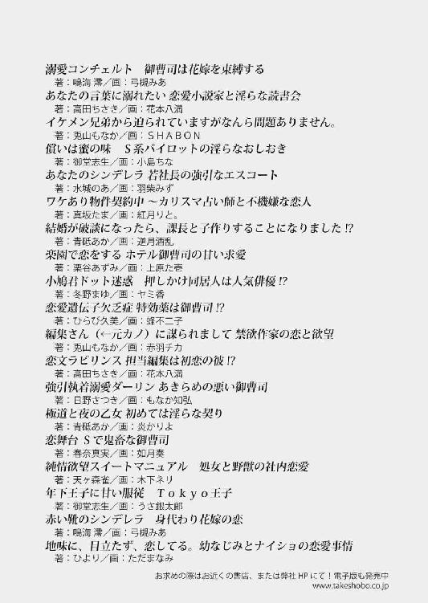

| 才川夫妻の恋愛事情 8年目の溺愛と子作り宣言 (蜜夢文庫) | |
| 兎山もなか & 小島ちな | |
| 竹書房 (2018) | |
この作品は縦書きでレイアウトされています。
また、ご覧になる機種により、表示の差異が認められることがあります。
一部の漢字が簡略字で表示されていることがあります。
イラスト／小島ちな
一章 新入社員のぼやき
謎はすべて、本当に解けたんだろうか？
「野波。Ｎ化粧品の人から電話！」
「はい！」
えっ、私に？ とドギマギしながら自分の席に着く。同時に、声をかけてくれた斜め向かいの先輩に尋ねられる。
「野波、何番？」
すぐに〝内線の番号を聞かれているんだ〟と気付き、自分の固定電話の番号を告げた。
「えっ、あ......７７４６です！」
「ん」
先輩はすぐに転送してくれて、私のデスクの電話が鳴る。先輩はさっき、〝Ｎ化粧品の人から〟だと言っていた。
野波由佳。ここ、東水広告社に入社して三ヵ月目。今まで電話は先輩への取次ぎばかりだった私に、初めて私指名で得意先から電話がかかってきました。
（......なんだろう！）
ちょっと嬉しい。〝先輩に話したほうが早い〟と思わずに私を頼ってくれる。少しずつ独り立ちできてきてるのかなって、ワクワクする。
浮かれた気持ちが表に出ないように、深呼吸して電話に出た。
「──お電話代わりました。野波です。お世話になっております！」
これでもかというほど元気よく出た電話の用件は、〝請求書の項目間違ってますよ〟というお叱りの電話だった。請求書を発行したのは私。
浮足立った気持ちは一変、撃沈した。
「そう落ち込むな。慣れるまでは仕方ないって！」
隣の部の中堅の先輩──駒田さんに慰められながら、私はデスクで項垂れる。
「でも......松原さん、呆れてました。〝なんで私の確認とらずに勝手に発行したの？〟って」
「......それはちょっと具合悪いな。確認はしないと、松原もお前のこと庇いようがないし」
「ですよね......。申し訳なさすぎて胃が痛い......」
「豆腐メンタルか！ 打たれ弱いと仕事まわってこないぞ」
「それは困る！」
「それで持ち直すからお前は立派だよ......」
だって憧れて入った会社ですもん。仕事ができないと意味がない。
ましてや、〝仕事ができる〟と評判高い先輩のトレーニーになれたのだ。私のトレーナーの松原静さんは、どんなに忙しいときでも爪の先まで綺麗な、格好いい女性。
たくさん仕事術を盗みたい。そのためにもっと頼ってもらえるように、ちゃんと役に立ちたい。
「まあ、小さな仕事から名誉挽回するしかないな。ほら、外線鳴ってる」
「はい！」
〝しゅたっ！〟と固定電話に手を伸ばす。受話器を持ち上げ、〝代理応答〟のボタンを押す。光っていたのは才川さんの席の電話だった。
「はい。東水広告社、才川のデスクです」
電話の向こうからは、若い男性の丁寧な声がした。
『お世話になっております。わたくし、Ｋ印刷の西脇と申します。営業二課の才川主任はいらっしゃいますでしょうか？』
やっぱり才川さん宛ての電話だった......。ランプが光った時点で覚悟していたけれど、どう返答しようかと焦ってしまう。
「申し訳ございません。才川はお休みをいただいておりまして......」
『あ、そうなんですね。次の出社はいつになりますか？』
ですよね。それを訊きますよね。用事があって電話したんですもんね......。
申し訳ない気持ちになりながら、正直に答える。
「えっと......一週間後に」
『え!? そっか、一週間後か......』
あぁっ、困ってる......！
私は慌てて言葉を繫ぐ。
「あっ、ですが......メールは見ているかと思います！」
『あ、そうなんですね！』
電話の相手の声が明るくなって、私はほっと胸を撫で下ろす。メールで解決するならよかった。才川さんのことだから、メールはたぶん見ているだろう。社用スマホなら外からでも見られるし。
しかし、西脇さんは尋ねてくる。
『ちなみに、花村さんはご在席でしょうか......？』
あれ？ 急ぎの用件なのかな......？
私の中にまた言いようのない気まずさが湧き上がってくる。質問には答えねばならないので、慎重に言葉を選ぶ。
「その......実は花村も、同じく一週間不在で」
どれだけ言葉を選んだところで意味は一つだった。だって本当のことだもの......。
電話の向こうで西脇さんが、ぽかんとしているのがわかる。
『あ、えっ......えぇ？』
混乱している西脇さん。これはもう正直に話すほかない。
私が二人の不在の理由を告げると、西脇さんは驚きながら『えー！ そうなんだ！ へぇー！』と楽しそうに笑っていた。笑って許してくれるのだから優しい人だ。西脇さん。
正直、才川さんには〝休む前にちゃんと周知しといてくださいよ！〟って気持ちでいっぱいです。まあ、直近仕事の予定がある人には伝えていたんでしょうけど......。
西脇さんからの電話を終えてひと息つく私に、通話をずっと聞いていたらしい駒田さんが愉快そうに笑いかけてくる。
「〝一週間いない〟って、何事かと思われるよなぁ。しかも、二人揃って」
「本当ですよ......」
一週間不在の二人。
営業の才川千秋さんと、その補佐をしている花村みつきさんは仕事の息がぴったり。二人は同期同士で、才川さんが花村さんをオープンに溺愛していることから〝才川夫妻〟なんて呼ばれていた。
私が入社してすぐの頃、周りの先輩たちは「あれは二人の鉄板ネタだよ」なんて言って笑っていたけど、私は〝違う〟と思っていた。才川さんの溺愛は全部が全部ネタだとは思えなかったし、二人の間には特別な空気が流れている気がしたから。
だから私は会社の人にヒアリングしながら、〝才川夫妻〟の本当の関係を探ろうとしたけれど......。まさかの大誤算。調査の途中で、私は才川さんを好きになってしまった。
食事に誘って告白までしたものの、結果は清々しく撃沈。二軒目のバーではこれでもかというほど花村さんについて惚気られて、百年の恋も冷める思いをした。
そして、その翌朝。才川さんは花村さんに会社で公開プロポーズをした。
〝才川夫妻〟なんて冷やかされていた二人は、本物の夫婦になってしまった。
つまり、やっぱり二人はただの同期ではなくて、付き合っていたらしいのだけど......。
「才川のアレは、結婚すれば少しは落ち着くもんかと思ってたけどな......」
駒田さんは遠い目をして語る。中堅の貫禄ある横顔が、うんざりした様子で歪む。
「結婚報告の後もアイツ、まだ隣の席に花村がいるのをいいことに、イチャイチャべたべたと......」
「むしろ前より悪化してますよね......」
前だって相当ひどかった。同僚の前で〝アツい一夜を過ごした〟と匂わす発言をしてみたり、事あるごとに「花村好き」と言いまくったりしていた。
でも、それはみんな〝ネタ〟だという認識のもと許されていたのであって......。
「本物の夫婦がそれって......ただのバカップルですよね」
「ほんとだよ......この前なんか、得意先アポの前に花村にネクタイ結んでもらってたぞ」
家でやってほしい。
「さすがに本気で怒ってもいいんじゃありません？」
「俺が注意したら僻んでるみたいになるだろうが。......正直羨ましい！」
羨ましいんかい......。
声には出さなかったつもりが、駒田さんには心の声が聞こえてしまったらしい。
けろっとした顔で、私に向かって反論してくる。
「羨ましいよ。だって、あんなに照れもなく〝好き〟って言えるのは一種才能だろう」
「才能......？」
「だって俺、絶対に無理だわー。嫁に臆面もなく〝好き〟なんて......いやー無理だわー」
駒田さんは意外と愛妻家である。
なんだ、こっちも惚気か......。「そろそろ自分の席に戻ってください」とお願いしようと思っていたら、彼の話は続いた。
「まあ、ウチは結婚してもう長いからっていうのも大きいと思うけど......。そうだな。よく考えたらアイツら、新婚ホヤホヤだもんな。新婚のときなら俺だって！ あのくらいダイレクトに──」
「うわぁ......」
「......おい。勝手に想像して勝手にヒくな」
駒田さんの告白、暑苦しそうなんですもん......。
新婚かぁ......と、私は才川夫妻に思いを馳せた。なんだか変な感じだ。初めて二人に出会った時の印象は〝長年連れ添った夫婦〟みたいだったから、すごく違和感がある。
それにやっぱり、謎が残る。結婚したことを考えると、二人は〝前から付き合っていた〟ということになるけど......。
「意外と口割らねぇよな～」
駒田さんがぼやく。
「才川の奴。誰が問いただしても、いつから付き合ってたのかは絶対言わないんだ。〝いつからだと思います？〟ってニヤニヤするだけで......」
才川さんが笑顔で流そうとするとき、そこには必ず秘密があると思う。
そうやって迷宮入りにされた謎が、いくつかある気がする。
「花村さんのほうに訊いてみるっていうのは？」
「それもやってはみたけど、花村も口が堅くてな......。あんまりしつこく問い詰めてると才川がすっ飛んでくるし。そこを秘密にする理由もよくわからんけど」
確かに。もう結婚まで会社に知らせているのに、秘密はもう意味がないように思う。
だいぶ前からの付き合いなんだろうか？ それとも、実は交際自体はものすごく最近だから、あまりに早く籍を入れたとは思われたくなくて......とか？
「......うーん」
謎が奥深い。秘密をつくられると私の中の探求心が疼いてしまう。
これはまだ調査の余地があるのでは......？
（──なんてね）
私は伸びをして、元気よく声を出した。
「まあ、〝二人がいつから付き合ってたか〟なんて、心底どぉぉぉでもいいですけどね！」
「え、まさかの裏切り！」
私は早々に駒田さんのことを裏切り、才川夫妻への興味をなくして見せる。──終わった恋にこだわっていても仕方がないのだ。私のこの探求心は、仕事や新しい恋に活かすべき。私の物語の主人公は私なのだから。
「ところで、才川と花村って今どこにいるんだっけ？」
駒田さんの問いに、私は深くため息をつく。
また冒頭から出しゃばってしまいましたが、残念ながら今回のお話も、私の物語ではありません。
「二人は今、草津です。温泉でも入ってるんじゃないですか？」
「ひゃー。なんかエロー」
目下新婚旅行中である、彼と彼女の物語です。
二章 才川夫妻の新婚旅行 ～妻は戸惑っている！～
「後半で寄る軽井沢も楽しみだね～。今なら人もそんなに多くないかな？」
東京駅から軽井沢までは新幹線で約七十分。草津に向かうには、そこから更に八十分ほど路線バスに揺られなければならない。そんな風に時間を贅沢に使う長旅は久しぶりだった。
新幹線の窓際に座って、私は興奮しながら外の景色を眺めている。プライベートで新幹線に乗るのなんていつぶりだろう？ 業務や研修出張ではたまに乗ることがあったけど、最後に私用で乗ったのはいつだったか思い出せない。
隣には、ボーダーのＴシャツにアンクル丈のパンツ、ローカットのスニーカーといった休日ファッションの才川くんがいる。惜しげもなく晒されている腕や踝がまぶしい......！
対する私は、この日のために新しく下ろしたストライプのシャツワンピースに身を包んでいた。ブルーの夏らしいデザイン。今の私の浮かれた気分によく合っている。
「たしかに今が狙い目かもな。夏休みに入ると混むだろうし」
才川くんは私の言うことに相槌を打ちながら、腕を組んで姿勢を変え、楽なポジションを探している。ちょっと眠そうな横顔。私はそんな彼をチラ見しながら、こっそりニヤける。嬉しい。なんだろう、この感じ......嬉しい！
言い表しようのない、浮ついていてふわふわとした気持ち。テンションが上がりきっている私はしゃべりたくてしゃべりたくて仕方がないけど、相手が才川くんなのでぐっと我慢する。我慢して、ニマニマする口元をどうにかしようと力を入れながら、お菓子の箱を差し出した。
「おやつ食べる？」
「遠足か」
やっぱり突っ込まれた。「食べない」と言われることも見越してのことだったけど、彼は箱からチョコレートがかかった棒状のプレッツェルを一本抜き出してぽりぽりと食べる。それだけのことに、私はまた〝にへら〟と締まりなく笑いそうになった。
「遠足じゃないでしょ。新婚旅行です」
「結婚八年目になって〝新婚〟旅行って......って感じもするけど」
それは、確かに。会社ではつい先日プロポーズをされたことになっているので、この旅行の名目は〝新婚旅行〟。
だけど私たちは結婚八年目の夫婦だ。
七年前に大学卒業と同時に籍を入れた私たちは、引っ越しがあったし、入社式も迫っていたから新婚旅行らしい旅行はしなかった。その後も結婚を同僚に伏せていた都合もあって、二人揃って長期休暇を取ることもできず。ゴールデンウイークや年末年始休暇なら行けないこともなかったけど、〝どこも混むから〟という理由で避けていた。
（才川くん、人混み苦手だしなぁ......）
だからこれが、私たちにとってはれっきとした新婚旅行なのだ。......結婚八年目を〝新婚〟とは言わないと思うけど、気持ちは新婚なので！
才川くんは久しぶりに食べたこのお菓子をお気に召したのか、手を伸ばしてきてもう一本食べ始めた。
「二人して一週間会社を空けたことってないけど、大丈夫かな......」
「平気だろ。得意先にも休むことは前から伝えてたし」
「〝新婚旅行〟って言った？」
「言った」
「何か言われた？」
才川くんはプレッツェルをちまちま齧りながら、宙に視線を漂わせて思い出している様子。
「......〝おめでとう〟とか。〝ゆっくりしてきて〟とか」
「そっか」
「それから......〝相手って花村さんですか〟とか」
そう聞くと急に恥ずかしくなってきて、私は才川くんから視線をそらして正面に向き直った。才川くんの左手がまたお菓子の箱の中に伸びてくる。
その薬指には結婚指輪が嵌まっている。同じように、私の左手の薬指にも嵌まっている。それがたまらなく嬉しい。
才川くんは言う。
「会社であれだけ口説いておいて、相手がまったく違う女だったら逆にびっくりするよな」
「でもずっとネタだと思われてたくらいだし」
「結婚報告すらネタだと思ってる人もいたけど」
「絶対普段の行いのせい......」
つい先月、会社にバラの花束が届いて、〝誰宛てだろう？〟と思っていたら才川くんが私に用意していたもので、その場でプロポーズされた。七年前に結婚してから、ずっと同僚には夫婦関係を伏せていたのに。どういう心境の変化なのか。
彼は「ちゃんと夫婦になりたい」と言って、プロポーズの後は会社中の人に結婚報告をして回った。
結婚報告の直後は「いつから付き合ってたの？」とか「どうしてＯＫする気になったの？」とか質問攻めにあったけど、あれから一ヵ月が経って今は落ち着いている。大抵は才川くんが、「いつからだと思います？」「俺の粘り勝ちです」と言って笑ってかわしていた。
結婚をオープンにしてからも、彼は会社での溺愛キャラを止めるつもりはないようで。私はまだ才川くんの一挙一動にドキドキしている。
「......私たぶん、いろんな女の子に恨まれてるんだろうね......」
「なんで？」
「本当にネタだって信じてた子もいると思う。テレビ局担当の女の子とか、得意先の人とか......連絡先渡されたりしてたでしょう？」
「目敏い」
「隣の席なんだから嫌でもわかるよ」
事実、そういうことは日常茶飯事だったように思う。極力気にしないようにしていたけど、才川くんはモテる。
最近になって私たちは結婚指輪を嵌めるようになったので、それに気付いて戦慄していた女性陣は少なからず才川くんに好意を持っていたんだろう。思えば、結構残酷なことをしている。既婚者であることを隠しているって罪だ。そんな相手に一目惚れなんてしてしまった日には、目もあてられない。
隣で才川くんがぼやいた。
「お互い様だと思うけどな......」
「......どの辺が？」
「別に。それより、もう一袋開けよ」
そんなにこのお菓子が気に入ったのか......。
二袋も開けるつもりはなかったけど、もっと食べたがる彼が可愛いから開けてあげる。袋を開けて、一本だけつまみ上げて「あーん」と彼の口に向けると、意外なことに彼は「あ」と口を開けた。......どうしたの！ なんで今日はしてくれるの？ 新婚旅行サービス!?
細い棒は瞬く間に彼の口の中。端っこまで食べられて、指先に唇が触れる。彼の唇は柔らかかった。つらい。好き......。
旅行の序盤からときめきすぎて、これじゃ心臓がもたないと思ったので、私は心を落ち着けるために新しい話題を振った。
「......そういえば！」
「ん？」
「こういう旅行は初めてだけど......結婚してすぐに、別に記念日でもないのに良いホテルに連れていってくれたことがあったよね」
「......ああ」
あれは結婚してすぐのことだった。三月十四日に入籍してから、四月一日の入社式までの間に。まだ引っ越しの荷解きも済んでいない中で、唐突に彼が言ったのだ。
〝ホテルのディナー予約したんだけど〟
どうしてこのタイミングで？ と思いつつ、才川くんが企画してくれたことが嬉しくて、当時ものすごく舞い上がったことを覚えている。大学を卒業したばかりの私は、ホテルで男の子と食事をするなんていう経験がなかったし、ましてやその相手が好きな人だなんて、なんて素敵なイベントなのかと。
約束の日は目一杯おめかしをした。今思えば少し背伸びしすぎだったなと思うような、クラシカルなワンピース。才川くんはカジュアルだけど大人っぽく見えるジャケットを着ていて、私はリクルートスーツじゃない彼の姿にドキドキしていた。
夜景を眺めながら、当時ほとんど口にすることがなかった高級なコース料理を食べて、たくさん笑って。すごく幸せな時間だった。
だけど、それだけだった。充分なんだけどそれだけだった。
才川くんがどうしてあのタイミングでホテルのディナーを予約してくれたのか。ただ私を喜ばせようとしてくれただけなのか。今になっても、あの日の目的はよくわからないでいる。
「あの時って、働き始める前でお金もあんまり無かったのに......。どうしてあんなに良いホテルに連れて行ってくれたの？」
「そんな昔のことを今訊くか」
「だって新婚旅行だから。普段は訊けないことを質問してもいいタイミングかなーって」
別にものすごい真相を求めているわけじゃない。ただあの時、彼がどんな気持ちで誘ってくれたのかが訊きたいだけだった。
それなのに才川くんは〝ふい〟と顔を背けて返事を濁そうとする。
「特別な理由なんてない」
「特別じゃない理由でもいいよ」
「しつこいな」
新婚旅行サービスでも、教えてくれる気はないらしい......。これ以上追及して不機嫌になってしまったら台無しなので、仕方がないから折れてあげる。
「そうですかー」
彼がこうも頑なに教えてくれないということは、もしかしたら私が思う以上の真相があるのかもしれない。なんだろうなと想像を膨らませていると、才川くんは素っ気ない声で。
「そうですよ」
そう返事をして、私の左手を取った。
「えっ......」
突然の恋人繫ぎに戸惑う。......本当にどうしたんだろう。人目のあるところで手を繫ぐのは、演技じゃない限りしないタイプだと思ってた。結婚してからってあったっけ？
才川くんは手を繫いだことに言及することなく、肘掛けに頰杖をつきながら穏やかに笑ってこっちを見る。にぎにぎと指の間を握って、結婚指輪が嵌まっている左手の薬指を重点的にくすぐってくる。こそばゆくて笑ってしまう。
「っ、ふふっ......なに？」
「別に。なんでもない」
「そうですかー」
「そうですよ」
さっきと同じやり取りを繰り返して、イチャイチャした雰囲気。
残りの乗車時間も彼とお菓子を分け合いながら過ごした。
「うわぁー」
軽井沢からは路面バスに乗って、降り立ったバスターミナルから旅館が立ち並ぶ道をとことこ歩いていくと、今日宿泊予定の宿がその姿を現した。私の口からは自然と声が漏れる。宿の外観はサイトに載っていた写真以上に趣があって、古めかしく、立派で。
夏が近付いて段々日が長くなってきたから、もうすぐ夜なのにまだ薄明るい。そんな明るさの中、宿を取り囲む行燈が優しく光り、幻想的な雰囲気を作り出していた。
しばらく感動してパッと隣を見る。才川くんがこちらを見ている。
「気に入った？」
そう尋ねてきた顔が優しくて、慈しむような眼差しに胸の奥を絞られた。この宿は私が知らないうちに才川くんが探してくれていた。彼の表情を見ていると、私を喜ばせようと思いながらスマホと睨めっこする彼の姿が想像できて、なんだか和んだ。
私は「うん」と笑って返し、ささやかな幸せを嚙みしめる。
暖簾をくぐると着物姿の女性が私たちに気が付いて、優しい笑顔を浮かべながら歩み寄ってきてくれる。
「いらっしゃいませ。ようこそお越しくださいました」
仲居さんの深々としたお辞儀と美しい所作に私が恐縮していると、才川くんは自分の名前と予約していた旨を淀みなく伝えて宿泊の手続きを済ませる。その間私は〝ぽけーっ〟としながら、彼の背後で館内を見回す。
中に入ると上質な畳の匂いに包まれて〝ほうっ〟と息をつく。上がり框の先は一面、畳敷き。吹き抜けの空間のいたるところに、年季の入った漆黒の柱。待合スペースには歴史を感じさせる囲炉裏が残されていてそれもまた風情がある。
手続きが済むと仲居さんが私たちに手を差し出し、「お荷物をお持ちいたします」と申し出てくれた。
才川くんは自分の分は大丈夫と断って。
「妻の荷物だけお願いできますか」
「かしこまりました」
（妻！）
あまりにナチュラルにそう呼ばれて、驚いているうちに私が手に提げていた荷物は仲居さんの手に移っていた。
「あっ......ありがとうございます」
（......妻!!）
最近でこそ会社でそう呼ばれることも増えたけど、それはあくまで変わった関係性を強調するような、彼のネタとしての文脈でそう呼ばれることが多かった。こんな風にしれっと、自然に〝妻〟と呼ばれることってそう無かった気がする。
頭の中で何度もリフレインしながら、ふわふわした足取りで畳の上を進んでいく。仲居さんはころころと可愛く笑って、客室までの道を案内する傍ら、いろんな話をしてくれた。
「ご夫婦でこういった旅行をされるのは初めてだと旦那様からお伺いしました。特別な旅行で当館を選んでいただいて、本当にありがとうございます」
「いえっ......」
選んでくれたのも才川くんだったので私はまごついてしまう。仲居さんは気にすることなく朗らかな笑顔で。
「今日は蔵元さんがこの季節だけ出している微発泡の日本酒が手に入ったそうで、食前酒にはそれをお出しすると料理長が申しておりました。他にも珍しい日本酒をたくさん揃えておりますので、お酒も是非お楽しみくださいね」
「わぁ......ありがとうございます」
「ちなみに私のお勧めは同じ蔵元さんの純米吟醸です。爽やかな飲み口ですが甘みもあって、飲みやすいのでお勧めですよ」
それはなんとも才川くんの好きそうなお酒......と考えているうちに、今日宿泊予定の部屋へと辿り着く。
仲居さんが案内してくれた部屋は、エントランスや廊下とはガラリと雰囲気が変わり、より洗練されたモダンな内装だった。立派な梁が見える高めの天井。三間続きの部屋の一つには、大きく丸い窓のある寝室がある。ふかふかのローベッドが気持ちよさそう。壁の一部やソファには竜胆の花のうっすらと淡い青紫がアクセントとして使われている。ほんのりと灯る暖かなオレンジの照明も相まって、上品な空間を作り出していた。
室内の備品について一通り説明を受け、夕食と入浴の時間を確認した後、仲居さんが部屋を出て行くと、私たちは息をついた。
「ここに二人だけで泊まるなんて、贅沢な......」
「サイトの写真以上に雰囲気あるな」
才川くんが丸窓を開けると、外にはもくもくと湯煙がたちこめる湯畑が見えた。薄暗い空に向かって、ぽつぽつと灯り始めた街灯に照らされながら白くうねり、舞い上がっていく。眺めているだけで早く温泉に浸かりたくなる光景だった。
だけどもう一つ、部屋に足を踏み入れてからものすごく心惹かれているものがある。
「才川くん......」
「ん？」
「布団。ダイブしてもいい？」
寝室のローベッドを指さす。普段外泊をしないから〝ローベッド〟を見ること自体初めてだった。綺麗にベッドメイクされていて、見るからに寝心地がよさそう。これは早々に感触を確かめなければ！
意気込んでいたら、才川くんに止められた。
「だめ。化粧がつくから、風呂に入ってから」
「えーっ......」
まあ、そう言われる気がしたから事前に確認したんですけどね。
私は渋々我慢して、旅行鞄の中の物の整理を始める。このあとすぐ使いそうな替えの下着など、お風呂セットを準備する。
まだ窓の外に目をやって湯畑を眺めている才川くんを目の端に捉えながら、考えた。
（ベッド、一台しか使わなかったりして......）
今夜の新婚旅行サービスに、全力で期待している。
完全に日が落ちてしまったら外の景色が楽しめないので、夕食前に一度温泉に入ることにした。旅館の大浴場で、男女分けられた暖簾の前で一旦解散。鍵が一つしかないため、先に出たほうが休憩スペースで相手を待つことにした。
私の場合、ボディケアや髪を乾かすのに時間をとられる。いくら才川くんが長風呂をしても、彼のほうが私より遅くなることはないだろう。お湯に浸かって露天の景色を楽しむのはほどほどにして、才川くんを待たせないために急ぐ。ほんとは、最初から才川くんに鍵を預けて部屋に戻っててもらえばよかったんだけど。そこは新婚旅行。なんでも雰囲気が大事！
バタバタと入浴を済ませて再び暖簾をくぐると、才川くんが休憩スペースの長椅子に座って待っていた。
「早かったな」
自分が待つことを見越してか、手には文庫本を持っている。そしてその姿は......。
「......浴衣！」
触れずに我慢しようかと迷ったものの、無理だった。
初めて見る夫の浴衣姿にテンションは爆上がり。すぐ傍まで駆け寄って座り、近くでガン見する。才川くんは慣れたもので、私の反応にヒく様子もなくしれっと言う。
「浴衣だな。お前もだけど」
めちゃくちゃ似合う......！ 知ってたけど！
今回の旅行が温泉旅行に決まったとき、真っ先に期待したのがコレだった。才川くんの浴衣姿。グレーを基調にして、差し色に黒とえんじの細いストライプ。紺の羽織を羽織って、お風呂上がりで色気は五割増し。
率直に言って......エロい！
「......触ってもいい!?」
「痴女か。どこ触るつもりなんだ」
さすがに呆れられた。
夕食の時間になると私たちは個室の食事処へ行って、地元の食材をふんだんに使った豪勢な料理を頂いた。仲居さんとの話の中に出てきた食前酒に始まり、茄子の水晶煮やぼたん海老のお造りなど、色とりどりの料理に、技巧が凝らされた料理。
出てくるもの一つ一つに感動して舌鼓を打つ。才川くんと感想を言い合ったり、明日からの旅程の話をしたりしているとすぐに時間が過ぎた。あっという間にお腹も心も満たされて、止め椀。次いで、デザートの水菓子を出される。
食事を終えて、部屋に戻ったら歯を磨いて。やっとのこと私は、お目当てのローベッドにダイブする。
「ひゃあ～天国......！」
枕に顔を埋め、うつ伏せのまま脚をパタパタ動かす。ふかふかの肌触りも、冷たいシーツの感触も気持ちいい。ご飯を食べて体温が上がっている今、ちょうどよかった。
「もうここに住みたいなぁ～......」
あまりに心地いいからそのまま眠りに落ちそうなくらい。温泉に入って、美味しいものでお腹を満たして。後は何も気にせずこのまま眠ってもいいなんて、どんなご褒美？ 私最近何か頑張ったっけ？
布団と同じくふかふかの枕に頰擦りしながら、幸せな気持ちでうつらうつらとしていると、背中にずっしりと重さが加わった。
「......才川くん？」
心臓が一気に、メーターが振り切れるみたいにいっぱいいっぱいになって、うるさいほどに脈打つ。私の体は彼の大きな体にすっぽり覆われてしまった。
才川くんは私の耳の裏に唇をつけて囁いてくる。
「......気持ちいいことしないの？」
ぎゅぅっと心臓が痛くなる。呼吸が荒くなってしまいそうで、胸が苦しい。身じろぎをしようにも彼の下敷きになっていてそれすら叶わない。
私はドキドキしながら答えた。
「......してくれるの？」
ちらっと背後を振り返ってみると、彼は答えずに微笑んだ。
ドキドキするけど、私はまだ油断していない。寸止めの可能性もあるからだ。七年間、焦らされる夜を何度も経験してきた私はさすがに学習している。どんなに甘い空気になったとて、彼が突然手のひらを返して〝お預け〟をしてくる可能性は充分にある。
才川くんは答えないまま、ゆっくりとした動きで唇を重ねてきた。背中やお尻、脚にまで温かい重みを感じながら、味わうようなキスに徐々に溺れていく。
「んっ......ふ......」
キスで彼の本気度を測ろうと試みるけど、彼のそれはいつだって甘いので判断がつかない。しばらくキスを愉しんだかと思うと、背中の重みが無くなる。重心はお尻のほうへ。彼が上体を起こしたらしい。才川くんは自分が着ていた羽織を脱いで、それをぱさりと私の真横に落とした。今度は私の番。片腕ずつ後ろに引っ張られて、羽織を脱がされる。
その途中で、つい笑ってしまった。
「ふふっ......ストレッチみたい」
「色気のないこと言うな」
ちょっと怒られた。
声からして少しムッとしているであろう才川くんは、続けて私の帯に手をかける。私の腰の下に手を差し込んで少し体を浮かさせながら、しゅるしゅると帯を抜き取る。浴衣なんか脱がせたことないだろうに、彼は器用だ。......脱がせたことないよね？ ないと信じたい。
思いもしなかった不安が急に頭をもたげたものの、それも束の間。才川くんは浴衣のあわせ衿に手をかけ、肩から浴衣を脱がせ始めた。
「ん、あぁっ......♡」
また背中にのしかかって、露わにした素肌にキスしてくる。首の裏。首筋。背中。
一気に脱がされるより、少しずつ剝かれていく今の感じが恥ずかしかった。
「さ、才川くっ......」
「ん......？」
「電気消して......」
「ああ。......このままじゃ嫌？」
背中にキスをしながら彼がしゃべるので、私はゾクゾク気持ちいいのが止まらず、枕に顔を突っ伏したまま懇願する。
「だって......こんな明るいのっ......」
「うつ伏せのままするから」
「でも」
「そんなに恥ずかしいなら、布団で胸隠してたら？ 電気は消さない」
はっきりと拒否されて諦める。明るいまま行為に及ぶらしい。
また少し浴衣を捲られ、お尻の上までが露わになる。私の上で才川くんは座る位置を少し後ろにずらした。そして、私の体の両方の側面、胸の横から横腹、腰までを〝つつつ......〟と指先でなぞりながら、腰にキスをする。
「ひゃぁん......！」
こそばゆさと気持ちよさでのけぞった。私が少し胸を反らした拍子に才川くんは胸の下に手を差し込み、左胸の尖りをコリコリといじる。
「ん......敏感だと思ったら、胸もすごい。硬くなってる......」
「やっ......あんっ♡」
「気持ちよさそうだな。もっと？」
「んんっ......！」
左の乳首をいじっていた手が、人差し指と親指でぎゅっと抓ってきた。私の体を知り尽くした手が、〝どこをどう触ると声をあげるのかも知っている〟という風に、怖いほど的確に動く。胸の先の次は乳輪を。一番敏感な尖りを人差し指と中指で挟むようにして、指の腹で乳輪を擦ってくる。
「んっ、んっ......♡」
その間にも彼はまた浴衣を背後から少しずつ捲って、ついにお尻にかぶりついた。
「あっ......」
柔らかい臀部に軽く歯を立てられ、腰から這い上がるような強い快感が走る。少しの痛みと強すぎる気持ちよさに、私は耐えきれず横を向いた。
浴衣はもうほとんど全部脱がされている。
ちらっと彼の様子を窺うと部屋の電灯で逆光になっていた。才川くんは上体を起こして、唾液で濡れた自分の口を拭い、欲情した目で私のことを見下ろしている。彼も私も、若干の息切れを起こしていた。
荒くなった呼吸を落ち着けながら、口元を拭う才川くんが色っぽく笑う。
「体、見えてるけど」
私が横を向いたから、胸や恥丘が見えてしまっていることを言っているんだろう。だけどどうしようもなかった。背中を向けたら、お尻を嚙まれてしまう。仰向けになったら、きっと今度は胸を嬲られてしまう。どっちつかずで裸体を横に向けたまま、私はくしゃくしゃになった浴衣の上で小さく丸くなった。才川くんの目をじっと見つめながら。
すると彼は目をそらすことなく、ぽそりと言う。
「......もうやめる？」
──ほら。こんな意地悪を平気で言う。
明るい部屋で肌を晒す格好は恥ずかしいから、傍にあった掛布団を手繰り寄せて胸を隠した。それなのに私の口は、まったく矛盾したことを言う。
「やめないで。......もっといじめて」
彼が息を吞む気配がして──その直後、少し強引に肩を摑まれて仰向けにさせられた。
電灯の下で裸体を曝け出す。真顔になった才川くんと見つめ合って、興奮していることが伝わってきて。それだけで、何もしなくても気持ちよかった。
彼は言った。
「......いいよ」
言うなり、すっと彼の頭が動いて、私の胸の上へ。
〝ちゅっ〟と胸の先っぽを吸われたと思うと、〝カリッ〟と歯を立てられる。
「あっ......♡」
「〝いじめて〟とか......そういうのはさ」
「っ、ん......」
「歯止め利かなくなるから、言う時は覚悟して言えよ」
そう言いながら、才川くんは苦しそうに〝はぁっ〟と息を吐き出した。
私はそろりと彼の下半身に目をやる。彼の浴衣の股間辺りは、テントを張るように一点を起点に張り詰めていた。どうするんだろう。もう挿れるのかな......。
いじめてくれると言った彼が、次にどういう行動に出るのか。予想がつかずに待っていると、才川くんは仰向けの私の隣に寝転がって、胸を吸いながら秘部へと手を伸ばした。
「は、うぅっ......♡」
細い指が恥毛を撫でつけ、そのまま花芯に触れてくる。敏感に尖ったソコを押し潰したり、抓んだりして。
あまりに気持ちいいから怖くなって、胸に吸い付く彼の頭に手をやった。しっかり乾かされた髪は柔らかく、抱きしめると一瞬ほっとする。だけど長くは続かず、彼の舌と指の動きに翻弄されてまたすぐに乱された。
彼が「ナカも触る」とつぶやいた直後には、もう彼の指の第二関節までが私のナカに沈み込んでいた。
「あ、あああ、あ......」
ナカに入ってくる異物感にもぞもぞして、最終的に腰が浮く。客観的に見るとそのポーズは、彼の指を喜んで迎え入れているようでもある。
（こんな恥ずかしい格好......）
だけど体は理性に従ってくれなくて、私は彼の指の刺激欲しさに腰を突き出す。
才川くんがそれを黙って見過ごしてくれるはずもなく。
「やらしい......俺の指がそんなに美味しい？」
そう言って、彼が取り上げるようにナカから指を引き抜こうとするので。
「やっ......だめっ......」
私のナカは縋るように彼の指を締め付け、それでも指が出ていこうとするから腰が付いていってしまう。情けないポーズだとわかっていながら、体は欲望に忠実に動く。
才川くんは私の乳房の下側に頰擦りしながらおかしそうに喉で笑った。
「どうしたんだよ。今日、めちゃくちゃ乱れてる気がするんだけど......。前からこんなだったっけ？」
「違うっ......」
泣きそうになりながら首を振る。前からこうなわけじゃなかったと思う。彼が「もうやめる？」なんて訊くものだから、それは嫌だと思うと同時にスイッチが入ってしまった。
私だって、自分の痴態に動揺しているし、少しショックを受けているくらいだ。夫婦になって長いと言っても、彼を幻滅させたらと思うと怖い。
それなのに「いじめて」なんて口走ってしまったのは......。
「もっとやらしいとこ見たい」
──そんな私の一面を、彼が受け入れてくれることに期待したからだ。
痴態を晒して幻滅されたくはない。でも、彼がどこまで受け入れて、愛してくれるのかも確かめてみたい。私は矛盾した気持ちを抱えながら、才川くんの愛撫に身を委ねる。
付き合った当時だったら怖くて試しようもなかったことが、深く愛されていることを知っている今なら、少しだけ大胆になれた。
探り探りではあるけれども。
「......あまりにやらしかったら、嫌じゃない？」
「ううん、全然いい」
優しい声で返事をして、才川くんは胸の先への愛撫を再開した。閉じられた瞼の先から伸びる睫毛が長い。彼の口の中で、歯を立てられた乳首は充血して敏感なまま、彼の舌に何度も弾かれ、嬲られる。
「んんッ......♡」
「ん......」
ナカから出ていこうとしていた指も、さっきの緩慢な動きとは打って変わって激しく動き始めた。時折上側の気持ちいいところを〝ぐっ〟と押さえながら、膣の奥のほうを中指の腹で〝トントントン〟と叩いてくる。
「ひっ、あッ、あぁっ！」
「はッ......イきそう？ 爪先が伸びてる」
「待って、だめ！ 止めてっ......！」
ものすごい快楽の波が押し寄せてきているのを感じて、悲鳴のような声で哀願する。
才川くんは私の胸から口を離して、間近に顔を近付けてきた。唇は唾液で艶めかしく光っている。
「〝いじめて〟って言われたから止めない」
「だめ！ やっ......だめっ......だ、め......あっ......！」
まずい。だめ。このままじゃ。
しゃべっている間も彼の指の動きは容赦がなく、私の弱いところばかりを押さえて攻め立ててくる。
「うっ、ひ、やぁっ......♡」
もうすぐ自分が思い切り達してしまうのがわかった。彼と繫がる前から、指だけでここまで感じているのは初めてな気がして。自分だけが盛大にイってしまうのは怖くて、恥ずかしくて。せめて顔を見られないように、自分の手で覆い隠そうとした。
「こら」
その手は呆気なく、彼のもう片方の手に捕まってしまう。
片手だけでは顔をうまく隠せない。
「離してっ......」
「顔隠すな」
「だって......変、なんだもっ......ぁっ」
「なにが？」
「っ......気持ちよくて、ちゃんとした顔できないっ......」
「なんだよ〝ちゃんとした顔〟って」
彼はくしゃっと笑って、唇を胸から首筋へ移動させた。じっと観察するような目をした顔が近付いてくる。
「あっ......♡」
「ちゃんとしてなくていいから、顔見たい」
「ヒいちゃうかもしれないからっ......」
「いいから。......周りが見たらヒいちゃうくらいエロいとこ、俺に見せて」
ねだりながら、ベロリと顎の裏を舐め上げてくる。
「んんっ......あ、あうっ......ふぁぁぁっ！」
彼の指が私のナカを大きく激しく搔き回し、脚の間からははしたない水音が止まらなかった。彼の指の腹がイイところを叩くたびに次から次へと溢れて、腰がガクガクと震え始める。
「だめっ......あ、っ、くぅっ......だめぇっ......！」
「顔真っ赤にして......はぁ、ん......いいよ。エロい......可愛い」
「んッ......」
欲情した彼の顔が間近に迫ってきたと思うと、キスをされていた。唇の間から割り込んできた舌が口内をぐるっと一周舐め回して、頰の裏の粘膜や歯列を丁寧に舐めていく。その間も指は休むことなく、私のナカで蠢いた。
「ん！ ん！ んんっ......んーっ......」
「ん、っ、はぁっ......ん............イきそう？」
彼が問いかけるために一瞬だけ離した唇。彼と私の口の間に唾液の糸が伝う。私がコクコク頷くと、才川くんは「うん......」とほぼ息だけで返事をして、また私の唇を塞いだ。
「ふっ......！」
唇が腫れるかと思うほど強く吸われ、舌が蕩けそうなほど弄ばれる。
降ってくるキスが気持ちよくてたまらないから、私は彼に全部委ねるように体を開いた。膝を左右に広げ、彼の指先から与えられる快感を享受する。
同じところを何度も擦られ、どんどん敏感になって、そして最終的に──。
「は、ふっ......んんぅっ......！」
〝ビクビクビクッ！〟と内側から痙攣が起きて、程なくしてものすごい疲労感に襲われた。余韻を残すように小さな痙攣が続くなか、体から力が抜けていく。
才川くんは私の口の中から自身の舌を抜いて、最後に〝ちゅっ〟と唇にキスを落として口を離した。それと同時に、膣の中からもゆっくりと指を引き抜いていく。
「ん......っ」
ナカから指が出ていく感覚に声が出そうになるのを我慢して、口をきつく結んで。目前にある才川くんの顔を見た。
彼も最後のほうは苦しかったようで、頰が上気してほんのり赤くなっている。
「上手にイけたな」
そんな言葉で、優しく笑いかけられた。......どうしたんだろう、今日。エッチの最中すら、なんだかいつも以上に甘くて、調子が狂ってしまう。
これも新婚旅行スペシャル？
「疲れた？」
彼の鼻の頭で前髪をくしゃくしゃされる。甘い仕草に胸を甘くしながら私は答える。
「疲れた。......けど」
「ん？」
「......気持ちよかった」
丸い目を向けられ、その目は段々優しく細められる。噎せ返りそうなほど甘く幸福な空気。才川くんは優しい顔のまま私と目線を合わせて。
「満足してもらえたならよかった。──でもな」
「......え？」
両方の手首をそれぞれ布団の上に押し付けられる。曝け出されたままの胸。私を押し倒している才川くんの浴衣も前がはだけて、見えていた。いろいろと。
彼は私を見下ろして、色気を垂れ流しながらぺろりと舌舐めずりをする。
「〝気持ちよかった〟なんて過去形にされても困る。夜はまだこれからだし──旅行自体まだ、一日目なのに」
「いや、あの......」
この身に迫る甘い危機。才川くんは張り詰めたモノを私の濡れた部分に擦り付けながら、不穏なことを言った。
「ちゃんと堪能してくれよ。──一週間、全部」
「あっ、あぁっ......♡」
この夜は深かったです。
──翌朝。障子の隙間から漏れる朝日が眩しくて目を覚ました。
才川くんの匂いの中に交じる、見知らぬ和室の香り。普段あまり嗅ぐことのないその香りに、一瞬〝ここどこだっけ？〟と混乱して、すぐに旅行中であることを思い出した。そして、もう一つ思い出した。つい数時間前まで、私は彼に激しく愛されていたのだと。
「......はぁ」
自分を抱きしめる才川くんの、疲れて眠りこけている顔。私は小さく息をついた。
何度も彼のモノを突き立てられたせいで腰が鈍く痛む。彼は〝まだ一日目〟と言って、繰り返し私のことを抱いたけど。一日目だからこそもう少しセーブするべきだったのでは......。この後の旅程に支障が出ないといいけど。
若干呆れはしたものの──求められると嬉しかった。最中は眠気と体力の限界でヘロヘロになってしまうけど、彼が何度も「もう一回」「まだ足りない」と熱く囁くたびに、心が満たされていく。一時期は〝自分だけが彼と繫がりたいんだ〟と思って切なくなることもあったから、余計に。
翻弄されて悔しいやら、嬉しいやら。結局〝愛しい〟が一番にきて、下から見える彼の顎に〝えいっ〟とキスをした。唇を顎に届かせようと体を伸ばした瞬間に──下腹部で〝どろっ〟と体液が動くのを感じて。
「ひゃぁぁっ......」
変な声が出た。
驚いて〝バッ！〟と布団を捲り、自分の下半身を見る。羽織るように着ていた浴衣は前がはだけている。体は眠る前に才川くんが拭いてくれたのか、ベタベタしてはいないけど......自分の股から零れた白い液を目にして、固まった。
（どっ......どれだけ......！）
どれだけ私のナカに射精したのか。
ちょっと動いただけで零れてきた精液に戸惑って、上を向いて才川くんの顔を見る。すると彼はさっきの私の声で目覚めたようで、少し瞼を開けていた。目の下に薄いクマができている。
「ん......おはよ」
「あっ......おはよう。才川くん、あのっ......」
零してしまう。浴衣と布団を汚してしまう。
どうしていいか困ってまごつく私を見て、才川くんは状況を察したのか〝ああ〟と納得したように相槌を打った。そしてペラリと布団を捲って......。
「零れてきちゃったか。やっぱり」
「......〝やっぱり〟って！」
体を拭いてくれたなら、もう少し処理してくれてもよかったのに......！
そんな直接的なことを言葉にするのは憚られて、文句を言うこともできない。私はこれ以上零さないように体の傾きに気をつけながら、才川くんにお願いする。
「ティッシュ取ってっ......」
「なんで？」
「なんで、って......」
まだ眠そうな彼は起き上がる素振りも見せず、目を閉じて私のこめかみに唇を寄せてきた。このまま二度寝しかねない雰囲気に焦る。
「拭かなきゃ、動けないっ......」
「動かなくていいじゃん。仕事もないし、朝食だってまだ受付始まったばかりだから後でいい」
「あっ......」
才川くんは私の体を抱き直しながら、下腹部からお臍までを〝つつつ......〟と撫で上げた。その動きに従って、お腹に何か込み上げてくるようで、ゾクゾクしてしまう。
彼は言う。朝に似つかわしくない官能的な声で。
「ドキドキしない？ ここに俺の精液が溜まってるの」
ドキドキは、する。ものすごくする。彼が私と子どもをもうけるために注いだものだと思えば、そりゃあ。
「んっ......♡」
目尻にキスして甘えてくる。湿った唇や濡れた声が昨晩の記憶を呼び起こしていく。
朝から変な気持ちにさせられて私が困っていると、彼はあっさりと撤回した。
「でもまあ、ずっと同じ体勢でいるのもつらいか」
「えっ」
「朝風呂行く？」
そう言って、才川くんは体を起こした。頭上にあった寄木細工の箱からティッシュを数枚取り出し、私の局部を拭き始める。
「わっ！ や、待って、自分でっ──」
「うん。自分で出して」
「え？」
「ほら、力んで。ナカから俺のを押し出すイメージで......」
「な、なななっ......」
いつも通りのトーンで言われても騙されない。なんて破廉恥なことを......！
ついさっきまで眠たい顔をしていた才川くんは、今は水を得た魚のように楽しそうに、意地悪く笑っている。
「自分でできないなら俺が搔き出してやろうか？ 指で」
「いっ......いらないっ！」
指を挿れられたらそのまま気持ちよくさせられて、なしくずしで朝からエッチになだれこむのは目に見えていた。
心の隅では〝そんな展開も悪くないかも〟とちょっとだけ思ったけど......。でも。繰り返すけど、旅行は始まったばかり。まだ二日目の朝だ。こんなに最初からエンジン全開でなくともいいんじゃないかなぁ......！
この後才川くんに連れられて、客室に備え付けられた露天風呂に一緒に入った。二人で入っておいてただ汗を流すだけで済んだはずもなく、縁に座って一回。湯船の中に立って、縁に手を突いてバックで一回。開放的なセックスを楽しんだ後、布団に戻って一回。結局全部ナカに出されてしまった。
疲れ果て、眠りこけて──次に目を覚ました時には、朝食の受付時間はとっくに過ぎていた。
「ごめんって」
「......」
「なあ。朝メシ逃したことは謝るから」
......そこだけじゃない！ 朝ごはんは楽しみにしていたけど、そこだけじゃなくて！
朝になってからの三度の行為で本格的に足腰が立たなくなってしまった私は、頭まで布団を被って才川くんのことを睨んだ。
二度目のプロポーズの後だって、ここまで積極的じゃなかったと思う。そりゃあ、お預けばかりの日々を思えば、ここ最近はすごく増えたと思うけど。さんざん焦らされたとしても、最終的にきちんと抱いてもらえるようになったと思うけど。それでもこんなに際限なく抱かれ続けることはなかったと思う。
一体どうしたんだろう？ 八年目にして性欲が旺盛になったとか......？
どうにも不思議で、私は布団を目深にかぶったまま、隣に寝そべる才川くんの顔をじっと観察した。何か変わったところは無いかと。
「なに？」
私の視線を真正面から受けて、彼は朝からあんなに動いたにもかかわらず涼しい顔で私のことを見つめ返した。
何も変わっていないような気がする。以前と同じでポーカーフェイスだし、出会った頃と変わらず格好いい。むしろ出会った頃よりも格好いい。顔のパーツ一つ一つまで、私の好きなカタチをしている。薄くて色っぽい唇。すっと通った鼻筋。切れ長の目も長い睫毛も、全部好き。
（......じゃなくて！）
いつの間にか夫の顔に見惚れて、目的を見失っていた。彼の変化を見つけだそうとしていたのに！
返事をせずに百面相をする私を訝しんで、才川くんは眉をひそめる。〝また何か変なこと考えてるな......〟とバレてることが伝わってきて、変なところだけ以心伝心ができているこの関係を呪う。
なんとなく恥ずかしいのを我慢し、じっと見つめ続けた。この宿に着いてから、彼が執拗なまでに私を求めてくる理由は......。
（............子ども？）
真っ先に頭に浮かんだのはソレだった。二度目のプロポーズを境に変わった最も大きなことの一つに、彼が避妊をしなくなったことがある。「子ども欲しいんだけど」という言葉も耳にしている。
（早く子どもが欲しいのかな？）
彼が急いでいるのだとしたら......この旅行ってもしかして、子どもをつくるための旅行だったとか？ ああ......そうなのかも。そう思えば納得できるかも。彼がいつも以上にがっついてくるのには、それなりの理由があるはずだし。
もし彼が本当に、今回の旅行の目的を〝子作り〟に据えているなら、私は彼に言わないといけないことがある。昨日から積極的な才川くんには言いにくいけど、期待していたらと思うとそれもそれで忍びないし......。
私は布団から頭を出し、隣の彼に話しかけた。
「......才川くん、あのね」
「ん？」
「私、言ってなかったかもしれないけど......いま赤ちゃんできる時期じゃなくて」
前に一度、いつ頃ができやすいかを二人で確認したことがある。でもそれは少し前の話だし、彼が時期を誤解していても不思議じゃない。
「排卵期はもう少し後だから......今いっぱいエッチしても、赤ちゃんはできないんじゃないかなぁって......」
黙って聞いている彼の目を見ているうちに、段々自信がなくなってきて言葉が尻すぼんだ。がっかりしたかな。あんなに張り切ってエッチしたのに、徒労だったと思ったかな。
すごく疲れたけど、たくさん抱き合えて私は幸せな気持ちになった。幸せだった分だけ、彼の気持ちとの間にギャップがあったとしたら寂しい。
今度から排卵期のことはちゃんとお知らせしておこう......と心の中で決めていると、才川くんはきょとんとした顔で言った。
「......え？ 知ってるけど......」
「え？」
「っていうか、もしかして嫌だったか。子作りでもないのにあんなにするのは......」
「えっ！ あっ、いや！ そういうわけじゃなくて！」
何この状況......！
彼から〝エッチしたくなかった？〟と訊かれるシチュエーションがレアなものだから、反応に困る。私が〝したくないの？〟と迫ったことなら何度もあったけど、逆なんて！ 数えるほど......もないかもしれないのに！
「嫌とかじゃなくてっ......」
子どもをつくることが目的じゃなかったんだとしたら。才川くんが昨晩から今朝にわたって妙にがっついていた理由は一体......？
視線で私の疑問に気付いたらしい才川くんは、バツの悪そうな顔をした。そして頰を搔きながら、珍しく反省した顔で。
「ヤりすぎ？ ......ごめん。旅行だからって浮かれてたかも」
「っ......！」
......なんか楽しそうだと思ったら！ そんな！ 才川くんに限って、そんな......！
夫の可愛さに萌え転がった新婚旅行二日目。
ご褒美モードは継続中のまま、私たちはこの宿に三泊して草津を堪能した。
三章 才川夫妻の実家帰省 ～妻はゆったり願っている～
草津で街歩きと温泉を満喫した後は、旧軽井沢の老舗ホテルに拠点を移しておしゃれな高原リゾート気分を味わった。
そして一週間の新婚旅行の終盤、最後の二日は才川くんの実家に寄ることに決めていた。
「は～......」
こっちに来て借りたレンタカーから荷物を下ろし、改めて彼の実家の家屋を眺める。
「呆けた声出してどうした」
「いやぁ......いつ来ても立派なお家だなぁと思って」
結婚前の挨拶に来た日。初めて彼の実家にやってきた時は、そりゃあもうびっくりした。〝才川〟の表札がかかる、庭付きの立派な日本家屋。その辺一帯の家屋と比べても明らかに大きくて、聞けば彼の実家は地主さんだという。
自分が結婚しようとしている相手が結構なお坊ちゃんだと知って畏縮し、〝めちゃくちゃ厳しいお義母さんが出てきたらどうしよう......〟とビビりまくっていたあの日の私。思い出すとそれさえも懐かしい。
旅行鞄とお土産を手に正面の玄関へ。才川くんが呼び鈴に手を伸ばすとほぼ同時に、待ち構えていたように戸が開いた。
「いらっしゃい」
出迎えてくれたのはお義母さんだった。才川くんを一瞥して元気そうなことを確認すると、私に視線を移してニコッと笑う。
「よく来てくれたわね、みつきさん」
お義母さんは目尻にシワをつくって、切れ長の目を柔らかく細める。才川くんがたまにこういう笑い方をするな......と思い出して、私も自然と笑みがこぼれる。
「お久しぶりです、お義母さん」
才川くんのお母さん、千容さんは、〝大和撫子〟という言葉がぴったりな美人さんだ。意志が強くて聡明そうな切れ長の目に、上品に笑った口元。笑顔も凛々しく、家を守ってきた貫禄があって、一見するととても厳しい女性に見える。
立派なお家と完璧そうなお義母さんを前に、結婚のご挨拶の時は完全に畏縮していた。結局、それは杞憂だった。才川くんのお母さんはこう見えて──。
「今回はいつまで泊まっていってくれるの？」
〝ずいっ〟と迫ってきた顔が、純粋にキラキラした目で尋ねてくる。
私は嬉しい気持ちが半分、申し訳ない気持ちが半分で答える。
「あっ......すみません、お義母さん。お伝えしていた通り今回は一泊だけで──」
「えぇっ......嫌よ！ もっと泊まっていって！」
お義母さんは外見からは想像がつかないくらい気さくな人で、とっても良くしてもらっている。結婚の挨拶で初めて才川くんに紹介してもらった時だって、「おめでた!? おめでたなの......!?」と興奮した様子で嬉しそうに私の手を握ってくれた（実際は〝おめでた〟でもなんでもなかったので、才川くんがげんなりした顔で「違う」と否定していた）。
少なくとも一年に一回、お正月には必ず才川くんと一緒に帰るようにしているけど、毎回熱烈に歓迎してくれる。最初はお義母さんのギャップと勢いに完全に押されていたものの、今では普通に話すことができる。
私はぎゅっとお義母さんの手を握り返す。ほっそりしていて節くれだった手は、さっきまで水仕事をしていたのか少し冷たい。
「長くいたいのは山々なんですけど......月曜にはもう会社行かないとなんですー！」
「会社なんてっ......まだ千秋と一緒なんでしょ？ この子だけ先に帰ってもらって、みつきさんは一週間くらいここに泊まるっていうのは......？」
「帰ってきたばかりの息子にそれかよ」
後ろで私たちのやり取りをずっと見ていた才川くんが、呆れてため息をつく。
お義母さんは私の手を握ったまま、むくれた顔で才川くんに言う。
「だってあなた、帰ってきても全然構ってくれないんだもん！」
「いい歳して〝だもん〟はナイ」
彼の実家に来るようになって、こんなやり取りが定番になっていた。お義母さんに接する時の才川くんはいつ見ても新鮮で、〝息子〟である彼を垣間見てニヤけそうになる。
すっかり嬉しくなってしまった私は、お義母さんに向かって言った。
「残念ですけど、才川くんに先に帰っててもらうのはできないかなって」
「あら。どうして？」
「彼、私がいないと仕事が回らなくなっちゃうので」
「あらあらまぁまぁっ......！」
お義母さんが「やだー！」と嬉しそうにニヨニヨした顔で才川くんのことを見る。才川くんは〝お前......〟と私のことを軽く睨んだ。......ちょっと調子に乗りすぎた？ 後で怒られるかな......。
彼はこの場ではまたため息をつくだけで、二人分の荷物を肩に掛けて部屋の奥へと進んでいく。
「みつき。俺、荷物部屋に運んでるから」
「えっ、私も......」
「みつきさんはこっち！」
「わわっ......」
荷物を運んでいく才川くんの後ろ姿を見つめながら、私はお義母さんにずるずる引きずられていく。嬉々として「お茶にしましょ！ ちょうど美味しいきんつばを貰ったところなのよ～」としゃべるお義母さんに相槌を打っていると、背後で〝ガラガラッ〟と戸が開いた。
部屋の中から出てきた人物と目が合う。ぱっちりとした目が不思議そうに私の顔を見て、誰だかわかるに従って瞳孔が開き、形のいい唇が大きく開く。
「──みつきちゃんじゃん！」
「詩織ちゃん......！」
色素の薄いロングのストレートヘアを後ろに一つに束ね、シャープな輪郭が際立っている。すらっと長い手脚はモデルさんみたいだ。加えて切れ長・二重のミステリアスな雰囲気の目元。彼女もちょっと才川くんに似ている......というか、美形の家系なんだろうなぁ。私としては、好きなタイプの顔に囲まれてまさに天国。
詩織ちゃんは夏の始まりらしくラフな格好だった。胸元にレースがついた可愛い黒のタンクトップに、惜しげもなく生脚を晒すショートパンツ。若い。そして脚が眩しい......！ モデルのように細く伸びやかな脚に釘付けになっていると、お義母さんが呆れて言った。
「〝みつきちゃん〟じゃないでしょ。友達じゃないんだからちゃんと〝さん〟付けで呼びなさい」
「今更無理だって。子どもの時から呼んでるんだから変えらんないよ」
そうだ。すっかりもう大人のお姉さんになっている詩織ちゃんだけど、私がここに初めてご挨拶にきた当時はまだ高校生だった。年齢は才川くんの六つ下のはずだから......もう二十四歳か。大学を出てからは院に進んで、薬学の研究をしていると聞いた。
時間が経つのは早いなぁと嚙みしめながら、二人の仲裁に入る。
「まあまあ。〝ちゃん〟呼びでいいんです。そのほうが私も親しげで嬉しいので......」
「えぇっ......！ じゃあ私が〝みつきさん〟て呼ぶのってもしかしてよそよそしく感じて......!?」
「あっ！ いえ、そんなことは......！」
話がややこしい方向に向かっている！
〝これはまずい〟と焦る私に、詩織ちゃんが助け舟を出してくれた。
「呼びたいならお母さんも〝みつきちゃん〟って呼べばいいでしょ。っていうか、なんか沸騰する音がしてるけど大丈夫......？」
「あっ。お湯......！」
言われてみれば、そんな音が聞こえていた。慌てて台所へ向かうお義母さん。
廊下に取り残された私と詩織ちゃんは顔を見合わせて笑う。私はさっき思ったことをそのまま言葉にしてみた。
「詩織ちゃん、もうすっかり大人のお姉さんになって......」
「それ、お正月に会った時もおんなじこと言ってなかった？ みつきちゃんはほんと変わらない。相変わらず童顔だねー」
素っ気なくしれっと毒を吐く感じも才川くんにそっくりだ。
出会ってすぐの頃はものすごく愛想がよくて天使かと思った。それが才川くんと同様、〝外面の良さ〟だと気付いた時は、〝血の繫がり侮れない......！〟と恐ろしくなったくらいだ。
すっかり慣れた今ではこうやって皮肉を言ってくるし、逆にそれが彼女の〝気を許した相手への態度〟だと気付いてからは、彼女のことをもっと好きになった。
「そういえばお兄ちゃんは？」
「部屋に荷物運びにいってくれてる」
「そっか。でも珍しいよね、お正月じゃないのにウチに来るなんて」
「なかなか才川くんと休みを合わせられないから......。今回はせっかく時間があるし、行ける時には行っておきたいねって」
「それ絶対みつきちゃんが提案したからだよー。お兄ちゃん一人だったら帰ってくるわけないもん」
ぱたぱたと手を振って否定する詩織ちゃん。私は彼女の後ろについて居間まで歩きながら、「そんなことないと思うけどな......」と首を傾げた。
お義母さんお勧めのきんつばを頂いて、時間も時間だったのですぐに夕食の支度が始まる。手伝いをしようと台所に行くと、既にお義母さんが仕込んでくれていたらしい料理の大皿が所狭しと並んでいた。
「わぁ、美味しそう......！」
「ふふっ。ちょっと作りすぎちゃったのよ。お正月以外に来てくれることって珍しいから、季節のお料理をと思って」
豪勢な手料理が並べられた食卓を四人で囲む。才川くんと私、お義母さんと詩織ちゃんが隣り合わせとなり、私はお義母さんの対面に座っていた。これが才川くんの実家にお邪魔した時の定位置。
「あ。千秋、お父さんにお供えしてくれた？」
「した。帰ってきた時に」
才川くんのお父さんは、才川くんが私と出会うよりも前に亡くなっている。若い頃から心臓を患っていたそうで、亡くなったのは才川くんが大学に進学してすぐの頃だったと聞いた。私がこの家に訪れた時にはもう、お義母さんと詩織ちゃんは二人暮らしだった。
「そういうところはちゃんとしてるのよねぇ。私には冷たいのに......」
寂しいわ～といじけて見せるお義母さん。相手にせずにお義母さんの手料理をパクパク口に運ぶ才川くん。彼のスルースキルや塩対応は実家で培われたものらしい。そんな二人を見て詩織ちゃんが「相変わらずだねー」と呆れて笑う。私はそんな三人のやり取りがおかしくて笑う。
お義母さんも詩織ちゃんも明るく気さくな人なので、私は恵まれていると思う。会社の女性陣は帰省の時期がやってくるたびに憂鬱そうにしているけど、私は最初の一回以外は、ここに来るのを憂鬱だと思ったことがない。......ないんだけど、少し身構える瞬間はあった。
「ねえ、みつきさん」
──きた。
どこか躊躇いがちに呼びかけられて、これから言われることを直感的に察知した。もう毎回恒例になってきているから、予想はしていたけど──。
「はい」
私はニコッと笑って返事をする。お義母さんは食事をする手を止めたまま、まっすぐ私に言葉を投げかけてくる。
「あなたたちが勤めてる会社って、出産後も復職する女性が多いの？」
「そうですね。結構すぐに復帰して時短で働いてるママも多いかも......？」
一見、なんてことないただの質問だ。だけど遠回しに、ゆっくりゆっくり本題に迫っていくのを感じる。
「そうなのね～。それなら安心じゃない。みつきさん、今のお仕事好きって言ってたものね」
お義母さんの言葉に棘はない。私は今の仕事を続けたいと思っていることを、何気ない話の中でお義母さんに伝えていたし、お義母さんも応援すると言ってくれていた。それも噓じゃないと思う。
ただそこには、直接言葉にはしないけれど〝子どもはまだなの？〟と訊きたい気持ちが見え隠れしていた。
私は若干の居心地の悪さを感じていることを悟られないように気をつけながら、なるべく朗らかに返事をする。
「不安はあんまりないです！ 上司もよく相談にのってくれる人なので、今までも本当に困ったことってなくて」
「それはいいことだわ。環境が整っているなんてラッキーだと思う。まだ制度が充実していないところも多いって聞くし......」
ああ......言わんとすることはわかります。ひしひしと。環境は整っているんだから、もうそろそろ子どもをつくってもいい頃じゃないかということだろう。お義母さん、私たちが結婚してすぐくらいからずっと孫が欲しそうだったしなぁ。
食卓の雰囲気は少しピリピリしていた。才川くんも詩織ちゃんも、お義母さんの意図を察して何か物言いたげにしている。でもお義母さんが直接的に〝子ども〟という言葉を使わないので、どうたしなめていいか迷っている様子。
「そうらしいですね。進んでるところは進んでるけど、ギャップが激しいって聞きます」
ちょうどいい回答が見つけられず当たり障りのない言葉を返すと、話題が同じままで停滞してしまう。でもあからさまに切り上げると、それはそれでお義母さんに悪い気がするし。
困っていると、詩織ちゃんがまた助け舟を出してくれた。
「会社の待遇が整ってたって大変なことはいっぱいあるでしょ。それよりお母さん、お酒は出さなくていいの？ みつきちゃんたちが来たら開けるんだって前に言ってなかった？」
「あっ......！」
私たちがここに到着した時と同じようなやり取りがあり、お義母さんはハッとして席を立つ。会話は一時中断され、会社の産休制度に関する話は終わり。助かった......。
夕食の後は片付けを手伝って、順番にお風呂に入った。才川くんが入浴している間、お義母さんはまたうずうずと子どもに関することについて話したそうにしていたけれど、そこは詩織ちゃんが一緒にいてくれてうまく話をそらしてくれていた。
いっそストレートに「子どもはまだなの？」と訊いてもらったほうが、まだ答えやすいのだけど。才川くんとはもう子どもをつくることで合意しているから、「実はそろそろ考えていて」と言ってもいいのかもしれない。......でも考えてるからといって、必ずしもできるものじゃないしなぁ。そんなことお義母さんだってわかってるだろうけど、過度な期待を持たせてしまうのも申し訳ない。
毎度のことながら、お義母さんとどちらが先にお風呂に入るかでひとしきり譲り合いをした（詩織ちゃんは早々に飽きて先に入った）。
なんとかお義母さんに先に入っていただいて、私はゆっくり最後のお湯をいただく。自宅のマンションよりも数段広い浴室で髪を洗っている間も、悶々と考えていた。
お義母さんの気持ちもわかる。息子が若いうちに結婚したものの、七年経って未だに子どもがいないとなれば、〝もうつくる気がないのかも？〟と不安になっても不思議じゃない。こればっかりは夫婦の問題なのであまり左右されるべきじゃないとは思うけど、私たちも子どもをつくるつもりでいる今、〝早く孫の顔を見せてあげたい〟とも思う。それをどんな風にお義母さんに伝えるべきか......。
お風呂からあがって髪を乾かし終えてもモヤモヤした気持ちが消えなかったので、気分転換に縁側に出て涼むことにする。お風呂場から縁側に移動する途中でちらっと居間を覗くと、先に入浴を済ませた才川くんとお義母さんが何か話をしているところだった。
たまにの帰省だし、親子で話したいこともあるだろうと、声をかけずにそのまま居間を離れる。毎回そうだ。帰ってきてすぐは、才川くんとお義母さんはあまり会話をしない。夜も更けて一緒にいる空間に慣れてきた頃になって、やっと少し話をする。距離感を摑むのに時間がかかるみたい。男の人と母親って、そういうもの？
縁側に出ると外はよく晴れていて、夜空にはほとんど雲がなかった。今日は月が綺麗。しん......と静まり返った空気の中、遠くに虫の鳴く声がする。都会から少し離れただけで、こんなに静かな夜を感じられるなんて。
小さな才川少年は、夏の夜にこんな夜空を見て過ごしたわけですね......と想像すると、それだけで気持ちが明るく楽しくなる。単純な性格でよかった。ついでに、近くにあった柱に油性マジックでの書き込みを見つけて更にテンションが上がる。
これはまさか......！
（〝千秋、六歳〟......！）
わー！ 噓でしょーっ!?
幼い才川くんの身長を記録したと思われる黒の一本線。ちょうど私の腰の高さほどのところに、その線は引かれている。低い位置に書かれているものだから、これまで来たなかでは一度も見つけることができなかった。まさか今になってこんな新発見があるとは......！
上がりすぎたテンションのせいで、誰かに話したくてたまらなかった。見つけてしまった！ 才川くんに報告したい。覚えてるかな？ 覚えてるか。とにかくこの興奮を、誰かに伝えたい......！
誰かいないかなときょろきょろしていたちょうどその時、背後から声をかけられた。
「みつきちゃん、なに興奮してんの......？」
振り返ると、そこには寝間着のＴシャツにショートパンツ姿の詩織ちゃんの姿があった。神々しい肢体を晒して、顔は私にドン引きして目を細めている。そんな表情まで兄妹そっくりで、血が繫がってるってすごいな......と感動する。そして、兄妹両方からこんな顔を向けられる自分って......と、ちょっと落ち込む。
だけど今は話を聞いてもらいたい気持ちが勝った。
「これ......！」
興奮しすぎて説明の言葉も出てこない。
詩織ちゃんは首を傾げながら近寄ってきて、隣にしゃがんで私が指さした柱をまじまじと見る。「ああ」と頷く。当たり前だけど、詩織ちゃんは見慣れた様子だった。
「なんで？ みつきちゃん、これ見て興奮してたの？」
「だって、六歳って......！」
「そりゃお兄ちゃんにだって少年時代はあるよ。なんだと思ってんの」
けらけらと笑い飛ばされる。詩織ちゃんにはこの感動が伝わらない......！
「六歳だったら、ちょうど私が生まれたくらいか～。確かにアルバム見てもこれくらいの身長だったかも。ちっさー」
〝アルバム〟という言葉に反応して、私はさっと詩織ちゃんのほうを向いた。私が勢いよく首を動かしたので、彼女は少しびっくりしていた。
「えっ、なに......」
「あの......詩織ちゃん、一生のお願いが......！」
縁側から場所を移して、お義父さんのお仏壇がある和室へ。詩織ちゃんが押し入れの中を探索すると、すぐに数冊のアルバムが出てきた。
夕方お義父さんに手を合わせた時には気付かなかった。まさかこの部屋に、こんなお宝が眠っていたとは......！
「お兄ちゃんがお母さんと話してる今のうちだけね。バレたら私も怒られるし......」
〝うんしょっ〟と声を出しながら、押し入れからすべてのアルバムを引っ張り出してくる詩織ちゃん。私は傍で正座して、彼女が取り出したアルバムを一冊ずつ受け取っていく。
「いつの写真が見たい？」
「いつのやつでも見たい！ ......あっ、でもなるべく小さい時のやつ......」
高校生の頃の写真はうちにもアルバムがある。前に、才川くんに「ちなみに当時の彼女は......」と意地悪されて、迂闊に開かないことにしたけど......。でも小さい時のものなら、そんな心配もない。
「じゃあ、私が生まれた頃の......お兄ちゃんが六歳の時のやつが、確かこの辺に......。あ、あった」
数冊の表紙を見比べて、その中から一冊をピックアップする。シンプルな無地のものやチェック柄など様々なデザインのアルバムがある中で、その一冊は赤ちゃんクマのイラストが描かれていて可愛らしいピンク色。詩織ちゃんが生まれたタイミングで購入されたものだとわかる。
中を開くと、最初のページには病院のベッドで仰向けになっている新生児のアップ。
「はー！ 詩織ちゃんちっちゃ......！ かぁわいいー♡」
「私の写真はいいから。次のページ捲ってみて」
意外と照れ屋なところまで兄妹似ていることを微笑ましく思いながら、言われた通りにページを捲る。
そこには幸せそうに詩織ちゃんを抱くお義母さんと、同じく詩織ちゃんを抱いて優しく笑うお義父さんが写っていた。
「あ、ごめん。もう一ページ先だった」
「ううん。すごく良い写真......」
二十数年前の写真だけあって、二人とも若い。遺影を見た時はそうは思わなかったけど、若かりしお義父さんは才川くんに少し似ている。背が高く、髪の色素が薄く、薄い唇で綺麗に笑っている。二人とも自然に笑みがこぼれていて、娘の誕生を心の底から喜んでいることが伝わってくる。
才川くんも、私たちの間に子どもが生まれたらこんな風に笑うのかな。
「次のページにはお兄ちゃんもいるよ」
「どれどれ......」
促されるままもう一ページ。捲ると、確かにいた。見つけた瞬間に息を止めた。
「か......可愛すぎない......!?」
動揺のあまり一度アルバムを閉じた。顔を上げて目の前にいた詩織ちゃんのほうを向くと、「いや、せっかく出したんだから見なよ」と呆れられた。私は深呼吸をして再び同じページを開く。
写真の中では才川少年がベビーベッドの中を覗き込み、赤ん坊の詩織ちゃんに触ろうと手を伸ばしている。
「あームリっ......可愛い、ムリ......」
「みつきちゃん......」
詩織ちゃんが私を気持ち悪そうに見ていることに気付きながらも、やめることができないくらい可愛かった。続きのページを捲るたびに心臓を鷲摑まれるショットが続く。赤ちゃんの布団に入り込んで一緒にお昼寝をする才川少年。食事中も赤ちゃんの食事シーンに釘付けになって口元からぽろぽろご飯をこぼしている才川少年。なんと無邪気な！ もはや天使！
幼少期の才川くんは顔ももちろん愛らしく、この場にいるなら連れて帰りたいくらいの可愛さだった。目に入れても痛くない......！
「よく誘拐されなかったね......！」
「みつきちゃん、コメントがもうよくわかんないよ......」
詩織ちゃんは本格的に私に呆れていた。もうそろそろ自重しないと相手にしてもらえなくなるかも......。私はまだまだはしゃぎたい気持ちを抑えて、静かにページを捲った。
可愛い才川少年とともに、どのページにも幸せな家族が写し出されている。
ゆっくり捲ったり、たまに戻ったりしながら、私の口からは自然に感想がこぼれていた。
「なんか......二人が大事に育てられてきたんだって、わかるよ。こんなにたくさん写真が残ってるのもすごいし、撮った人の眼差しが優しいっていうか......」
詩織ちゃんもそれを否定する気はないようで、一緒にアルバムを覗き込んでくる。
「ほんと、よくこんなに撮ったよねぇ......。他に撮ってくれる人なんていないから、ほとんどこれお父さんとお母さんが撮ったんだと思う。お母さんはわかるけど、お父さんは写真なんてどうでもよさそうなぶっきらぼうな人だったのに......」
「そうなの？」
それは知らなかった。写真ではこんなに優しそうなのに......と思ったけど、言われてみればお義父さんが写っているもの自体少ない。自分が写ることは嫌がったのかもしれない。
「そうだよ。まさしく今のお兄ちゃんみたいな感じ。外面はいいけど家に帰ると無口で、不愛想なの！ お母さんへの態度もそっくり！」
「そうだったんだ......」
そう聞かされると、お義母さんへの親近感が一気に増す。外面はいいのに、家に帰ると塩対応な夫。〝もっと優しく！〟ともどかしい時もあっただろう。
同時に、こうも思った。お義父さんもある点ではわかりやすい人だったんだろうなと。だって才川くんのお父さんだし。お義母さんも、不器用な夫の本音はきっちり理解していたんだろうなと。なんとなくそう思った。
今まで知らなかったこの家の歴史を少し理解できた気がして嬉しくなっていると、詩織ちゃんが私の顔を覗き込んできた。何やら申し訳なさそうに。
「さっきはごめんね」
「え。何が？」
何を謝られたのかわからず首を傾げると、詩織ちゃんは言葉に迷いながら理由を話した。丁寧に乾かされた長い髪が、部屋の外から吹き込んだ風で柔らかく広がる。
「晩御飯の時からお母さん、やたら遠回しに子どもの話題振ってきたでしょ？ ごめん、あれ私のせい。二人が来る前に私が〝今日はみつきちゃんに余計なこと言っちゃダメ〟って言ったから、逆にあんな回りくどいことに......」
「ああ、なんだ。全然！」
そう言われて納得した。お義母さんのあの遠回しな話題の振り方は、「子どもはまだ？」とは言っちゃダメ！ ということが念頭にあったからなんだ。でも心情的にまったく触れないということもできなくて、会社の制度を訊くような質問になった。
ワケを知ると、モヤモヤは少し小さくなる。
詩織ちゃんは困った顔で続ける。
「お母さん、お兄ちゃんよりもみつきちゃんのほうが話しやすいみたいだから。気になることとかずけずけ訊いてくると思うけど、本人に悪気はないんだ。ほんとにごめん」
「うん、大丈夫。そんな風には思ってないよ」
返事をしながら、良い子だなぁと思った。才川くんに似て、慣れた人相手にはツンとしている印象だったけど、こんな風にお母さんのフォローをして、なおかつ私にまで嫌な気がしないような言葉を選んで。私が詩織ちゃんくらいの歳の時に、こんな気遣いができただろうか？
私が気にしていないとわかって、彼女はほっとしたらしい。そしていつものカラッとした雰囲気に戻って、違う話題を振ってくる。
「そういえばさ」
「うん？」
「さっき、居間でお兄ちゃんとお母さんの会話が聞こえてきたんだけど」
そういえばそうだった。私が縁側に行く途中で覗いた時も、二人は何か話をしていた。会話の内容までは聞き取れなかったけど。
「お兄ちゃんも、お母さんに晩御飯の時のこと話してた」
「......え？」
それは一体......どんな風に、何を話したんだろう？
私の表情が曇ったのを見て、詩織ちゃんは不安を拭い取るように笑った。
「心配しないで、喧嘩とかじゃないから。二人とも大人なんだし、ちゃんと落ち着いた会話だったよ」
「そう、なんだ......」
「なんて話してたか聞きたい？」
素直にコクコク頷くと、彼女はあっさりと教えてくれた。
「お兄ちゃんがお母さんにお願いしてた」
「お願い？」
「〝子どもに関しては俺がずっと待たせてたんだ〟って」
「......」
「〝だから、みつきを焦らせるようなことは言わないでほしい〟って」
──なんだそれ。
呆れる気持ちと、愛しい気持ちがないまぜになって脱力する。私はアルバムを胸に抱いたまま上体を前に倒した。
「みっ......みつきちゃん？」
「いや、ごめん......。そっか。才川くんそんなこと......」
夕食の席で何も言わないと思っていたら、なんだ。そんなことを考えてたんだ。そして私の耳に入らないところで、私を守ろうとしてくれていたらしいということ。
ほんと、可愛いなぁ......。
「みつきちゃん、お兄ちゃんに待たされてたの？」
「いや、そんなことは......」
詩織ちゃんは純粋な眼差しで、私の顔を覗き込んでくる。才川くんがお義母さんに言ったらしい言葉を真に受けて、私たちに今子どもがいない理由を才川くんの都合だと思って。
「ダメだよ、ガツンと言ってやんなきゃ。お兄ちゃんちょっと自分勝手なとこあるから！ 気をつけて！」
本当に良い子だな......！ 力強く語る詩織ちゃんに胸が熱くなる。義理の妹がめちゃくちゃ美人な上にこんなに良い子で、私は幸せ者です。
でも幸せの一番の理由は間違いなく、結婚した相手が才川くんだということだ。
才川くんによく似た詩織ちゃんの顔を見て、〝このツンデレ兄妹め！〟と思いながら笑いかけた。励ましてくれていることには感謝して。
「ありがとう詩織ちゃん。でも大丈夫」
「......ほんとかなぁ......」
「うん。これで私も結構〝お兄ちゃん〟のことには詳しいんだよ」
わからないことならたくさんある。彼が結婚八年目にして初めて指輪をくれた理由も、突然「子どもが欲しい」と言うようになった理由も、私にはわからない。
でもたった一点においてだけは、私が世界中の誰よりも一番詳しい。
「詩織ちゃんのお兄ちゃんは、嫁のこと溺愛してるから大丈夫」
「......それ嫁が自分で言っちゃう？」
惚気じゃんかー、と、再び詩織ちゃんをうんざりさせながら、私はまたワクワクしてアルバムを一ページ捲った。
心ゆくまで昔の写真を堪能した頃、ちょうどお義母さんと才川くんの話が終わった。そろそろ眠りにつこうという時間。私と才川くんは借りている客間に戻り、そこに布団を並べて眠ることになった。敷布団にシーツを掛けながら、心が躍る。
「あーなんか、布団を出すとますます〝才川くんの実家！〟って匂いがするね」
「なんだそれ。どんな匂いだ」
「どんな......うーん......。優しい感じの......？」
「思ったことない」
「そうかなぁ。実家の匂いってだけで安心しない？」
私がシーツ掛けをしている間に、才川くんが押し入れの中から掛布団を出してくれる。二人分の掛布団を床に積み、伸びをする。
「んー......安心......。どうだろ。結婚前も一人暮らしだったし、家を出てからはだいぶ経つからな......」
「そっか......お義母さんとはたくさん話せた？」
問いかけると一瞬だけ不自然な間が生まれた。なんだろうと思って才川くんのほうを見ると、立ったまま私のことをじっと見下ろしている。彼は何か言いたそうにして、でも結局何も言わずに布団の準備に戻った。
シーツを掛け終わった敷布団の上に掛布団を敷きながら、少し遅れて返事をする。
「結構話した」
「そう」
もう少し深く訊いてみようか迷ったものの、やめておく。親子のことに踏み込むのも野暮な気がした。
「電気消すぞ」
「うん」
彼が照明器具から伸びる紐を数回引っ張ると、豆電球まですべて消えて真っ暗になる。続いて、隣から布団の中にごそごそと潜り込む音がして、しばらくすると才川くんの穏やかな呼吸が聞こえてきた。本当に静かな夜だ。
せっかくだから少し何か話したい気がしたけど、彼がすぐにでも寝そうな気配だったので黙っていた。私も目を閉じて、眠りに入るために大きく息を吸って、ゆっくり胸を上下させる。
そのまましばらく時間が過ぎて、もう間もなく夢の中......という段階になって、隣から声をかけられた。
「みつき」
「......なに？」
かろうじて、私は呼びかけに応えた。声をかけられるのがあと数秒遅かったら、私はもう眠ってしまっていたと思う。慌てて意識を覚醒させる。才川くんのほうを見ても、真っ暗で姿は見えない。すぐ隣にいるはずなんだけど。
彼は抑えた声で言った。
「......昼間に、お袋が言ってたことなんだけど」
顔は見えなくても、彼が言いにくそうにしているのは伝わってきた。
なるべく優しい声を出す。
「うん。どれのこと？」
「やたら遠回しに孫のこと言われただろ。......気にしてる？」
ぐっと抑えられた声から、彼の気遣いや申し訳なさが滲み出ている。暗闇の中でじっと目を凝らすと、その表情まで読み取れそうな気がした。
さっき詩織ちゃんに言われたことを思い出す。
「才川くん......お義母さんに私のこと〝焦らせないで〟って言ってくれたんだよね」
暗闇の中で彼の目が驚いて丸くなる気配。
「聞いてた？」
「ううん。詩織ちゃんから聞いただけで、直接は」
「あいつ......」
段々目が暗闇に慣れてきて、気配だけじゃなく実際に彼の表情が見えるようになっていく。思った通り、今はバツが悪そうに顔をしかめていた。詩織ちゃんが聞いていたとも、それを彼女が私に伝えていたとも知らなかったみたいだ。
私は彼の質問に短く答える。
「気にしてないよ」
才川くんはじっと私の目を見つめてきて、そこに噓がないかを確かめてくる。距離があるせいで読みきれなかったのか、布団を被ったままギリギリまで近付いてきて......。
「......本当に？」
「うん」
近付いてきてくれて嬉しい私は、そのことがバレないように小さく頷いた。
間近にやってきた才川くんの顔は、わかりづらいけどまだ少し不安げだ。お義母さんが私を傷付けてしまったんじゃないかと恐れている。
それと......詩織ちゃんが教えてくれたもう一つのことも、たぶんまだ気にしている。
〝子どもに関しては俺がずっと待たせてたんだ〟
彼は、今私たちの間に子どもがいないことに対してそんな負い目を感じているらしい。
確かに最近まで私が〝子どもが欲しい〟と思っていても、彼の一存でゴムを着けられ、避妊した状態でセックスをしていた。それは私が〝待たされていた〟ことになる？
──そうじゃない、と思う。
「〝ずっと待たされてた〟なんて私、思ってないよ」
「それは......噓だろ」
噓にされてしまった。これは、もっと丁寧に説明しなくちゃ伝わらない。
彼のこんな負い目は、今ここでなくしてあげたい。
「噓じゃない。だって私、〝子どもが欲しい〟と思ったのって最近のことだし」
「え？ ......最近？」
向かい合わせに寝転がったまま、彼は不思議そうな顔をした。不安が垣間見える顔を見ていると愛しさが込み上げてきて、髪を撫でつけたいのをぐっと我慢する。
「うん、この一年くらい。それまではあんまり欲しいとは思ってなかった。仕事が楽しいし、才川くんと二人でいる時間がいっぱいあるほうがいいやって」
私の説明に対して、才川くんはしばらく黙って頭の中で咀嚼していた。
そして口を開くと。
「......今は二人でいる時間より、子どもが欲しい？」
──そこ気にしちゃう？
いつになく素直な反応に驚く。いつもはそんな女々しいこと言わないのに。実家だから？ 少し寂しそうな顔に更に愛しさが込み上げてきて、抱きしめてしまいたかった。
丁寧に。丁寧に。少しの誤解も生まないようにじっくりと言葉を連ねる。
「〝二人でいる時間がどうでもよくなった〟って意味じゃないよ。それも大事。家で二人で過ごす時間も、こうやってちょっと真面目な話をする時間も......すごく大事で、ずっと持ってたいなって思うよ」
隣の布団に手を伸ばす。掛布団の中を探って、見つけ出した大きな手を握る。きちんと布団の中に仕舞ってあったから、彼の手はものすごく温かかった。才川くんはなぜか少し緊張しているようで、〝ピクッ〟と指先を動かす。その指ごと優しく握る。
私が子どもを欲しいと思うようになったきっかけを、そういえばまだ話していなかった。
「前に、育休中のもっちーが会社に子ども連れてきてくれたことがあったでしょ？」
「ああ......一年くらい前か」
「うん、それくらい。めちゃくちゃ可愛かったよねぇ、ぷくぷくしてて......」
思い出してもニヤけてしまう。普段子どもが足を踏み入れることのないオフィスに赤ちゃんがやってくると、同僚たちは一気に和やかな空気を放ち始める。近付いてはこないけど、遠くから覗いて微笑ましそうにしている人。赤ちゃんのほっぺたに触り、デレデレになっている人。
同僚たちが普段見せないような一面も見られるから、女性社員が赤ちゃんを連れてきてくれるのは嬉しかった。
そして違う一面を見せてくれたのは、私の夫も例外じゃない。
「才川くんも、もっちーの子ども抱っこしてた」
「あいつ、義理堅く同期の席は全部まわってくれたしな」
「もうほんと可愛かった......」
「うん」
「赤ちゃんもだけど、その子を自分の膝の上に乗せて、パソコンのキーボード触らせて遊んでる才川くんが可愛すぎて......」
「......は？」
なんでムービーを撮っておかなかったのかと、後で死ぬほど後悔するくらい可愛かった。「代わりに仕事してくれんの？」なんて冗談を言いながら、小さな体を支えて、子どもの好きにさせている。そんなレアショットを、一年経った今でも鮮明に覚えている。
きっとその時だ。私が〝才川くんと自分の子ども〟を意識し始めたのは。
「単純だけど......それですごく憧れを持っちゃって。才川くんがあやしてた赤ちゃんが我が子だったら、それってもう、たまらないなって」
「たまらないって、お前......」
呆れた顔だって気にならない。自分が想像したものは間違いなく素敵なことだと自信があるから。
彼の強張っていた指は、いつの間にか力が抜けて柔らかくなっていた。その指の間を握って笑いかける。
「その日から、すごく赤ちゃんが欲しかったんだー」
避妊されていたのは釈然としなかったけど、その程度の話なのだ。彼が〝待たせてしまった〟と気に病むほどのことじゃない。逆に、彼が〝私が欲しがっているから仕方なく〟じゃなくて、「子ども欲しいんだけど」と自分から言ってくれたことが嬉しかった。
きゅっと、才川くんが私の指の間を握り返してくる。さっきから疑り深く私の顔を覗き込んできていた彼だけど、気まずさや緊張は解けている様子。
旅の終わりにこういう会話ができてよかった......。
私が満足していると、隣で才川くんが動いた。
「......え？」
布団から出てきたので〝トイレにでも行くのかな？〟と思っていたら、そうではなくて。才川くんは自分の布団から私の布団に移って、ゴソゴソと潜り込んでくる。
「えっ......えっ！」
私が被っていた掛布団は膨れ上がり、体の上を彼の体重と体温が移動する。動揺した私が動けないでいると、才川くんが〝すぽっ〟と頭を出した。じっと見つめられる。いつも通りの涼しい表情。でも、何か思惑を持っている表情......。
びっくりしながら、私は彼の下でピンと直立姿勢になる。
「な......なに......？」
才川くんの実家でこんな体勢は危ない。万が一にもご家族に見られるようなことがあったら......。
ドキドキしつつ、早くどいてほしい気持ちが急いて口が空回る。
「あの、ちょっと、どいっ......」
「今からつくろっか、子ども」
目が点になる。
（今から？ ............今から!?）
びっくりしすぎて、悲鳴をあげそうになった。
「えっ......う、えぇっ......」
才川くんは自分の体重を手のひらで支えていた姿勢から、腕を折り畳んで私の顔の左右に肘を突く。微笑みかけてきた彼の表情は明らかに、焦っている私のことを面白がっていた。でも、わかる。彼は本気だ。本気の目をしている。
「ちょうど排卵期に入ったくらいじゃない？」
......今日当てる気だ！
「かっ......帰ってから！」
「家に帰ってから？ ......無理。待てない」
「ふぅっ......♡」
才川くんは待てないことを体で示すように、寝間着越しに股間部分を押し付けてきた。〝グリッ〟と硬い感触を脚の付け根に感じて、彼の欲望の大きさを思い知る。〝冗談〟と引っ込めてもらうのは、もう難しそうな。
......それでもここでシてしまうのは、まずい！
「ダメだってばっ......」
キスしようと近付いてきた唇を、〝バッ！〟と手のひらでブロックする。一度キスしてしまったらもう終わりだ。絶対に流されてしまう。息継ぎできないほどのキスに溺れて、ぼーっとしている間に彼に食べられてしまうに違いない。
「ふが......」
私の手は才川くんの口を塞いでいた。
「ダメ！ お義母さんも詩織ちゃんもいるのにっ......」
もうみんな眠っている時間とはいえ、起こしてしまわないとも限らない。この部屋がみんなの寝室から少し離れているといっても、これだけ静かな夜だ。小さな物音や声も届いてしまうかもしれない。
冷静に考えれば考えるほど、ここでの子作りはない。
どうやって才川くんに折れてもらおうかと考えていると──〝べろっ〟と手のひらを舐められた。
「ひぁっ......」
とっさに、ブロックしていた手を引っ込めてしまう。
「あ......」
やばい。
「んんッ......」
彼は目敏く一瞬の隙を突いて、私にキスをした。上から押さえつけるように。
「んっ！ ふっ！ んぅっ......」
歯磨きをした後の味がして、あっという間に口の中を蹂躙される。舌を吸われ、口蓋を舐められて全身の力が抜ける。もがこうとした手も、すぐに指を絡め取られて頭の上に縫い止められる。
万歳させられて身動きが取れない。唇が離れると吐息は熱くなっていて、才川くんは一瞬だけ私の目前で休むと、すぐ首筋に唇を移してきた。
「あ......」
──気持ちいい。
いつもより興奮しているらしい彼は少しだけ乱暴だった。私を布団の上に押さえつけて動けなくして、食べるように首筋を貪ってくる。
まるで襲われているかのようなシチュエーションに、自分の気持ちも高揚していくのがわかった。「ダメっ」「嫌っ」と言葉にするたび、心臓が痛いほど鼓動を鳴らす。あまり声を出してはいけないという状況にも、興奮してしまう。
それでも最後までしてしまうのは......。
ほんの少しだけ残った理性を振り絞って、私は自分の上にある彼の体を抱きしめ、背中をさすった。
「才川くん......ここまでにしとこう？ 実家ではさすがに......」
「ん......ゆっくり突くからっ......」
ゾクゾクッ！ と快感が走って、抱きしめる力を思わず強くする。食い下がってくる切羽詰まった感じの声が珍しくて、お腹の底に響いて。押しつけられたままの彼自身と、〝ゆっくり突く〟という言葉から、想像してしまった。ゆっくり彼が侵入してきて、ゆっくり引き抜かれる感覚を。......そんなの絶対に気持ちいい。
一度想像してしまったせいで、私の頭の中はそればかり。
「はっ、ふっ......♡」
逞しい体にぎゅぅっと抱き着いて、私も首筋に顔を埋める。くしゃっと頭を搔き抱き、もう片方の手では背中を抱いて、静かに昂っている野獣をこの腕の中に。
才川くんが雰囲気を壊さない程度に低く小さな声で「腰浮かせて」と言うので、私の腰はその声に吊り上げられた。必然的に下半身を彼に擦りつける形になり、膨張した彼の硬さをよりしっかり感じてしまう。
「っ......なんか、いつもよりっ......」
「それ以上言ったら泣き叫ぶくらい激しくする」
「やっ......」
それは困る。
大人しく彼の体にしがみついている間に、パジャマのズボンは下ろされ、それと一緒にショーツも脱がされた。このままじゃ、布団を汚してしまう......。
そう不安に思ったことが伝わったのか、それとも既にしとどに濡れていることに気付いたのか。才川くんは私の体を片腕で抱きかかえながら、枕元にある旅行鞄に手を伸ばした。
ジッパーを開けて、中をごそごそと探っている。
「......何してるの？」
私の真上では、まだシャツを着ている才川くんの胸から腕の付け根がゆらゆらしていた。ほどなくして目当ての物を引き当てたようで、彼は元の姿勢に戻って私の上を陣取る。
彼の手には家から持ってきたタオルが握られていた。
「布団汚すかもしれないから、腰の下に敷かせて」
才川くんの腕からそっと下ろされると、お尻の部分に布団とは違う肌触りを感じた。確かにこれなら布団を汚さずに済む。心配がない反面、〝それくらいしっかり今から抱かれるんだな〟と思うと無性に照れた。
才川くんは自分もズボンと下着を下ろして、そっと先端を私に宛がう。
「......まだ早いか」
「えっ」
「もう少し濡らしたほうがいいかも。ボタン、はずして」
不服な顔をして見せてみたけど、目で〝早く〟と促されて、負ける。彼の実家で、もう一枚たりとも脱ぎたくないと思っていたのに、上まで脱がされてしまった。しかも自分の手で。
私が自分のパジャマのボタンをはずして乳房を晒すと、才川くんは吸い寄せられるように尖りにキスをした。
「ん......♡」
「乳首、勃ってる」
彼は機嫌よさそうに小さく笑うと、少しずつ突起を口の中に含み、〝ちゅくちゅく〟と舌で嬲った。私は極力声を出さないように手の甲を自分の口に当てて、どこにも行き場のない快感を体の内側に溜めていく。才川くんはもう片方の胸も吸うと、乳房の下側の丸みに唇を添え、そのままお臍まで〝つつ......〟と下る。
「ふ、うぅっ......！」
快感を溜め込んだ腰が跳ねる。ビクッと突き出す様子が面白かったのか、彼はまた笑った。
「できあがるのが早くない？ さっきまで〝ここまでにしとこう〟って言ってたのに」
「それはっ......才川くんが」
「うん。......裸でしたいんだけど、いい？」
「......才川くんも全部脱ぐ？」
「脱ぐよ。全裸でくっつきたい......」
普段なら絶対に言わないことを、ここぞとばかりに口にする。それも極上の甘い声で。
〝くっつきたい〟なんてねだられたら、私が「嫌」と言えるはずがないのに。
私の上で膝立ちになった才川くんが、自分のシャツの裾を摑んで一気に脱ぐ。露わになる腹筋。胸筋。しなやかな鎖骨。彼はシャツから首を抜くと、乱れた髪を鬱陶しそうにして首をふるふると振った。
その姿に胸をときめかせながら、私は中途半端に脱げていたパジャマから腕を抜く。
才川くんが屈んで近付いてくる。私は受け入れようと両腕を伸ばす。彼はキスをしながら、私の頭を抱き込んだ。
「ん......」
ゆっくりと素肌が重なる。最初に胸の先が触れてチリチリと刺激が走り、その後には胸の膨らみが。遅れてお腹同士が触れ合って、熱い体温を分け合っていく。人肌に特有の生温かさと肌触りにうっとりとして、それが他ならない夫のものであることに安心する。
ほっと息をつきながら、幸せを実感する瞬間。
キスの最中に薄く目を開けると、才川くんも私のことを見ていた。お互いの表情を盗み見ようとしていたバツの悪さに面白くなってしまって、〝ふふっ〟と小さく笑い合った。幸せなキスを繰り返す。
唇を離して、もう一度〝ちゅっ〟と触れるだけのキスをしてから、才川くんは低く囁いた。
「......挿入っていい？」
さっきからお腹や太股を擦っていた陰茎の切っ先が、今はまた私の蜜口にぴとりと添えられている。彼が腰を揺するたびにぬるぬると秘部を擦るので、私は気持ちいい反面、早くナカにきてほしくて焦れた。自分でも驚くほどの甘えた声で「いいよ」と答える。
私は腰の位置を調整するように動きながら、体にぐっと力を入れ、覚悟する。挿入の瞬間に声をあげてしまわないように。
だけどあまり自信がなかったので。
「才川くん......」
「ん？」
「もう一枚、タオル......。嚙んでないと声出るかも」
「だめ」
あっさりと却下された。ほんとに、バレてしまったらどうするつもりなんだろう......。
才川くんは〝しー〟と黙るようにジェスチャーしながら、その指をぴとっと私の唇に押し当てた。──なにその仕草。可愛い。
私がうっかりときめいていると、彼はそのまま腰を下ろしてきた。
「っ、んっ......」
〝にゅぷぷっ......〟と空気を含んで吞み込んでいくのを感じて、長い人差し指で封をされた口が声を出しそうに歪む。才川くんはほとんど音を発さずに「我慢」と言った。そう言う彼も、気持ちよさに耐えるように眉間にシワをつくっていた。
膣壁をゆっくりゆっくり擦られながら、お腹の中を圧迫していく圧倒的な質量。明らかにいつもより大きくなっているソレを吞み込もうと、自分のナカが収縮を繰り返すのがわかる。
「はっ......は、ぁっ............ふーッ......」
じっくり、じっくり。少しずつ。
気を抜くと耐えかねて、自分から一気に最奥まで突き挿れてしまいそうな快感の中、慎重に腰を押し進めていく。奥にいくほど狭くなっているナカを優しく押し拓かれ、爪先にぎゅっと力が込もった。
「んんっ......♡」
「......こら。もうちょっと我慢して」
声が漏れていることを注意されているのかと思った。でもそうじゃなかった。いつの間にか私は彼の腰に脚を絡め、自分から深く繫がろうと迎え腰をしていたようで。
「っ......ごめっ......」
それに気付いた時は恥ずかしくて、顔が熱くて仕方がなかった。
今すぐ一番奥を突いてほしい。でもそれをされたら、絶対に声が我慢できない。
才川くんは息遣いだけで笑って、私の耳の中に囁いた。
「無意識？ ん......大胆だな。旦那の実家で」
「もうっ......っ、あ、はッ......！」
〝くんっ！〟と最後は一気に押し込まれた。入っちゃいけないところに入った気がして、声をあげるより前に息が詰まる。ドクドク脈打つのをダイレクトに感じて、それとは別に才川くんの心音も近くに感じていて、混乱する。どこもかしこも彼を感じている。
「子宮に届いた。このまま......ゆっくり擦り続けようか。挿れるのと同じくらい時間をかけて、引き抜いて......」
「や、あ、っん............♡」
それはダメ。
じっくり挿入されたあの時間の長さを思うと、気が狂いそうになる。彼が少し引き抜こうと腰を引いただけで、出っ張りに引っ掛かった内壁が持っていかれる。みっちりと彼に絡みついていた肉が移動し、搔き混ぜられると、その動きの緩慢さに焦れて発狂してしまいそうだ。
ぎゅっと彼の首に抱き着いて、〝ダメ、ダメ〟と首元に額を左右に擦りつけて伝えた。
「抜かないほうがいいの？」
「抜いちゃダメっ......」
「そっか......なら、そうだな......奥に入れたまま細かく突く？」
「ひうッ......！」
言うなり彼が実践したので、布団の上でのけぞった。さっき一度奥に触れた亀頭が、〝どちゅっ〟〝ぶちゅっ〟とぶつかってくる。ストロークは短いのに確かにぶつかる感じがして、その衝撃欲しさに私はいっそう脚を開いた。もっと奥を開くように。彼が、もっとナカまで入ってこられるように。
「あっ、うっ......ふっ、んんっ！」
声が我慢できない。さっきから不断で腰を打ち付けてくる才川くんは、本気で私を妊娠させるつもりでいる。そう思うと頭の奥が痺れて、多幸感でどうにかなってしまいそうだった。
いつの間にか彼は私の腰の左右真横に両手を突いて、少しずつ腰の動きを速めていく。
「まっ......待っ、て......そんなにしたらっ......もう、声っ......」
「はぁ......みつきっ。みつきっ......！」
彼は興奮していたけど、その声はしっかり抑えられていた。静かな夜の空気の中、彼の腰の動きに合わせて衣擦れの音と、「ふッ」「ふッ」という間隔の短い吐息が聞こえる。それから濡れそぼったナカが何度も犯される水音。
ほのかに才川くんの汗の匂いがして、頭がぼーっとした。次第に彼の顎から汗が垂れてきて、私の顔の上に降ってきた。
静かに激しく抱かれているんだと、不思議な気持ちになる。
「っ、は............みつき？」
何も言わない私を不思議に思ったのか、才川くんが頰を上気させながら見つめてくる。
私はもう胸がいっぱいで苦しくて、泣きそうになっていた。何を言っても足りない気がして、いっそのこと黙っていたいと思うほど。
だけど不安にさせたくないので、思っていることのほんの一部だけ言葉にする。
「才川くん............いっぱい出して」
興奮を煽りたいわけでもなく、もちろん、早く終わらせたいわけでもない。
ただ彼とより深く結びつきたいと思った時に、やっぱり子どもが欲しいと思ったし、そう思うといっぱいナカに注いでほしかった。
たった一言ですべてが伝わったとは思わない。けれど才川くんは目を細めながら一度頷いて、また身を屈めて私にキスをした。
「んっ......ふっ......さいかわ、くっ......」
「ぷはっ............はっ......んっ！ んっ！ んっ......！」
「あぁんっ......♡」
一突きごとに深く、強く奥へと押し付けられる。お互いに絶頂が近いことがなんとなくわかって、間もなく射精されると思うと感度はどんどん上がっていった。
我慢しきれない声が漏れ出ていく。
「あッ......も、キちゃうっ、才川くん......キちゃっ......！」
声を小さくしようとするほど、甲高い声が出る。それは才川くんの興奮を誘ってしまうようで、今度は才川くんも声を抑えきれていなかった。
「はっ、あぁっ......んッ......！ 俺もっ......俺もイくっ......！」
「はぁぁぁっ♡」
達する瞬間、才川くんが〝グググッ！〟と一番深く腰を押し付けた。同時に〝びゅるるるっ！〟とナカで白濁が弾け、奥のそのまた奥へと流し込まれていく。
「あッ......あうっ......♡」
吐き出される感覚すらも気持ちよくて、私がピクピク体を震わせながら感じていると、才川くんは荒くなった息を吐き出しながら私の耳に口付けた。
「ん......はぁっ、はぁー......っ......みつき。まだ.........」
彼の申告通り、お腹の中にまだトクトクと注がれている感じがする。
体力をだいぶ消耗したはずなのに、才川くんはなおも奥へ奥へと注ごうと、腰を押し付けてくる。
「奥でしっかり、俺のやつ味わって......」
「うん......」
射精が治まった後も、才川くんはしばらく私のナカにいて、体重をかけないようにしながらずっと瞼や頰や唇にキスをしてくれていた。私のナカから抜き去った後も、ナカから零れないように私を寝かせたまま隣に横になり、ずっとお腹を擦りながら話をしてくれていた。
「終わったら眠くならない......？」
「眠い」
「だよね。目が半分開いてないもん......」
眠いけど寝まいとしている顔が可愛くてつい笑ってしまう。才川くんは険しい顔で頑張って目を開きながら言った。
「朝起きてまだ二人とも全裸は、まずいだろ......」
「......たしかに」
「ちょっと落ち着いたら、体拭いて服着よう」
「もう今着ちゃわない？」
「ダメ。ちょっとじっとしてて」
「......はい」
ほんとに着床させる気なんだなとドキドキしつつ、一人寝てしまわないで待っててくれるのが嬉しかった。なんとなく、才川くんとはうまく子どもを育てていけるような気がした。
しばらく経って、私たちは旅行鞄の中からもう一枚タオルを取り出し、体を拭いた。腰の下に敷いていたタオルのお陰であからさまな染みをつくることはなかったけど、布団は互いの汗でぼとぼとに濡れている。私が〝どうしようどうしよう〟と焦っていたら、才川くんはぼそっと「大丈夫だろ」と言った。
「なんで大丈夫......？」
「察してくれるって。自分が〝まだなの？〟って急かしてきたくらいだし」
「察してもらっちゃダメでしょ......！」
「噓。汗は乾くから大丈夫」
翌朝。才川家の居間には、不自然に家の布団の洗濯を申し出る私の姿があった。
「寝汗が凄かったので......！」
「いいのよそんなの気にしなくて。それより、そんなに暑かった？ ごめんなさいね。エアコンの調子が悪かったかしら......」
「そんなことはないんです......！」
エアコンで追いつかないくらい汗をかいてしまったのは自分たちのせいだ。というか、才川くんのせいだ！ 当の彼は素知らぬ顔で帰宅の準備を進めている。
結局洗濯をさせてもらうことは叶わず、私が罪悪感に駆られていると、お義母さんが〝ひそっ......〟と声をひそめた。
「それから......お夕飯の時のことも、ごめんなさい。プレッシャーをかけるようなことを言ってしまって」
「あっ、いえ。それは本当に気にしないでください」
「自分だって経験してたのに、ダメね。時間が経つと忘れちゃって。私も詩織が生まれるまでは親戚から〝二人目はまだか〟って散々急かされて、うんざりしてたくせに」
「そんなことが......」
「でもその時にね......主人が、〝千容を焦らすことは言わないでくれ〟ってきっぱり言ってくれたのよ。ほんとに親子って、似るものなのね」
そう言ってころころ笑うお義母さんは、なんだかとっても可愛かった。お義父さんに今でも恋をしていて、少女のように笑うことができる。才川くんの実家にはやっぱり悪い人がいない。
そんなに才川くんに似ているお義父さんなら、一度は会ってみたかったなぁ......なんて思っていたら。お義母さんの話はまだ終わっていなかった。
「あとね、みつきさん。ずっと前から思っていたんだけど......一つだけお願いごと、いいかしら」
「え？ はい」
なんだろう......？ 〝ずっと前から思っていた〟と言われると緊張した。何をお願いされるんだろう。
才川くんは手際よく荷物をまとめ、既に玄関にまで運び出し終わっている。私とお義母さんは並んで歩いて、小声でひそひそと会話しながら玄関へ。
「ここでは私も詩織も〝才川〟なの」
「......あ」
何を言われるのかわかった。〝しまった〟と思った気持ちが顔に出る。
「だから、あの子のことは〝千秋〟って呼んであげてくれる？」
「......すみません......」
会社で長らく他人のフリを続けていたこともあって、私は彼のことを外でも家でも〝才川くん〟と呼んでいる。二回目のプロポーズの後に一回〝千秋〟と呼んだきりで、最近は名前で呼ぶ練習をさぼっていた。
先に玄関で靴を履いていた才川くんにも私たちの会話は聞こえていたらしく、顔は不自然にそむけられ、居心地の悪そうな表情。あれは、彼自身も〝名前で呼んでほしい〟と思っている顔だ。
善処しよう......と思っていると、お義母さんが私の肩を叩いた。
「謝ることじゃないわ。でも、ね......みつきさんも〝才川〟で、私たちは家族なわけだから」
......胸がくすぐったい。私は「はい」と返事をしながらはにかんだ。
家までの帰り道で私が彼のことを名前で呼べたかどうかは、ご想像にお任せ。
四章 新入社員の立ち聞き
「休暇中はご迷惑をおかけしました」
そう言いながら、才川さんがお土産のお菓子を営業二課のデスクに配り歩いている。ぼちぼちと社員が出社してくる朝のオフィス。一週間ぶりに出社している才川さんを見つけると、みんなそれぞれ声をかけていた。
「おー、お帰り才川」
「向こうは天気よかったのか？」
そんな声が方々から行き交う。新婚旅行から帰ってきた二人の出社によって、オフィスは少し賑やかだ。
一方の花村さんは別のフロアにお土産を配りに行ったようで姿が見えない。役割分担がきっちりできているあたり、早くも夫婦らしい。......そりゃそうか。息ぴったりの才川夫妻だもんなぁ。
新人の私は順番的に最後になるので、お土産はまだ受け取っていない。才川さんともまだしゃべっていない。
自分のデスクでぼーっと彼の様子を見ていた。調査とかではなく、もちろん恋愛感情とかでもなく。ただただ後学のために。長期休暇をとった後ってこうするもんなんだな。お土産を配って、不在中の出来事を聞いて......なるほど。気持ちよく休むために大事なことかもしれない。
眺めているとなかなか大変そうだと思った。部署内だけならまだしも、花村さんと分担しているということは、普段関わりのある人には全員に配っているのだろう。ただ配るだけならいいとして。もちろん、彼の場合はお土産を渡すだけで済むはずがなく、才川さんはお土産を渡す先々で絡まれ、そのたびに足を止めていた。
たとえばこんな絡まれ方。
「旅行先は温泉地だったんだって？ なんかやらしー」
駒田さんなんかは筆頭で、冷やかすように笑っている。
しかしそれに動じる才川さんではない。冷やかされている当の本人だとは思えないほど爽やかな笑顔で、こう答えた。
「堪能しました！」
何をですか。
同じことを思い浮かべたらしい駒田さんが、声に出して問いかける。
「堪能したって何をだよ。温泉を？ 新妻を？」
「野暮なこと訊かないでくださいよ、駒田さん」
それもう〝新妻を〟って言ってるようなもの......。
会話を聞いてしまった私は駒田さんと同じように渋い顔になりながら、自分の作業に戻った。
そしてついに、私の番が回ってくる。
「はい、野波さんも」
「ありがとうございます」
受け取ったものを見てみると、温泉饅頭だった。美味しそう。これは今日のおやつにしよう。
「俺がいない間、結構代わりに電話取ってくれたりしたんじゃない？」
「ちょっとだけです」
電話自体は本当に多くなかった。やっぱりだいたいの仕事相手には事前に休む連絡を入れてくれていたようで、一週間の休暇に戸惑っていたのはごく一部の人だけだ。
ごく一部でも結構困ったのだけど、休み明けで心なしかツヤツヤしている才川さんを見ていると文句を言いたい気持ちは消えた。新婚旅行はよっぽど楽しかったらしい。
才川さん、浴衣似合いそうだな。花村さんと二人で浴衣を着て街歩きとか、したんだろうか。普通に羨ましい。私もそんな温泉デートをしてみたい......。
「才川さんたちが行った草津温泉って、湯畑が有名なところですよね」
「うん、すごかったよ。夜はライトアップされてて幻想的な感じでさ。写真もたくさん撮った」
「見たいです！」
「ああ。ちょっと待って」
言ってから、〝ここで足を止めさせちゃ悪いかも？〟と思ったけど、才川さんは嫌な顔をせずポケットの中からスマホを取り出した。お土産のお菓子が入った箱を片手に持ち、もう片方の手でスマホをいじる。私は自分の席から立ち上がって、そのスマホを覗き込む。
その時に。
「............あ」
パパッと才川さんが、素早い動作で一枚の写真をスルーした。
......今の写真、浴衣姿で眠る花村さんの寝顔だったような......。しかもちょっと前がはだけてる、際どい感じの......。
「事故事故」
才川さんは軽くそう言って、何事もなかったように温泉街の写真を見せてくれる。
「ほら。周りの建物もレトロで......」
「わーすごーい」
私はつい棒読みになってしまった。
才川さんもさすがにあの写真を見せるつもりはなかったようで、スマホをしまいながら小さく「ごめん」と言った。ご馳走様です......。
花村さんが下のフロアから戻ってきて、二人がお土産を配り終えた頃。オフィスはすっかり仕事モードに入っていた。営業エリアでは内線・外線が忙しなく鳴って、近くにある打ち合わせスペースでは営業と制作スタッフが議論をしていて。才川さんと花村さんは恐ろしいほどの順応力で、一週間のブランクを感じさせることなく通常業務に戻っていた。才川さんは得意先との電話で爽やかに笑いながらＣＭ撮影の予定を詰め、花村さんは請求書の発行依頼書を作っている。
そんな二人の様子をちらっと視界の端で確認しながら、私も私の仕事をしつつ電話に代理で出たり、メールを返したりしていると、午前中の時間はあっという間に過ぎていった。
そして、間もなくお昼休憩に入ろうという時間。どこかで会議をしていたらしい局長が営業フロアに戻ってくる。手帳や書類を脇に抱えたままきょろきょろと一帯を見回し、やがて目を止める。
局長はまっすぐ才川さんのほうを向いて、手招きした。
「才川、ちょっと」
「はい」
......なんだろう？
ちょうど得意先との電話を終えたところだった才川さんは席から立ち上がり、局長が入っていった応接室へと続いて入っていった。立ち話では済ませられないようなこと。そしてわざわざ応接室に入ったということは、何かしら秘密があるということ。──別に興味をそそるような話ではないかもしれない。得意先の話とかだったら応接室ですることも珍しくないし。
私は一瞬気になったくらいで、そこまでの好奇心は働かなかった。自分の目の前の作業に意識を戻して、早くメールを返しきろうと思った──が、しかし。このタイミングでなんと、トイレに行きたくなってきた。
女子トイレに行くにはセキュリティロックのかかっている部屋の外に一度出なければいけない。そして出てすぐのところには、さっき局長と才川さんが入っていった応接室がある。
（今あっちに行ったら、聞き耳を立てに行くみたいで、なんか......）
だけどトイレに行きたい。最悪、応接室に近い扉から出ずに、別の扉から出てもトイレには行くことができる。でも、まあまあ遠回りだ。立ち聞きしようという意図があるわけでもないのにわざわざ遠回りをするのは、それはそれでどうなの？ と一部の私が反対する。堂々としてなさい！ とやけに力強く励ましてくる。そうこうしているうちにどんどんトイレに行きたくなってくる。
席を立ち、近くの扉から部屋の外に出た。意識していたのは私だけのようで、誰からも「盗み聞きか？」なんて声をかけられることもなかった。私は応接室を少し意識したものの、そこで足を止めることなく、トイレに向かう。
──なのに、聞こえてきてしまった。これはもはや事故だ。
『──というわけで、結婚したばかりで悪いけど、才川』
『......はい』
『転勤ね』
（......ええぇぇぇぇぇっ!?）
局長の言葉が耳に入った瞬間、思わず声を上げそうになって〝ばっ！〟と自分の口を塞いだ。才川さんが、転勤。............転勤！
びっくりしすぎて、さっきまで差し迫っていたはずの尿意はどこかに消え去った。結局私はここまでやってきて、トイレには行かずに聞き耳を立てただけ。
花村さん............事件です！
五章 才川夫妻の遠距離恋愛 ～夫は衝撃を受けている！～
〝転勤ね〟
その内示は新婚旅行から戻ってきて早々、出社してから数時間たらずで出された。
局長から呼び出しを受けて、〝何か大事な用件なんだろうな〟と感じつつも、転勤だとはさすがに予想していなかった。完全に油断していた。
でも言われてみれば、確かにそんなタイミングかもしれない。先輩たちの例を思い出してみても、結婚直後は転勤を言い渡される率が高い気がした。会社としては、〝そのタイミングなら転勤を言い渡しても辞めないだろう〟という見込みなのかもしれない。
確かに、子どももこれからという今のタイミングで転職活動をするつもりはないし、業務内容に不満があるわけじゃないから、辞める気はないけれども......。
「......勤務地はどこですか？」
「北海道支社」
（北海道！）
それも予想の斜め上で目を剝いた。北海道支社なんて。存在は知っているが、新卒でこの会社に入って七年、一度も行ったことがない。
「元々北海道支社は少数精鋭で業績がよかったんだ。ただここ半年くらいで優秀な中堅がぱらぱら他社に引き抜かれてしまってな......。それで、才川にお鉢が回ってきた」
「なるほど......」
相槌を打ちつつも、納得はできずにいる。そこでなぜ俺なのか。
尋ねたとして、不満が残らないようにおだてられて終わるだけだと思ったので訊かなかった。頭の中では別のことを考えていた。
（北海道......）
そこで暮らす自分の姿がイメージできない。寒いのは苦手だ。あまり生きていける気がしない。けれど〝寒いの苦手なんで無理です〟なんて言えるはずもないので、俺は内示に従う前提で局長に尋ねる。
「期間は決まっているんですか？」
「それが、今はなんとも言えないんだよなぁ......。現状の比重は小さいとはいえ、北海道も単体でしっかり収益を上げておきたいエリアだ。少なくとも前年度並には業績を回復させて、若手もしっかり育てて......。才川の頑張り次第、って感じかなぁ」
「はぁ......」
それはつまり、帰ってこられない可能性もあるということか。具体的な数値目標が設定されなかったあたりに不安を覚える。〝とりあえず一年〟とも言われなかったから、行ったら最後、そのままずっと赴任という可能性も......。
みつきはなんて言うだろう。
俺みたいに寒いところが苦手ではないはずだけど、今住んでる家のことは気に入ってると思う。職場だって、今の環境で機嫌よく働けていると思う。
まずはあいつの意見も聞いてみないことには......と思いつつ、大事なことを局長に尋ねた。
「花村は連れていってもいいんでしょうか？」
「まあ、それは気になるところだよな。まだ新婚だし、何より才川だし......」
社内でみつきを甘やかす俺のことを普段から見ているせいか、局長は若干呆れた様子だった。いや。新婚じゃなくても、俺じゃなくても気にするだろ、そこは。夫婦別居の可能性があるなら、確認するだろ。
局長は〝ふぅ〟と息をついて、軽い口調で答えた。
「別に、人事も〝ダメ〟とは言わないだろ、さすがに。ただ本人がいない場所で決めるわけにはいかないから、花村本人から異動願いを出してもらうことになるかな」
「わかりました」
「夫婦でよく話し合ってくれ」
局長からはそう言われて、応接室での面談は終わった。
自分のデスクに戻ると、隣の席ではまだ転勤のことを何も知らないみつきが請求書と格闘していた。紙に出力した受注表に赤ペンでチェックを入れながら難しい顔をしているので、声をかける。
「どうした？ 数字合わない？」
「うん。見積りよりもシステムの数字が若干多くて......いつもはそんなことないんだけど」
「ごめん、それたぶん休み中に追加で増えた分だ。受注メール転送する」
「あっ、そういうことかー！ よかった！」
謎が解けてすっきりした様子のみつきは、晴れやかに笑って紙とペンを置き、パソコンに向き直る。俺はさっき局長から聞いたばかりの話を自分の中に留めつつ、彼女に声をかけた。
「家に帰ったら相談がある」
「......珍しいね？」
きょとんとしているみつき。俺がこんな風に改まって〝相談がある〟なんて予告をすることはなかったから、不思議そうにしている。やっぱり、異動だとは微塵も思っていないようだ。
打ち明けた瞬間の驚く彼女の顔を想像すると、ちょっと楽しくもなってしまうが......現実問題、戸惑いのほうが大きかった。
今まで暮らしたことがない土地で、みつきと二人で暮らしていく。どんな感じだろう？
結婚当初からずっとあのマンションに住んでいるから、転勤はもしかしたら刺激になるかもしれないな......とも考えた。飽きっぽい彼女を飽きさせないための刺激。さすがにもう、〝策を練らなきゃ別れられるかも〟とは思わないけど。それでも。できるだけ彼女には、毎日ドキドキしていてほしい。いつまでも新鮮な気持ちを持ったまま、俺の傍にいてほしい。
然るべきタイミングに、然るべき転機がやってきたんだろうか。そう思えば、突然決まってしまった転勤も悪くはない。
──このとき俺の頭の中では、みつきとの生活が続くこと前提で話が進んでいた。当たり前のように、みつきは北海道に付いてきてくれるものだと思っていた。
帰宅して、夕食の席につく前。いつものように「お帰りなさい」と言って出迎えてくれたみつきにスーツのジャケットを預けながら、なるべくいつものトーンを心がけて言った。
「今日、午前中に局長に呼び出された」
「みたいだね。呼ばれてるからなんだろーとは思ってた。......あ。もしかして会社で〝相談がある〟って言ってたことと関係ある？」
「うん」
いつも通りにサラッと言ってしまうはずが、いざ話すという段になるとなぜか緊張した。こういう、生活が変わりうる大きなニュースって、今まではなかったかもしれない。......そんなことないか。配置転換で同じ部署になった時だって大きなニュースだったな。あの時、俺はみつきが自分で知る瞬間まで黙っていることにしたけれど。
俺と同じ部署になることを知った時の、みつきの〝信じられない〟という顔を思い出すと、つい笑いそうになった。
「......才川くん？」
みつきが俺の次の言葉を待っているので、気を取り直して口を開く。
「俺、転勤だって」
「............えぇっ!?」
一瞬黙り込んでから、すぐに単語の意味を理解したようで、彼女は俺のジャケットをぎゅっと握って驚いた顔になった。
「こら。そんな風に握ったらシワになる」
あまりに思い切り握っているから不安になって、彼女の手からジャケットを取り返そうとする。しかし本当に驚いたらしいみつきは手を離してくれず、戸惑った目でまっすぐ俺のことを見て問いかけてきた。
「いつ!? どこに!?」
「一ヵ月後。北海道」
転属を伴う異動の場合、うちの会社では一ヵ月前に内示を出さなければいけないことになっている。だから、だいたい一ヵ月後。一ヵ月後には、俺たちは北海道にいるということになる。やっぱり全然イメージが湧かなくて、内示を受けたこと自体夢だった気さえしてくる。
みつきは言った。
「北海道かぁ......」
想像した通り、その場所自体にはあまり抵抗がなさそうだった。
みつきは少し何かを考えてから、パッと顔を上げて明るく笑う。
「北海道だったら、ご飯美味しいね！」
......そこかよ。
みつきの返答に脱力して、そして、屈託のない笑顔にほっとする。もしここで深刻な顔をされていたら、ちょっとつらかったかもしれない。内示を出されたのは俺なので、俺の都合でついてきてもらうのは正直気が重い。
だけど、こんな風に笑ってくれる彼女とだったら、きっとどこに行っても楽しい。
一ヵ月後から始まる新しい生活に、少し希望を持ち始めていると──信じられない一言が俺を襲った。
「行ってらっしゃい」
再びみつきを見れば、とっても良い笑顔で可愛く微笑んでいた。俺は最初〝空耳か？〟と思って、自分の耳を疑って。でもやっぱり「行ってらっしゃい」と言われたような気がして。
「......え。お前は？」
内心狼狽えていることがバレないように、ゆっくり声を発した。するとみつきは目を丸くして、〝当然〟と言わんばかりに答える。
「私？ 私はもちろん、残るよ。一ヵ月引き継ぎの猶予があるっていっても、さすがに二人同時に抜けたら困る人もいるだろうし......。旅行で一週間休むのとはワケが違うし」
「......あ、そう......」
頭の中をぶたれたような感覚。この、俺に対して何の未練も執着もなさそうなみつきの物言い。それに対してショックを受けている自分。
（............デジャヴ？）
前にも同じようなことがなかったか？ ......昔もそうだった。結婚を決めるきっかけになったのだって、みつきが「内定を辞退しようと思うの」と突拍子もないことを言い出したからだ。七年前の、俺のことなんてまったく気にも留めず「地方とか海外もアリかなって！」と無邪気に言っていたみつきのことを思いだして、げんなりする。
（そういえば、そういう女だったな......）
──だけどそれも、これまでの結婚生活の中で随分変わったと思っていたのに。
まだショックを受けている俺に、みつきは質問をしてくる。
「いつまでとかって、決まってるの？」
「いや......期限は特に言われなかった」
「そっか。じゃあしばらく離ればなれになるね......」
そこでやっと少し寂しそうな顔をしてくれたけど、本当に〝少し〟だった。目を伏せ、浮かない顔で離ればなれの生活を想像している。彼女は彼女なりに寂しいつもりなんだろうけど、俺からすれば〝そんなもん？〟という感じだった。
そんなもんなのか？
七年も一緒に暮らしてきたのに、来月からは別々って。結構なことだと思うんだけど。というか、普通に、「私も行く」って言ってくれるもんだと思ってたんだけど。
「......そうだな。しばらくは」
俺は頷くことしかできなかった。
七年前に味わった、どうしようもない焦燥感に駆られる。彼女が描く未来のビジョンの中で、俺はどれくらいの割合を占めているんだろう。みつきにとっての俺の重要度ってどれくらい？ 逆にどれくらいなら、今ここで「私も行く」って言ってくれたんだ？
（......ダサ）
自分の思考が、大学生の時からまったく進歩していないことに気付いて情けなくなった。七年の結婚生活の中で焦らして、切なくさせて、彼女の気持ちを手に入れた気でいたけど、実際は......今でもやっぱり、自分のほうがずっとみつきに対して執着している。
そのことに気付かされて、打ちのめされた気分になる。避妊をせずに抱けるようになったって、指輪を嵌めさせたって、本質的なことは何も変わらないのかもしれない。
（......ん？）
ふと、みつきの視線を感じたような気がしたが、顔を上げるとみつきは〝ふいっ〟と顔を背けた。......なんだ？
何か違和感があったけど、深く突っ込めないまま。黙っているとみつきが口を開いた。
「でもまあ、あと一ヵ月あるもんね！」
そう言って気持ちを切り替えて笑うので、俺はとっさに〝笑うな〟と思ってしまった。悲しい顔はなるべくさせたくないと思っている。でも、今はもっと寂しがってほしかった。
幼稚な感情だとは思うけど。
──釈然としないまま一ヵ月が過ぎてしまって。
俺は本当に、一人だけで北海道に赴任することになった。
「忘れ物ない？」
「たぶん」
玄関で部屋着のみつきに見送られる。今日は日曜日だ。正式な赴任日が明日なので、今日のうちから向こうに移り住む。住居は会社が手配してくれた。必要だと思われるものは先にすべて段ボールに入れて送ったので、俺の荷物は手に持つ鞄一つだけだった。
「もし何か忘れてたら送るから、言ってね」
「だいたい向こうでも買えるし」
「そっか」
向こうに無いものといったらお前くらいだ。......なんてこと言うキャラでもないしなぁ。
みつきはこの一ヵ月でだいぶ割り切ったのか、今は笑顔で送り出そうとしてくれている。その表情を見ると無性に腹が立って、頰を抓りたくなる。後ろ髪を引かれる思いと悔しさで、何を言えばいいのかわからなくなる。......いや、言っておきたいことはあるか。
「戸締り、気をつけて。夜はドアガードもちゃんとかけること」
「うん」
「会社からの帰りも。遅くなるなら駅からでもタクシー乗れよ」
「なんか過保護だね」
「笑いごとじゃなくて、真面目に」
ころころ楽しそうに笑う彼女に強く言うと、みつきは微笑みながら頷いて「はい」と言った。意外としっかりしてるから大丈夫、という安心はあるものの、心配したっていいじゃないか。っていうか、するだろ。家に一人だなんて。今まではずっと一緒だったんだから。
彼女が了承して、そこで会話が止まる。玄関で長々と立ち話をする意味もない。話題が尽きれば、俺はもう出発しないといけない。みつきはもう気が済んだんだろうか？
何か、彼女のほうから話題を振ってくれないかなと、そんな淡い期待をいだいていると、みつきは小首を傾げて言った。
「......才川くん」
「ん？」
「キスしよっか」
......その言い方はなかなか可愛くもあって、ドキッとしなかったわけではないのだが。
なんだか気持ちを見透かされているような気がして。彼女優位な言葉に思えてきて。それでキスをしてしまうのは癪だったので、つまらない意地を張ってしまう。
「......その言い方じゃ無理」
「えぇっ......」
「やり直し」
あくまでいつもの二人のスタンスを守りたい。ここでみつきに「じゃあいいですー」なんて言われようものなら後悔するのは絶対俺なのに、余計な駆け引きをしてしまう。馬鹿じゃないだろうか。
自分に呆れながら待っていると、彼女は言う。少し照れ臭そうに。
「............キスしたい、才川くん」
「......もう一声」
「えっ！ えぇっと......キス......して、くださっ......んんっ」
最上級の言葉を探しているみつきに焦れて、結局最後まで聞かずに俺からキスをしてしまった。ほんとは〝したい〟で充分だった。みつきが〝したい〟と思ってくれているかが大事だった。
玄関に立っている彼女の目線の高さに合わせて屈み、首の後ろに片手を差し込む。唇を舐める。〝ふるふるっ〟と彼女の顔が震える。俺が目を開けて確認すると、みつきはしっかり目を閉じていた。長い睫毛も細かく震えている。舌まで入れる？ ......入れておくか。しばらくできないかもしれないし。
「んっ......は、んむぅっ......」
ちゅくちゅくと舌を吸うと、思いのほかエロいキスになった。みつきが俺のポロシャツの胸を摑んで、ぎゅっと握って引き寄せてくる。その手は少し震えている気がした。
（あ、なんか............やばい）
このまま押し倒したくなってきた。
キスを続けて、酸欠気味になってきたところで唇をつけながら床に座らせて、後頭部に手を添えながら体を後ろに倒せば──と、具体的な動作までシミュレーションしたけど、ダメだ。飛行機の時間に間に合わなくなる。
仕方なく、渋々唇を離すと、二人の口の間に銀糸が引いた。みつきはとろんとした表情を見せて、くったりと俺の胸に寄りかかってきた。
「才川くん、ちょっと......やりすぎっ......」
うるさい。そんな風に言われたら、もっとしたかった俺がバカみたいじゃないか。
そんな情けないことは口が裂けても言えないので、短い言葉にした。
「じゃあな」
こっそり、彼女のつむじに顔を埋めて大きく息を吸い込んだ。
この落ち着く匂いとも、しばらくさよならだ。
北国の朝は爽やかだ。東京では汗だくになって起きる季節だが、気持ちよくていつまでだって寝ていられる。
日中だって東京より気温も湿度も低いお陰で、過ごしやすい。毎朝、俺は東京にいたとき以上に布団から出たくなくて、出社時間のギリギリまでベッドの中で粘っていた。
北海道に朝食を作って起こしてくれる嫁はいない。布団の中に潜り込んできて、体温を分けてくれることもない。
みつきがいないことばかり実感する生活の中で、短いメッセージだけは毎日スマホに届いていた。朝は、天気予報を見るタイミングなのか〝そっちは今日も涼しいんでしょう？〟と。
（......〝布団から出たくない〟......っと）
布団から頭と手だけを出して、寝たままスマホでぽちぽちと返事を打つ。今までと変わらない素朴な文面。あともう一言、二言くらい言いたいことはある気がするが、長文はキャラじゃないのでぐっと堪える。
今朝はみつきも余裕があったのか、すぐに返事がくる。
〝頑張って！ 勇気を出して布団から出て！〟
そんな激励の後には、メラメラと燃える犬のスタンプ。〝ファイト！〟とこっちに向かって気合を入れてくる。......子ども扱いされている気がして萎えた。それにしてもこのスタンプ、絶妙にみつきっぽいな......。
彼女からの返信に既読だけつけて返事は打たず、のそりとベッドから起き上がる。
コーヒーだけ淹れて飲んでから行くか。
朝はだいたい天気のことで短いやり取りをして、夜は一日のことを思い出すのか〝局の担当さんが才川くんいなくなって寂しいって言ってたよ〟とか、〝あの案件って誰に相談すればよかったんだっけ？〟とか、日中に起きたことや疑問を送ってくることが多かった。
どうでもいいようなメッセージは届くのに、電話はなかなか鳴らない。
（だからといって、こっちからかけるのも......）
仮にこちらから彼女に電話をするにしても、たいした話題がなかった。北海道支社に配属されて一週間。人には恵まれて、これといった事件もない。
みつきに電話をかけるには、きっかけが足りない。
──一つだけ、自分から連絡しようか迷う出来事があった。北海道に移って二週目のある日。担当する得意先もほぼほぼ決まり、挨拶回りも大詰めというところ。初めて訪問した菓子メーカーの広報宣伝部で、思いがけない相手と再会する。
「──あ」
俺が会議室に足を踏み入れた瞬間、部屋の中にいた女性が小さく声をあげた。何があったんだろうと思ってその人のことをじっと見る。黒髪のショートカットを耳にかけていて利発そうな女性だ。歳は俺と変わらず三十歳くらいだろうか。どこか懐かしい雰囲気を持った和風美人は、目を丸くして俺のことを見ていた。
なんでこっちを見てるんだ？
（......ああ）
彼女の反応を見て、俺も相手のことを思い出した。まさかここで会うとは。
「お世話になります。営業の才川です」
驚きはしたものの、お互いに同僚がいる手前、一旦は初対面のように名刺交換をするだろう。個人的な話は後ですればいい。そう思って、いつものように先に名刺を差し出した。
すると彼女は、綺麗にメイクを施した顔で品よく笑って、自分の名刺を差し出しながら挨拶した。
「広報宣伝部マネージャーの碇です。──お久しぶりです。才川さん」
同僚や先方の現場担当者からは〝え？〟と疑問符が飛ぶ。そりゃそうだ。赴任して初めての挨拶なんだから、「お久しぶりです」なんておかしい。
（......おい）
そこは初対面で通すところじゃないのか、大人として。
心の中で独り言つが、彼女は何も気にしていなさそうな顔でニコニコと笑う。俺が適当に〝前に別件の仕事でご一緒したことがあって〟と話を作ろうかと計算していると、彼女に先手を取られた。
疑問符を飛ばす人たちのほうをくるっと振り返って、マネージャーに昇進するまでにフル活用してきたであろう茶目っ気のある笑顔を振りまく。
「もう時効だから言っちゃいますけど、学生の頃に付き合ってたんです。私たち」
〝えぇっ！〟と声をあげたのは、同行していた東水広告社の先輩だった。先方の現場担当者はびっくりしすぎて声も出ない様子。俺は頭痛がした。......ものすごく厄介なことになった。
「......そういうことは時効でも言わないものだと思います。碇さん」
「えー。だって、隠したまま仕事するのもかえって変じゃない？ 内緒の関係がよかったならごめんね......？」
「碇さんっ」
語気を強めてたしなめても、彼女はくすくすと楽しそうに笑うだけだった。
碇小夜子。
俺の高校卒業間際から、大学に入学してすぐの数ヵ月間だけ付き合っていた、元彼女。
まさか北海道まで来て再会するとは思わなかった。更には大人になった彼女の、人を手のひらの上で転がそうとする性格。会社までの帰り道、俺は地味にダメージを受けていた。
北海道支社の先輩である三好さんは、人の疲労などお構いなしに俺を質問攻めにしてくる。〝最近買った〟と自慢していた伊達眼鏡の奥で、少年のような目をキラキラさせて。
「碇マネージャーが元カノってどういうこと!? なんで!? いつ!?」
答えるべきか逡巡したが、変に隠したら相手方にまで詮索を入れられかねない。
ここは隠し事をしないのが吉と判断して、渋々話すことにした。
「高校時代、俺が通ってた塾で講師のバイトをしてたんです。碇さんが」
「えっ。じゃあ碇さんってお前より年上？」
「年上です。二つか三つほど」
「高校時代に女子大生と付き合うとか──！ お前──っ！」
完全に男子高校生のノリになっていて腹が立つ。人の過去でテンションを上げるのはやめてほしい。
あの関係を〝付き合っていた〟と言ってもいいのかも、正直微妙なところだった。たまたま一緒になった帰り道で、「付き合ってみない？」と言ってきたのは碇さんのほう。
その時俺は、前に付き合っていた同級生の元彼女の重さに辟易していて。別れるまでにだいぶ苦労したから、碇さんとならその点は楽そうだなと思った。あっけらかんとした性格だから、別れることになった時に後腐れがなさそう。同じ学校の女子と付き合うことの面倒さを思うと、自分はこういう相手のほうが合っているのかもしれないと思った。
だけど実際付き合ってみても、碇さんは俺を弟のように扱った。塾の他の生徒と同じように勉強を見て、特別なことといったら、一緒に帰ったり出かけたりするくらい。色っぽい空気になったような記憶もない。
──結局どうして別れたんだったか。ほとんど自然消滅に近かった気がする。
「そんな青春時代の思い人と大人になって再会するなんて、ドラマチック～」
「そんな綺麗なもんで済めばいいですけどね......」
純粋に仕事の面だけ考えても、事あるごとに昔の関係を持ち出されるのは厄介だ。大事な局面で話の腰を折られることや、これをネタに無理な依頼をされることもあり得なくはない。
そんなことを想像すらしていない先輩は完全に他人ごとで、面白がって突っ込んでくる。
「さすが本社から来た色男！ 高校時代も隅に置けませんな～」
「馬鹿にしてますね......？」
「いやいや。でも、ちょっと安心したよ」
「え？」
「愛想のいい超高性能アンドロイドが派遣されてきたのかと思ってたからさ～。さっき碇マネージャーに困らされてる才川を見て、〝よかった人間だった！〟ってホッとしたわけですよ。三好さんは」
「......はあ」
それはそれは......良かった、のか？
早く打ち解けられるように精一杯愛想よくしてきたつもりだけど、たまにこうやって本質を見抜く人もいるから、自分の処世術は完璧じゃない。弱みを見せたようで良い気はしないが、同僚に気を許してもらえるなら悪いことばかりではないのかも。
三好さんは元カノの話題に飽きることなく、ニヨニヨとこっちを見てくる。
「でも、いいのか～？ 才川、本社に新婚の奥さんがいるんだろ？」
嫌な予感がして、ピクッ、と眉を動かしてしまった。......こっちに来てから俺、みつきのこと誰かに話したっけ？
三好さんはふふんと得意げに笑う。
「北海道支社が完全に隔離されてると思うなよ。お前みたいに本社から来た奴は他にもいるし、逆にウチから本社に行った奴もいるから、情報は筒抜けだ。ちなみにお前が数年かけて同期を口説いて嫁にしたことは、営業はみんな知ってます！」
「......あー」
広告会社の人間は大半がおしゃクソ（おしゃべりクソ野郎）であると知っていた。それを今まで散々利用して、みつきとの関係をコントロールしてきた俺が、皮肉なことに今度はそれに足元を掬われそうになっている。
北海道支社の人間にみつきのことを知られるのは別に構わなかった。問題なのは、今日の出来事が東京本社に広まってしまうことだ。〝長年にわたって同期の花村を溺愛してきた才川〟が、〝クライアントと元恋人関係〟というのはよろしくない。心象が悪すぎる。みつきだって何て思うか──。
......何て思うんだろう？
彼女の反応が少し気になるものの、噂が広がるのはやっぱり何かと都合が悪い。
「......三好さん。お願いですから今日のこと──」
「わかってるさ！ 今日のことは誰にも言わないよ！」
（会社に戻って十秒でしゃべりそう......）
広告会社の人間で、おしゃれ伊達眼鏡をかけている男は高確率でおしゃクソ。
──ということがあったので、みつきに伝えておくべきか迷っていた。
その日も彼女からの着信はなかった。なぜだ。メッセージはたまに長文で送られてくるのに。それなら電話で話したほうが早くないか？ と思う。でもそう送ってしまうと、いかにも自分が電話で話したいみたいになるから、提案することもできずに。
（我ながら面倒くさい......）
帰宅してすぐにシャワーを浴びて、髪を乾かしたら疲労でベッドに突っ伏した。
意味もなくスマホをいじる。電話をかける決心がつかず発信ボタンを押せないまま〝写真〟のアイコンをタップした。スマホのカメラを使うことはあまりないので、保存されている枚数は少ない。
ぼーっと眺めながらスクロールすると、この間の旅行の写真が続く。こんなに撮ってたのか......と思って、それだけ楽しんだってことかと、一人で笑ってしまった。
旅行の写真には大半みつきが写り込んでいた。というか、そういう風に俺が撮ったんだ。温泉街を楽しそうに歩く後ろ姿とか。その直後にこっちを振り返って笑った顔とか。ご機嫌で夕食の刺身を頰張っている顔とか。朝の、俺の腕の中で眠ってる顔とか......。
「............可愛い」
気付けば寝顔の写真で手を止めて、しばらくじっと見つめていた。
二人で旅行をしたのはつい最近のはずなのに、なんだかずっと昔のことのような気がしてくる。この時隣にあった肌のぬくもりや柔さが、離れたことでうまく思い出せなくなってしまった。
「はあ............触りたい......」
さっきから、思わず本音が口からこぼれまくっている。今は一人暮らしで他に人がいないから、気が緩んでいるのかもしれない。
写真の中のみつきの頰を親指で撫でる。旅行三日目の朝の写真。この前夜も夜中まで激しく抱き合ったせいで、早朝みつきはなかなか目を覚まさなかった。
顔から、首。そこからなだらかに続く双丘に目をやる。浴衣は着崩れていて、あわせ衿がたるみ、乳房がこぼれ出そうになっていた。あの朝みたいに捲って中が見たい。写真なので叶わない。
「......はー............まじか」
勃ってきた。噓だろ......。
写真なんかで簡単に反応してしまう自分の体を呪う。放置しようか迷って、今抜いておくかと思い直す。今日も一日忙しかったし、疲れて勃ちやすくなってるのかも。
スマホを一度手放して、床に座って自分が穿いているスウェットのズボンの紐をほどく。緩めたところで少しずらして腰で穿いて、ボクサーパンツの中から自身を取り出す。
半勃ちだった。数回手の中で扱くと、最近抜いてなかったせいかすぐに完全に勃起する。
（自分で抜くことも、最近はなかったもんな......）
少し前までは自分で処理をするのが当たり前だった。みつきを抱いていいのは二、三ヵ月に一回と決めていたから、それ以外は自分でどうにかするしかなかった。
堂々と「抜いてくる」と言う時もあったけど、そう宣言するものでもないし。みつきが寝てからや、休日買い物に行っている間。平日なら風呂に入っている時なんかに、短時間でササッと抜いておくのが常だった。だから作業的に抜くのはお手の物だったのだが。......どうやってたんだっけ。
勃起はしたものの、ただ自分の手で扱くだけじゃ射精に至るには全然刺激が足りない。エロ動画でも見るか。......いまいち気が乗らないな。女優の喘ぎ声だと逆に萎えそう。
少し迷って、さっきベッドの上に転がしたスマホに目がいった。
「......うーん......」
手に取り、さっき見ていた浴衣姿で眠るみつきの写真を開いた。視覚からの刺激に下半身はきっちり反応していて、〝この写真一枚で抜けてしまう〟と確信する。
電話をかけてこないあいつをおかずにするのも......と悔しくなる一方で、〝勃ってしまったのもこの写真のせいだし、責任を取ってもらって......〟と写真を使う理由を探していたりする。
結局俺は、右手にスマホを持ってあいつの写真を見ながら、左手で事に及ぶことにした。
「......っ............はっ」
手のひらを裏筋に当てながらしっかり握って、竿の先端と付け根の間を行き来するようにストロークする。海綿体の上で皮が引きつられるように動き、徐々に気持ちよくなっていく。
「っ、うっ......くっ......あッ......あー......やばいっ............」
右手のスマホに写るみつきの寝顔を見つめながら、この時のみつきの反応を思い出していた。寝乱れた浴衣を少し脱がせて、首筋から肩へと唇を滑らせていく。そうするとくすぐったそうに身じろぎしていた彼女。
穏やかな寝息をたてるみつきの表情の変化を見逃さないように様子を窺いながら、彼女の胸のあたりに顔がくるように自分は下にずれて、両方の乳房を手の中に収めた。柔らかな膨らみの側面を両手で挟んで、中央に寄せる。二つの赤い実を同時に舌で舐めあげる。──ピクッ、と気持ちよさそうに、きゅっと寄せられる眉。
その反応が嬉しくて、俺はみつきの顔を見つめながら胸への愛撫を続けた。片方の乳首を吸いながら、もう片方の乳首を人差し指で何度も弾く。彼女は気持ちよさそうに身を捩って、そのうち甘い声を漏らすようになっていって──。
「んっ......んっ。はっ、はっ、はぁっ......ふっ、んんっ......」
二の腕のあたりに力を入れながら速度を上げていく。ストロークを短く、速く。そうするたびに、イきそうな感覚が近付いてくる。
みつきの体が跳ねる像を頭の中で懸命に作り上げながら、そのイメージが消えないように意識を集中させて無心で左手を動かした。──目覚めて、恥ずかしそうに目を細めたみつきの顔。俺がたくさん舐めたせいでぷっくり赤く膨れた乳首。ふるふると震える透き通るような白い肌。──だめだ、触れたい。
「はぁ、っ......みつき............みつきっ......イくっ！ イくっ......！」
一気に射精欲が昂って、精液がのぼってくるのを感じた。もう出る。
飛び散らないように右手で蓋をした。
──その時だった。
「っ、え!? わ、おっ......」
右手を空けるために床に置いたスマホが〝ヴヴッ！〟と震え、表示を見ると──みつきからの着信で。慌てて出ようにも射精はもう始まっていたので、手を離すことができずに。
「ッ......今かよっ......！」
タイミングが悪いにもほどがある......！
途中に残った精液を搾り出す間もなく、すぐにティッシュ箱に手を伸ばして二、三枚取り出し、自身のモノと手を拭く。早く。早くしないと、着信が切れてしまう。
使ったティッシュを丸めてゴミ箱の中に放り投げ、下着とスウェットをたくし上げながら立ち上がる。床からスマホを拾い上げて応答ボタンをタップした。
まだ荒い呼吸を整えながら。
「っ............もしもし」
『あっ。ごめん、今大丈夫だった？』
スマホを通して、みつきの能天気で明るい声が耳に届く。大丈夫だったかと訊かれれば、あまり大丈夫ではなかった。〝お前の写真をおかずにオナニーしてて忙しかった〟なんて口が裂けても言えなくて、俺は言葉に迷った末に──。
「いや、その............ごめん」
『え、何が？』
後ろめたさでつい謝ってしまった。
意味がわからなそうにしていたみつきは〝電話に出るのが遅かったことかな？〟と結論付けたようで、特に追及してくることなく会話を続ける。
『そっちに行ってから結構経つから、元気かな～って気になって電話しちゃった』
俺は洗面所に向かいながら肩口にスマホを挟んで、返事をする。手を洗いたい。
「メッセージでは毎日やり取りしてただろ」
『うん。まあ、そうなんだけどね』
本当は〝全然電話かかってこないな〟って待ってたくせに、心にもないことを言ってしまった。洗面所に着くと、向こうに聞こえないように少量の水を流して手を洗った。水滴を払って、タオルで手を拭いて。何食わぬ顔でリビングに戻っていく。
みつきも家にいるようで、くつろいだ声で問いかけてくる。
『メッセージでも訊いたけど、そっちはどう？』
「どうって......」
『涼しい？』
「うん。東京よりは」
俺が答えると、みつきはおかしそうに小さく笑う。続いて、柔らかい声が耳に届いた。
『支社の人たちは？ 優しい？』
「......優しいよ。っていうか、みんな酒強い。歓迎会で周りと同じペースで飲んでたら、この間久しぶりに夜中に吐いた......」
『えぇっ、大丈夫なのそれ......』
電話の向こうでみつきが不安そうに顔をしかめたのがわかった。たぶん今、寝室のベッドの上で膝を抱えながら通話をしているんだろう。
やっぱりメッセージの文字列よりも、声のほうが身近に感じることができる。俺はスマホの音量を少しだけ上げながら、ベッドの上に腰掛ける。
「お前は？」
『私？』
「何か変わったこととか」
問題ないのが一番いいに決まっている。でもほんの少しだけ、俺がいないことで日常に支障が出ていてほしいと願ってしまう。主に気持ちの面で。
しかしみつきにそんな願いは届かず、彼女はカラッと明るい声で言った。
『ぜ～んぜん！ 元気にやってるよー』
突き抜けて明るい声色にガクッと肩を落とす。それは別にカラ元気でもなく、痩せ我慢でもなく。みつきは本当に〝一人の時間を満喫してる！〟という感じだった。
俺は〝そういう女だっただろう〟と自分を納得させつつも、虚しさに襲われる。彼女が俺を欲しがるように仕込んできて、それは成功したはずなのに。肝心なところでその調教は役に立たない。
『会社はやっぱり、才川くんが抜けた穴は大きいなぁって感じなんだけどね......』
会社なんてどうでもいい。......いや、よくはないけど。必要とされるのは嬉しいし、滞りなく回っていてほしいという気持ちはある。
みつきにとっては俺が抜けた穴なんてちっぽけなものなんだろうか。
『あっ！ そういえばねぇ、今日松原さんとランチに行って──』
屈託のない声が耳の中で反響する。今日起きた何気ないことを楽しそうに話す彼女の声には少しの陰りもない。それは寂しくもあるけど、いつもと変わらない彼女の声に癒されてもいた。
子どもみたいに聞いてほしそうに息まく彼女に、つい笑ってしまいそうになる。
「──うん。......そっか。へぇ......うん。それで？」
いつまででも聞いていられそうだと思いながら、相槌を打つ。
彼女の声を聞いていて──ふと、みつきに話すか迷っていたことを思い出した。
こっちで再会した碇さんの話。この様子だと、みつきはまだ知らなさそうだ。さすがに今日の今日で噂が広まることはないか。別にやましいところは何もないから、あえて触れる必要もない気はするけど......。
（......どうだろ）
三好さん経由で本社に元カノの噂が広がる可能性も考えるならば......今きちんと説明しておいたほうが、みつきは安心する？
「あのさ」
『ん？ なあに？』
けろっとした返事に──〝やっぱりいいか〟と思い直した。
「......いや、なんでもない」
よくよく考えれば、もし碇さんのことがみつきの耳に入ったとして、彼女はそれで不安がるようなタイプじゃない。距離が離れてもこんなにけろっとしているくらいだし。ましてや夫婦になってもう長いんだから、今さら誤解や不安もないだろうし。
『えっ、そんな言い方されると気になる......！』
この伸びやかな明るい声を、曇らせてしまうのも嫌だった。
（それに......）
どちらかといえば、今は恥ずかしくさせたい。
全然寂しそうじゃないことに腹が立っているので、彼女に一矢報いたい。
『なんて言おうとしたの？』
「......じゃあ言うけど」
何を言われるか想像がついていないみつきはじっと俺の次の言葉を待っている。素直すぎるいつもの態度にやるせなくなりながら。彼女の性欲や恋しさに火が点くように、狙って声をひそめて。
最初に話そうか迷っていた元カノのこととは、まったく違う言葉を選んだ。
「......エッチしたい」
──口にしてから、これは仕返しでもなんでもなく、ただの素直な願望だと気付いた。
電話の向こうでみつきが口をパクパクさせて動揺しているのを感じ取りながら......結局会いたい気持ちが募って、俺が悶々とするだけだ。
六章 才川夫妻の長電話 ～妻は待っている～
才川くんが単身赴任を始めて、一週間とちょっとが経った。
突如私たちを襲ったまさかの異動命令。社内で結婚を公にしたから〝部署異動くらいはあるかな？〟と思っていたら。そんなものじゃ済まなかった。
（北海道かぁ......）
彼に内示が出た日。帰宅して才川くんから赴任先を教えてもらった時は、理解が追いつかなくてポカンと間抜けな顔をしてしまった。北海道なんて旅行でしか行ったことがない。それに、寒いのが苦手な才川くんと北海道の組み合わせが、私にはどうにもギャグにしか思えなくて。
彼が家にも会社にもいない生活は不思議なもので、しばらく私は凡ミスばかりだった。一人で食べきれるはずがないのに彼の分まで食事を用意してしまったり、仕事でも、才川くんが向こうに持っていった案件の事務作業まで間違ってやってしまったり。
その日の仕事を終えた私は、晩御飯は一人で会社近くのラーメン屋さんに寄ってみた。才川くんがいる時には絶対にしなかった。でも今は一人だし、頑張って晩御飯を作るモチベーションも湧かないし......。
あらゆることにやる気が出なくて、お風呂上がりのパックもさぼってしまう。録り溜めたドラマを見ようかとも思ったけど、それもいまいち気が乗らない。一人の夜の時間、私は早々にベッドに上がってダラダラとしていた。明かりをつけたままごろんと横になって、スマートフォンをいじる。
（才川くん......どうしてるかな）
彼とのやり取りは朝と夜のメッセージだけだった。赴任してすぐは歓迎会もあるだろうし荷解きも終わっていないだろうから、電話をかけるのは我慢していた。
（もうそろそろかけても......。でも、余裕ができたなら才川くんからかけてきてくれそうなものだし、今かかってきてないということはまだ......）
そんなことを悶々と考えながら、今日までにやり取りしたメッセージを見返す。彼の文面は結婚当初と変わらず今も素っ気ない。
──自分でもよく我慢できてると思う。一週間も才川くんの声を聞かないなんて、思えば結婚してからなかった。
彼と一緒に北海道に行っていれば、こんなに寂しい思いをすることはなかったのかもしれない。だけど「私も行く」とは言えなかった。......というか、言いたくなかった。
才川くんに話した理由も噓じゃない。〝二人が一度に抜けたら周りの人に迷惑がかかるから〟というのは事実だ。実際、才川くんが抜けた穴は大きくて私でもカバーしきれていないほどだし。ここで私まで抜けたら大変なことになる。......でもそんなことは建前で、ほんとは付いていってもよかったと思う。夫婦としての暮らしを優先しても構わないはずだった。
それなのに私が一人ここに残ったワケは。
「......才川くん。わかってないんだろうなぁ」
ぽそりとつぶやいて、何気なくスマートフォンの画面をスクロール。写真のフォルダからこの間の旅行の時のものを開いて、ぼーっと眺める。
レアな浴衣姿とか。前日に夜更かししたせいで目が開いてない顔とか。実家で見せてもらった子どもの頃の写真とか。帰りの新幹線で、疲れて眠りこけている顔とか......。
（......すき！）
勝手にときめいて、うつ伏せにパタリと倒れる。会いたい。会いたすぎる。もう週末の北海道行きの飛行機のチケットを取ってしまおうか......。
「......我慢......！」
くっ！ と唇を嚙みしめて誘惑を振り切る。行ったらダメだ。平日が仕事で忙しい分、週末はゆっくりしたいだろうし......！
（............行かないなら、電話くらいはもういいかな）
そうやって、私は彼に電話をかけることを自分に許しかけていた。
──なんだか変わっちゃったなぁ。昔の私はこんなに何かに固執したり、こだわったりするタイプじゃなかったと思うんだけど。昔だったら、電話は相手からかかってくるまで我慢できた。
才川くんと出会った時だってそうだ。就職説明会で出会って一目で恋に落ちて、私は「好き」とすぐ伝えた。断られればそれまでだと思った。結果、彼は良いとも悪いとも言わず私を自宅に連れ帰って抱いたけど、翌朝彼が「付き合う？」と言わなければ、あのまま気まずそうな雰囲気に従って他人になっていたんだと思う。──それくらい、昔の私は諦めのいい性格をしていて、相手に対して強く望むことをしなかった。
人って誰に出会うかで大きく変わるものなんだなぁと、彼と結婚して強く思った。
（......よし！）
意を決して、通話履歴から彼のスマートフォンに電話をかける。発信音が鳴っている間に起き上がり、ベッドの上に座る。気持ちを改めて彼が出るのを待つ。
──今日、会社で小耳に挟んだ噂のことも実はちょっと気になってる。
別に疑うわけじゃないけど、余計に声が聞きたくなってしまった。
（......あれ？）
才川くんはなかなか電話に出ない。発信音が繰り返し鳴り続ける。電源を切っているわけではなさそうだけど、これは......もしかして、まだ仕事終わってない？ まだ会社の人と一緒？ ......元カノと飲みに行ってる、なんてことは......。
（いやいや）
いろんな想像を巡らせつつ、もう少しだけ待ってみる。......〝寝てる〟っていう可能性もあるか。赴任してまだ一週間だから、慣れない環境で疲れ果てていても仕方がない。
もし寝ているなら、着信音で起こしてしまうのも申し訳ない。また明日にあらためようと電話を切ろうとした──その時に。
『............もしもし』
急に通話が始まって、彼の声が聞こえた。......なんだかいつにも増して声が低い。疲れてる......？ 心なしか、呼吸も少し苦しそうな気がする。
タイミングが悪かったのかも。反省しながら、それでも電話が繫がったことが嬉しくて。久しぶりの才川くんの声だ。耳が喜んで、全身が〝ぶわっ！〟と高揚するのがわかる。
「あっ。ごめん、今大丈夫だった？」
ベッドの上で体育座りをしていた私は、ピンと背筋を伸ばした。
私の想像では、才川くんの二言目は「もう寂しくなったのか」とか、「そろそろ電話してくると思った」とか、そういう言葉。──でも実際の彼の言葉は、違っていて。
『いや、その............ごめん』
どういうわけか謝られた。
「え、何が？」
予想外の言葉に拍子抜けする。一体何に対して謝られたんだろう。......まさか元カノ関連のことじゃないよね？
たぶん違うと思ったので、訊きたい気持ちはぐっと我慢する。きっと電話に出るのが遅かったこととか、そんなことだろう。声がちょっと疲れているし......洗濯機でも回してた？ 家事をしていたところ、急いで電話に出てくれたのかも。申し訳ない......。
気を取り直して、明るい声で話しかけた。
「そっちに行ってから結構経つから、元気かな～って気になって電話しちゃった」
『メッセージでは毎日やり取りしてただろ』
「うん。まあ、そうなんだけどね」
そうそう、この感じこの感じ。
いつもの塩対応にしっくりきて、私は電話の向こうに伝わらない仕草で〝うんうん〟と頷いた。一週間以上も電話を我慢したのに、この塩加減......！ 安定の才川くんです。正直、電話を我慢していたことはちょっと褒めてほしいくらいなのですが。
あともう一週間くらいは我慢が必要だったのかな～......と反省していたら、電話の向こうで水の流れる音が聞こえた。ちょろちょろと流れる水と、それが排水溝にコポコポと吸い込まれていく音。やっぱり家事の最中だったみたいだ。
手短に済ませたほうがいいのかな......と迷いつつ、せっかく久しぶりに声を聞くので、もっと話したい欲のほうが勝つ。
「メッセージでも訊いたけど、そっちはどう？」
『どうって......』
「涼しい？」
『うん。東京よりは』
電話をしながら、堪えきれずにちょっと笑ってしまう。特に面白い会話をしたわけでもないのに、ぶっきらぼうな話し方すらなんだかもう懐かしくて、嬉しくて笑いがこぼれてしまった。
もっと声が聞きたくて、積極的に質問をする。
「支社の人たちは？ 優しい？」
『......優しいよ。っていうか、みんな酒強い。歓迎会で周りと同じペースで飲んでたら、この間久しぶりに夜中に吐いた......』
「えぇっ、大丈夫なのそれ......」
耳心地の良い声に聞き入っていたら、急に心配になるようなことを言われた。才川くんが吐くなんてよっぽどだ。彼はなかなかの笊なのに。
介抱する人がいない中で酔いすぎる彼のことを想像して、不安になって──まさか元カノに介抱されるシーンなんて今後ないよね？ と別の点でも不安になって。
またいろいろ想像を巡らせていると、今度は才川くんが問いかけてきた。
『お前は？』
「私？」
『何か変わったこととか』
変わったこと......。そりゃあ、才川くんがいないんだから変わったことだらけだ。料理は作りすぎるし、仕事は余計な作業までやってしまうし。一週間が過ぎた今ではいろんなやる気まで奪われてる。どれも愚痴っぽくなってしまいそうで言えない。
〝寂しい〟ともなんとなく言いたくなかったから、カラッと明るい声をつくった。
『ぜ～んぜん！ 元気にやってるよー』
心配をかけずに済むなら、それが一番いい。
その後も彼は私の話を聞いてくれた。変わってしまった日常の中の、特に問題ない部分だけを切り出して彼に報告する。優しい声で相槌を打ってくれるものだから、電話を終えるのが嫌になってしまって。いつまでも他愛のない話をしていたくて。
だけど彼と通話しながら、ずっと頭の隅で気になっていることがある。
（噂のことは話してくれないのかな......）
今日、終業間際に喫煙スペースの前を通った時に、同僚が才川くんの話をしているのが聞こえてきた。転勤しても話題に出してもらえるなんて愛されてるな～なんて、自分のことのように嬉しくなっていたら、どうもそんな良い話ではなかったようで。
〝えっ、あいつ北海道で元カノと会ってんの？〟
寝耳に水だった。元カノが？ 北海道にいる？ 聞いてない......！
そもそも彼が昔付き合っていた人のことはほとんど知らない。あえて訊いてみようとも思わなかった。昔のことなんて関係ない。......と言えたら格好いいけれど、訊かなかったのは自分のためだ。知ってしまえば多かれ少なかれ嫌な気持ちになるし、それなら最初から知らないほうがいいと思っていた。
それがこんな形で、今になって知ってしまうとは思ってもみなくて。
少しだけ動揺している。
『あのさ』
不意に、才川くんのほうから話を切り出された。噂のことを思い浮かべていた私は一気に緊張して、自分の膝をぎゅっと抱きかかえる。──話してくれるんだろうか？
やましいことは何もないと思う。でも、暗くならずに最後まで聞けるかはちょっと自信がない。顔を見ながらならまた違うのかもしれないけど、電話じゃあ──と恐れていると。
彼が落としてきたのは、噂のこととは別の爆弾発言。
『......エッチしたい』
全身が〝うひゃぁっ〟と縮み上がった。声を聞いた瞬間の高揚感とはまた違う。ストレートな欲望をぶつけられたドキドキと、才川くんの口が〝エッチ〟と発音したことへの興奮と。たった一言でいろんな感情を誘発されて、わけもわからず、口をパクパクと開閉する。......今そんなこと言われても！ どうすれば！
今すぐ北海道に飛んでいくわけにもいかず、家のベッドの上で右往左往していると、才川くんは艶っぽい声のままで話し続けた。
『さっきさ......お前から電話かかってきた時』
「え？ うん......」
『抜いてる最中だったんだ。ほんとは』
......なんと......！
「えっ......あっ......そ、そうなんだ......！」
衝撃の告白になんと返事をするのが正解かわからず。遅れて、彼が言ったことの意味を考えた。想像した。才川くんが私からの電話に出る寸前に、自分の手で自身を慰めている光景を。......エッチだ！
「じゃあ......さっきの、は......」
電話に出た瞬間、彼の息が乱れていたのは......。
そういうわけかと合点がいって更に恥ずかしくなる。
「......すごいタイミングで電話してしまってすみません......」
『ほんとにな』
完全に動揺して、まごついて。うまく言葉を繫げない。噂のことは完全に頭の中から吹き飛んでいた。
電話の向こうで彼がこちらの反応を窺っている気配がする。──これはまずい。表情が見えるわけでも、息遣いが聞こえたわけでもないのに、なんとなく今、彼が〝にやっ〟と意地悪な笑い方をした気がした。
『......何をおかずにしてたか知りたい？』
「......いやいやいやいや！ 知りたくない！」
おかずって!?
彼の口から爆弾が止まらない。才川くんの一人エッチの話なんて、今まで気にしたことは......あったけど！ 触れちゃいけない話題だと思っていたからノータッチだった。彼が私を抱かない時に、どうやって処理をしていたのかなんて。正直ものすごく興味があったけど、普通に〝ＡＶを見て〟とかだったらちょっと傷付くし......。
知りたい気持ちを抑えて、彼の意地悪を乗り切ろうと奮闘する。もう良い大人のくせにすぐこういう意地悪をする！ 卒アルを見ている時も、訊いてもないのに当時の彼女を教えようとしてくるし。
（......ああッ、元カノっ......！）
思い出してしまった！ でももうその話をするような雰囲気じゃない。
才川くんは楽しそうに自身のおかずの話を続けている。
『写真なんだけどさ』
「待ってー！ 言わないで！」
電話をしているのに耳を塞ぐという珍妙な光景。案の定、才川くんは私の反応を面白がって勝手にしゃべり続ける。私も私で、耳を塞ぎつつも気になって、彼の声を拾ってしまう。おかずが写真とか。グラビア？ それともＡＶ女優？ 動画よりショックかもしれない！
しかも、なんでそんなに楽しそうなの。ご機嫌な声をもっと聴いていたいけど......！ 知りたくない......！
『この間の旅行で、浴衣で寝た時の』
「言わないでぇぇぇっ！ ............え？」
......この間の旅行？
彼の言葉を聞くまいと喚いていた声を、ぴたりと止める。
『胸が見えそうな、ちょっとエロいやつ』
ＡＶ女優と旅行......にはさすがに行っていないだろうから、〝この間の旅行〟というのは、つまり。
『お世話になりました』
「............いやいやいやいや！」
しれっとした彼のお礼の言葉。〝ぼっ！〟と頰が熱くなり、私は一気に茹でダコになる。さっきまで彼が自慰をしていた、それが私のことを想像しながらの行為だったと思うと......。無意識にベッドの上で〝もじっ〟と膝を擦り合わせた。
なんだか、変な気分になってしまった。
「っ......」
才川くんとは電話が繫がっているだけで、彼にこちらの様子が見えているわけじゃない。それなのに、彼は見透かしたように言う。
『......やらしい気分になった？』
──どうしてくれるんだろう。
『俺がお前の写真で抜いたって知って、嬉しい？』
その質問に「嬉しい」って答えたら、「変態」って罵るくせに......。
様子を確認するための電話が、いつの間にかやらしい空気を作り出していた。才川くんが何もしゃべらなくても、耳をそばだてると聞こえてくる息遣い一つでもどかしい気持ちにさせられてしまう。また彼のペースだ。
そんなのいつものことなのに無性に悔しくなって、私は彼が困るであろう質問を捻り出す。
「......才川くんは」
『ん？』
「どんな風に一人でしてたの？ さっき」
七年以上も一緒にいるけど、そんなの訊いたことがない。
電話の向こうで彼が黙り込む。調子に乗った質問だったかもしれない......と早速後悔しながら、撤回することもできずに彼の言葉を待つ。
才川くんがゆっくり口を開くのに合わせて〝ぴちゃ〟と水音がして、私は密かに〝ぶるっ〟と身震いする。
『......眠ってる間に体に触った時の、お前の反応を思い出しながら自分で触ってた』
「......えっ......あっ......そう、なんだ」
『首筋から肩に唇這わせたら、くすぐったそうにしてたな、とか......。首筋や胸の谷間に顔を埋めたら、良い匂いすることとか思い出して、どんどん手ぇ速くして』
「......才川くん、あの」
『片方の胸の先を吸いながらもう片方を指でいじめたら、段々エロい声出すよなって。その声とか表情を思い出してたら、イきそうに──』
「ストップ!!」
とても聞いていられなくて制止した。
電話の向こうで彼は一度黙って深いため息をついた。そして大きく呼吸しながら言った。
『......言っててまた興奮してきたかも。みつき』
「......はい」
名前を呼ばれ、ドキドキしつつも返事をする。スマホを持っていないほうの行き場がない腕は、折り畳んで胸の前に。心臓が痛い。
才川くんの掠れた声がする。
『......キスしたい』
心臓が爆発してしまう。
ドクドクうるさい胸を押さえつけて、スマホのスピーカーから聞こえる彼の息遣いに耳を傾けていると、〝ちゅっ〟とキスする音がした。どこにも触れられていないのに、才川くんに唇を優しく塞がれたような感覚。下唇同士をくっつけながら、熱い目を向けてくる彼の顔を想像した。
『口開けて』
くちゅっ、と淫靡な音が鳴る。脳が溶けそうな甘い水音に翻弄されて、私はそろりと口を開いた。その間にも左の耳からは〝ちゅっ〟〝ちゅぷっ〟と彼の唇がたてる音が流れ込んできて、頭の奥が痺れる。
『んッ......ふっ............俺の舌、吸って』
「えっ......どうやって」
『想像して。俺の舌を......ん......受け入れるみたいに、吸って......』
優しい舌に口の中を侵される。実体のない舌の動きを音から想像して、それにうまく絡むよう、自分の舌を動かす。才川くんが想像できるように音をたてることも忘れずに、私はスマホの集音部分に向かって恐る恐るキスを返した。
「ふっ......んっ......」
〝ちゅ〟〝ぷちゅ〟と控えめな音がたつ。気恥ずかしさが邪魔をして、彼がするように情感のあるキスがなかなかできない。それでもやめたくなくて。もっと彼からのキスの音を聞いていたくて、しばらく電話越しの戯れを繰り返した。
頭の中がキスの音で満たされた頃、電話の向こうで〝はぁっ〟と乱れた息遣いが大きく聞こえ、唇が離れていくのを感じた。
『ん............はぁっ。......スマホ越しなんてシュールだなと思ったけど......案外、没頭できるもんだな』
「うん......」
実際、私は才川くんに深いキスを食らった後のように頭がぼーっとしていた。音だけで気持ちよくなってしまえるものなんだと、怖くなった。
もっとしたいな......と欲が出始めた私に、彼は言う。
『......今って、ベッド？』
「ベッドだよ」
『風呂はもう入った後？』
「......うん。髪も乾かした」
『服は？』
彼の質問一つ一つが、私の今の姿を頭の中に再現するためのものだと気付いて照れる。とっさに自分の首から下を見て、説明する。
「パジャマ。よく着てる、ミント色のストライプが入った......」
『ああ、あれか。下がショートパンツの。......ブラは？』
「............着けてない」
そう告白して耳が熱くなる。決して触れられないのに、彼の言葉で丸裸にされた気分だ。
スピーカーからは冷静な声が聞こえる。
『それじゃあ......パジャマの上から、自分の手で揉んで』
「......自分で？」
『俺がいつもするみたいに』
言われるがまま、自分の胸の膨らみの上に手のひらを乗せる。ふにっとした感覚。自分で揉むという行為にいまいちピンとこないでいると、電話の向こうから詳細に指示が飛んでくる。
『ただ触れるだけじゃなくて。五本の指でしっかり摑んで』
「えぇっ......」
言われた通りにやってみるものの、これはだいぶ恥ずかしい。しかも、こうしている間にも彼が音声を聞いて、想像してるなんて......。
この状況での沈黙に耐え切れずに質問する。
「才川くんは......？」
『俺は......ずっと耳にキスしてるから。みつきは俺がいつもするみたいに、胸に指が沈み込むくらい強く握って......しっかり揉みしだいて』
「ん......」
言われて、いつもそうされていることを思い出した。確かに才川くんは、最初は胸に優しく触れても、最終的には形を確かめるようにグニグニと強く揉んでくる。思えばすごくエッチな触られ方をしていたなと思い出していると、スピーカーからまたリップ音が流れ始めた。──耳にキスをされている。耳の中を丹念に舐められ、たまに耳たぶを食まれる。
「は、あぁっ......んっ♡ んぅっ......」
そうしていると思い出す。耳や首筋にたくさんのキスを受けながら、よく彼の舌や指先で胸を気持ちよくさせられていたことを。段々記憶が鮮明になって、その時の汗や、息遣いや、熱まで思い出されてきて。気付いたら、私ははしたなく自分の胸を捏ねまわしていた。
「いやっ、あっ......♡ 才川くっ......」
『......んっ......はっ。気持ちいい......？』
「んっ、気持ちいいっ......！」
抑えた声で叫ぶと、電話の向こうで彼が小さく笑った。満足そうに笑う顔を思い浮かべると可愛くて、愛しくてより寂しさが募った。
会いたい。
『はぁっ......じゃあ今度は......パジャマ脱いで、胸を出して』
愛しい声にそう言われると、なんでも聞いてあげたくなる。同時に、私の体もパジャマ越しの刺激だけじゃもう足りなくなっていた。
片方の手でパジャマのボタンをはずす。私がすべてのボタンをはずし終えたところで、見計らったように彼が尋ねてきた。
『胸、どうなってる？』
「......乳首が勃ってる」
彼に触れてもらうのを待つように、じんじん疼きながらツンと勃っている。
『触りたい？』
「うん......」
恥ずかしい思いをしながら素直に答えたのに、その後才川くんは黙り込んでしまった。
私は勝手に触れてしまいたい衝動をぐっと堪えて、彼の指示を待つ。なんとなくそういうルールな気がした。
それでもあまりに沈黙が長いので、〝もしかして寝落ち？〟と不安になり声をかける。
「......才川くん......？」
『......お前さ』
あ、よかった。起きてた。
何かをしばらく考えていたらしい彼は、質問してくる。
『前からちょっと気になってたんだけど』
「なに？」
『自分の乳首に口届く？』
「............えぇ？」
そんなのやったことないからわからない。
『やってみて』
電話の向こうの彼の顔は見えない。だけど珍しい顔をしている気がした。自分の興味に対してまっすぐな少年みたいに、純粋に。
『下側から持って、口元に近付けるように押し上げたら......届く？』
言われた通りにやってみようと、右手が空いていたので右の胸で試してみた。手のひらで下乳を持ち上げ、口元にグッと寄せる。......あとちょっとな気がするけど届かない。あと、ちょっと......。
ぺろ......と遠慮がちに舌を伸ばした。
「んんッ......」
ああ、これ。〝自分でしたって別に〟なんて思っていたけど、意外と......。
電話の向こうから才川くんの興奮した息遣いが聞こえる。
『はッ......届いたんだ？ すごいな......あー、それはだいぶ......見たかった』
冗談じゃない。こんなところ絶対に見せられない。
でも今は部屋に自分一人だけだから。才川くんから見えないのをいいことに、音をたてないようにチロチロと舐める。こんな行為を覚えてしまったことに背徳感を覚えながら......自分で慰めなければいけないこの状況に、もどかしくなりながら。
私をもどかしくさせている当の本人は、こう言った。
『......一緒に舐めるから、もっと舐めて』
......一緒に？
目下自分で舐めている最中の乳首に、才川くんが唇を寄せてくる場面を想像した。......だいぶエッチだ。エッチすぎて絵面的にムリ！
ギブアップを告げようとしたけれど、すぐにまた電話越しのリップ音が聞こえてきて、彼が私の胸を舐めているのだとわかった。
「あ......ん......♡」
『あぁー......やらしっ......んッ、みつきっ......』
彼の頭の中の私も、はしたなく自分の胸の先に舌を伸ばしているんだろうか。そんな想像で彼が劣情を膨らませているのだと思うと、どうしようもなく興奮した。想像上はすぐ近くにあるはずの彼の頭をくしゃっと撫でたくなる。
『こうやって......ん......胸にたっぷり愛撫したらさ。そろそろお前、ねだってくる頃だよな』
指摘されて、びくっと体が硬くなる。今まさに浮かせようとしていた腰をその場にとどめる。それを見抜いたような才川くんの声が、詳らかにしていく。
『ナカに欲しがるみたいに、アソコを俺の太ももに擦りつけてきて......』
最近はそうだったかもしれない。子作りをするようになって寸止めが少なくなった今では、〝早く挿れて〟と私からねだることも多かった。言葉にされてしまうと、その通りな体が浅ましくて、恥ずかしい。
「やっ......ごめん、なさっ......」
『違う。責めてない。......もどかしいんだろ？』
彼の声は優しかった。恥ずかしいのと、優しい声の心地よさがないまぜになって涙が出そうになる。才川くんは穏やかに言う。
『下着の上から優しく触れてみて。指先で。そっと......円を描くみたいに、イイところを自分で焦らして......』
ああ。そんな風に思いながら、いつも触れていたんだ......。
翻弄してくる彼の手つきを思い出す。ギリギリまで粘って快感を高めようとする彼の上手な指先は、真似しようにも真似しきれない。それでも今は彼の声を聞きながらなこともあって、充分気持ちよかった。
「はっ......あッ、んぅっ............♡」
『外側がヨくなってきたら、今度は......指、入れてみるか』
「ふ、ん......」
『......あ。爪は？ 伸びてるならやめとこう』
ナカを傷付けないように気遣われる。当たり前のように彼はいつも爪を切ってくれていたことを知る。痛かったことなんて一度もなかった。きっとこんな風に、知らないところでたくさん、気遣われている。
「......ちょうどさっき切ったところだから、長くない」
『そっか』
才川くんはひと呼吸おいて。
『じゃあ......最初は一本だけ。そっと、ゆっくり......』
彼の言葉通りにそっと、〝つぷっ......〟と中指を膣の中へと沈める。
「んんんっ......♡」
異物を感じて押し戻そうと蠢くナカを、じっくりと突き進んでいく。やっぱり彼とは指の長さが違う。太さも。才川くんは細長い綺麗な指をしているけど、私よりは太くて、存在感がまるで違う。
『濡れてる？』
「っ、は......うん、濡れてるっ......」
『もう一本入りそうなら、挿れていいよ』
そう聞くなり私は自分のナカから中指を取り出し、人差し指と揃えて二本を自分のナカに沈めた。それでもやっぱり彼に触ってもらう時に比べれば、刺激が足りなかった。物足りないなりに気持ちよくなろうと懸命に指を動かす。
「あっ、あっ......！」
『っ......音、こっちにまで聞こえてきてる......。......は、あぁっ......』
電話の向こうの声は若干息が切れていた。
私は自分のナカをいじる手を止めずに、耳を澄ませて電話の向こうに意識を集中させる。小さな音で、〝ぐちゅっ〟〝くちゅっ〟と濡れた音がして──彼もまた、自慰をしていることに気が付いた。
「っ、や、才川くんっ......！」
『っ......みつき。寝てっ......』
すっかり興奮しきっていた彼の声は熱に浮かされているようで、私はその声に押し倒されるように背中からベッドに倒れる。
〝ちゅっ〟とキスされる音がして、その後は苦しそうな息遣いが続いた。
『はぁっ、くっ......あぁっ......さっきの......濡れた音聞いただけで、ちょっと......イきそうになった。......みつき、もう一回。自分で胸舐めながら、下もいじって......』
「っ、エッチ！」
『エッチだよ。お前の写真見て自分で抜いてた時からずっと......抱きたくてたまらないんだから、仕方ないだろっ......』
こうまで欲望が剝き出しな才川くんは珍しい。
『お願い。さっきみたいに......してくれ』
私を恥ずかしくさせるためじゃなくて、彼自身が興奮しているから出てきた言葉だった。彼もまだ今よりもっと気持ちよくなろうとしている最中。
ベッドで仰向けに寝転がっていた私は両手を自由にするためにスマホを耳元に置く。右手では引き続き濡れた蜜口に指を出し入れしながら、今度は左手で自分の左胸を持ち上げて、その先端に舌を伸ばした。そうすればなんとなく才川くんに抱かれているような気持ちになる。彼の逞しいモノに貫かれながら、一生懸命に胸を吸われているような。
「んむっ......♡ ふっ、あぁっ！ あんっ......！」
『みつきっ......！』
電話の向こうで彼は自身の劣情を扱く。息が詰まる気配や、呼吸が荒く、段々間隔が狭く速くなっていくのを感じて、興奮が高まっていく。──気持ちいい。もっと。
それぞれ一人の空間にいるのに、お互いの痴態を晒している。妙な高揚感とこの上ない羞恥に、すぐにでも達してしまいそうだった。
「もっ......ダメ！ イくぅっ......！」
『はッ、あ......待って。まだイくな。あとちょっとだから、一緒にっ......』
眉間にぎゅっと寄せられたシワと、扱く速度を上げる姿を想像した。......可愛い。抱きしめたい。
そんなことをぼんやり思いながら、私も自分の体を慰めることに耽る。最初は舌先しか届かなかったのに、夢中になるうちに首を精一杯伸ばして、胸も少し痛いくらいに引っ張り上げて、今は赤い実を口の中に含めるようになってしまった。いつも彼がするみたいに歯を立てたり、思い切り吸い付いたり。それも、耳の中に彼の艶っぽい喘ぎ声が届くうちに、体に力が入らなくなってやめてしまう。
『あッ......はっ！ はっ！ んんっ......みつきっ......』
「あ、あぁぁっ......♡」
『イってっ......イ、っく......はぁっ、あぁぁっ......！』
──出した。その瞬間がはっきりとわかったので、私の体はナカに射精されたと錯覚して〝ぎゅぎゅっ！〟と収縮した。自分の指がナカに食い締められる。それが彼の精を欲しがる動きだと知って、遅れて、自分が激しく達したことに気付いた。
荒い息を吐き出す。もう一ミリも動けないと思うほど、体が疲れている。
電話の向こうの声も疲労で掠れていた。
『っは......はあっ......はぁっ、はーっ......』
シャツを汗でぐっしょり濡らして、疲れ果てている才川くんをイメージする。猛獣みたいな低く大きい息遣いが聞こえてきて、余韻に浸る。
しばらくすると気だるそうな声がした。
『......はっ............やらかした感がすごいな、これ......』
「ほんとにね......」
たった一週間とちょっと会えなかっただけでこんな風になってしまう私たちは、結構ヤバい。しかも結婚八年目。同じ結婚八年目の駒田さんなんかが知ったら、「若いな！」と馬鹿にされてしまいそうだ。こんなの口が裂けても言えないけど。
『あー、くそ............会いたい』
......結婚八年目でこれはヤバい。でも、今でもこんな風にお互いに焦がれられるということは、もしかしたら幸せなことなのかもしれない。
「......私も会いたい」
昔の恋人の噂にモヤモヤしたり、声を聞くだけで気持ちが止まらなくなったりしてしまうくらいには。
私は今日も恋をしている。
七章 才川夫妻の反省会 ～夫は思い知る～
（若いな......）
この間の電話はすごかった。なんだか知らないけれど、意味がわからないくらい盛り上がってしまった。慣れない単身赴任とはいえ、テレフォンセックスであそこまで盛り上がれるものだろうか......。〝どれだけ飢えていたんだ〟と、自分の堪え性のなさに驚く。
みつきにヒかれなくてよかった。......内心ではヒいていた？ 便乗してくれたから、調子に乗ってアレコレ要求してしまったけど。
自宅のベッドの上、一人で乱れるみつきのことを想像した。単純に興奮したし、彼女が俺のことを想いながら体を慰め寂しくなっている場面は、思い浮かべるだけで脳の奥から麻薬物質が出て、多幸感に襲われる。
「......はー......」
また思い出してしまった。
思わずニヤけそうになった口元を手で覆い隠す。なんだこれは。気持ち悪い。
（もう昼休憩も終わるのに......）
東水広告社、北海道支社の昼下がり。昼食を摂り終えた社員たちがぱらぱらと戻ってきて業務に戻る。同じ会社でも東京本社の雰囲気とはまったく違う。社員の数も本社に比べればずっと少なく、社内の人間はほとんどみんな顔見知りと言っていい。その上北海道支社のオフィスはフリーアドレスで、部署の垣根がなかった。
誰がどこの席に着いても構わないなか、先輩の三好さんが俺の隣にパソコンを持ってきて座る。
「なになに才川くん、思い出し笑いですか？ エッチなのはいけないんだ～」
「隣に座るのやめてもらっていいですかね」
「やめて！ 俺意外とナイーブだから冷たいこと言わないで！」
今日も伊達眼鏡を掛けている。すっかり気に入ったらしいが、三好さんの茶々を入れてくる性格と相まって無性に腹が立つ。
相手にするのはほどほどにして、仕事に集中しようとパソコンに向き直ると、三好さんは自分のパソコンが起動するまでの時間が暇だったのか続けて話しかけてきた。
「嫁さんとはちゃんと連絡とってんの？」
思いのほか真面目なトーンの質問だったので、三好さんの表情に茶化す雰囲気がないのを確認して真面目に答える。
「とってますよ。基本的にはショートメッセージのやり取りですけど、つい最近電話しました」
「なるほど。それでこのところご機嫌なのか」
「......ご機嫌ですか？」
「ご機嫌だろー。表情が明るくなったし、さっきなんて思い出し笑いしてたくらいだし」
思い出し笑いをしていたのは事実なのでぐっと言葉に詰まる。表情が明るくなったということについては、自覚がなかった。いつも通りのつもりだった。
他人から見てもわかるほどの変化が起きていることに戸惑っていると、三好さんが言う。
「いやー、でも原因が嫁さんでよかったよ」
「〝よかった〟って？」
「いやな？ 煙草ルームでみんなが言うんだ。〝最近才川の機嫌がいいのは、元カノとなんかあるからじゃないかー〟って......」
「......三好さん、しゃべったんですか？」
隣を向くと、三好さんの横顔は〝はっ！〟と自らの失言に気付いたらしい表情。徐々に青ざめていく。ゆっくりこちらを向く。伊達眼鏡の奥の目は明らかに泳いでいた。
「いやいやいや。俺が話すまでもなく、みんな知って──」
「あそこの営業担当って三好さんと俺だけですよね。制作は入ってないし」
「............ごめーん！」
この人に口の固さを期待していたわけではないけど、本当に呆気なくしゃべったなと呆れた。それから、どこまで話が広がっているのかが気になった。本社の同僚ももう知っているんだろうか。
それならみつきは？ 何も訊いてこないということは、まだ知らない？
申し訳なさそうに縮こまっている三好さんに尋ねる。
「いつ、誰に話したんですか？」
「お前と一緒に碇マネージャーに会った日の午後に、ちょうど本社の同期とテレビ会議してて......」
「早ッ！」
即日かよ！
情報漏洩の早さに愕然とした。おしゃクソここに極まれり。
本社の人が知ったのなら、みつきの耳に入るのは時間の問題だった。うちの会社の人間が、こんないかにもゴシップらしい話題を放置するとは思えない。絶対に尾ひれはひれがついて語られているに違いない。
あるいはもう、みつきは知っているのかもしれない。言ってこないだけで。
ちょうど週末だし、夕方の往訪が済んだら一度東京に帰るという手も......。
（......何焦ってるんだ）
別にやましいことはないのだから、堂々としていればいい。みつきはこんなことで不安になったりしない。悔しいことでもあるけど、あいつは俺に想われているということに対して絶対的な自信を持っていた。（〝私のこと大好きだよね〟とはっきり見抜かれてしまった時の敗北感は、きっと一生忘れようがない）
だからこんなことで嫁と拗れようがないと、わかっているのに。それでも〝みつきが知った可能性がある〟とわかってからソワソワと落ち着かないのは。
離れている距離のせい？
「ほんとごめん......どうしても黙ってらんなくって」
「いえ、もう......いいですけど......」
不思議と怒る気にもならなかった。彼のキャラクターゆえなのか、〝やっぱり言っちゃったー！〟と言わんばかりの雰囲気には〝やっぱりか〟としか思わなくて。はっ！ として見せたのも青ざめていたのも実は演技で、わざわざ隣の席に座って話しかけてきたのは、噂を広めてしまったことを謝るためだったのかも？ なんて深読みしてしまう。
「嫁には後で電話で説明しておくので、大丈夫です」
この後に入っている打ち合わせが二件終われば、少しみつきに電話をする時間くらいあるだろう。
そう思って今度こそ自分の仕事に戻ろうとしたら、三好さんは続けて言った。
「そういえば言い忘れてたんだけど」
「なんです？」
「今日の五時に碇マネージャーに呼ばれてるんだ、今期の交通広告のプランの件で。才川行ける？」
「......行けます」
みつきに電話するタイミングが......と思ったけど、仕事だ。五時から打ち合わせして、会社に戻ってあれこれ作業をしてたら今晩の飛行機には乗れなさそうだけど、それでも仕事だ。
（くそ......）
どうしてこうもうまくいかないんだろう。
五時からの打ち合わせは問題なく進んだ。碇さんは仕事に私情を挟んでくることもなく、また議論をループさせることもなく（他のクライアントではありがちなのだ）、お陰できっかり一時間で結論が出た。
今期の交通広告は商品の認知拡大のため、北海道以外のエリアでの露出を昨年の倍に増やす。社長決済までの時間があまり無いということだったので、早々に媒体担当に相談しないといけない。
現在の時刻は六時。今から会社に戻って仕事することを考えると、やっぱり今日飛行機に乗るのは叶わない。アポが入った段階でわかっていたことなのに、本当に無理だとわかるとダメージが大きい。
明日の朝一の便に乗ることはできるけど、そうするとみつきに「なんで一泊しかできないのに帰ってきたの？」と純粋な目で訊かれそうな気がした。自分との温度差に今は耐えられる気がしなくて、明日もたぶん自分は行けないんだろうなと思った。
「それでは、ありがとうございました」
「こちらこそありがとうございました。失礼いたします」
得意先に見送られてエレベーターに乗り込み、頭を下げて扉が閉まるのを待つ。
扉が完全に閉じてエレベーターが下降を始めたタイミングで、隣の三好さんが言った。
「......交通広告に前向きなのは嬉しいんだけどな～。テレビＣＭもやってくんないかな......」
「やってもらえたら大きいですよね。これまでも提案はしてるんですか？」
「してるしてる。でも〝うちの商品はテレビ向きじゃないと思う〟って碇マネージャーにかわされててさぁ」
「なるほど......」
はっきりそう言われてしまっているなら説得は難しそうだ。大きな会社だから、〝テレビＣＭをやるほどの予算がない〟というわけでもないんだろう。
面白いクリエイティブを見せることができれば意見を変えられるだろうか......と算段していると、エレベーターの扉が開くと同時に三好さんが脇腹を小突いてきた。
「なんですか」
「今日の残りの作業、俺が引き取ってやろうか」
「え？」
ビルの外に歩き出しつつ、三好さんの顔を見る。そこにはまだ若干の申し訳なさが残っていた。
「そろそろ一回嫁さんのところに帰ろうかなって思ってたんじゃねーの？ 今から空港に向かえば充分間に合うだろ」
「それは間に合うでしょうけど......。でもいいんですか、任せて」
願ってもない申し出だった。今晩中にみつきに会えるかもしれない。無理だと諦めていたことが急に息を吹き返して、気持ちが高揚する。
三好さんはこういうことは慣れないのか、少し照れ臭そうに言う。
「俺がしゃべったせいで、才川の嫁さんを不安にさせてるかもしれないし......。それをフォローしに帰るって言うんだったら、俺にも責任あるだろ」
「三好さんにしか責任ないですけどね」
「だからごめんって！」
「仕事引き取るだけで許されると思ってるんですか？ 簡単だなぁ」
「......来週の昼メシ全部奢るから！」
「冗談ですよ。......ありがとうございます。じゃあ、お願いできますか」
おう、と三好さんが返事をしてくれたので、俺はもう踏ん切りがついていた。このまま会社にも家にも戻らず、まっすぐ空港に行く。航空券は電車の中で予約すればいい。着替えの準備も何もないけど、元いた家に戻るんだからなんとかなるだろう。足りないものは向こうで買ってしまえばいい。
「それじゃあ、お疲れ様です」
会社に戻るのと空港に向かうのとでは逆方向だったので、俺たちはクライアントのビルの前で別れようとした。
──その時だ。
「才川さん」
呼び止められて振り返る。そこには碇さんがいた。さっき着ていたブラウスの上にカーディガンを羽織り、肩にストラップの長いブランドもののバッグを提げている。帰り支度を済ませて外に出てきた様子。
碇さんの向こう側には、会社に向かって歩き出そうとしていた三好さんが見える。碇さんに気付いてこちらを向き、〝なんだ？〟と不思議そうな顔をしている。
碇さんが俺の目線の動きで背後の三好さんの存在に気付いたのか、振り返って彼にこう言った。
「あ、三好さん。さっきはありがとうございました」
「あっ、いえ！ ええと......どうかされましたか？」
「ちょっと才川さんに個人的な用があって」
「......あー。そうなんですね」
伊達眼鏡の奥の目が、碇さんを通り越して俺に向けられる。その目は〝どうすんのお前、これ〟と言っていて、哀れみが混じっていた。......どうするもこうするも。
「すみません碇さん。私この後別件があって、また後日──」
しれっと立ち去ろうとしたら、腕をガシッと摑まれた。
「いいからちょっと付き合いなさい。──では三好さん、失礼します」
碇さんにニッコリと笑顔を向けられた三好さんは「あ......はい」と呆けている。......あの人の噂好きが発動して、また変な風にゴシップ化しないといいけど......。淡い期待だろうか。
無理矢理腕を摑んできた碇さんは強い力で俺を引っ張り、駅のほうではなくビルの裏側へと歩いていく。なんのつもりなんだ。ちらっと腕時計を確認する。会社に戻らなくてよくなったとはいっても、そこまで時間に余裕があるわけじゃない。
相手が女性なだけに乱暴には振り払えない。でもイライラしていた。
「〝個人的な用〟とかやめてもらえませんか。得意先とはいえ、こういうことははっきり言って迷惑です」
キュッと足を止めて、俺の腕を摑んで前を歩いていた碇さんが振り返る。余裕のある顔が人を小馬鹿にするように笑う。
「怒ってても取引先モードなんだ？ 昔みたいにくだけた話し方でいいのに」
「碇さん」
いい加減にしてくれと、うんざりした気持ちを隠さずに名前を呼んだが、彼女はもう俺の目を見ていなかった。下のほうを向いて、何かを見ている。
一体何を......と視線の先を辿ると、俺が左手の薬指に着けている結婚指輪に行き着く。
「結婚したのよね」
「......そうですよ。だからこういうことは本当に困ります」
「独身だったらまた違った？」
それを訊くことに何の意味があるんだと舌打ちしそうになった。
〝独身だったら〟なんて、今となっては想像もつかない。七年前にみつきと結婚して、自分は今の自分になったんだと思った。もしも独身だったなら、それはもう俺じゃない。
そこまで事細かに説明する気もないけれど。
「あなたは何がしたいんですか？ 〝付き合ってた〟って言っても学生の時ほんの一瞬だけで、ここまで突っかかられるほどの関係じゃなかったと思うんですけど......」
体の関係はおろか、キスさえしていない。「付き合ってみない？」という提案に頷いただけで、ほとんど口約束の関係だった。今になって彼女がこんな絡み方をしてくるのは、面白がってふざけているとしか思えない。
碇さんは肩をすくめて言う。
「そんな寂しいこと言わないで。興味があるの」
「興味？」
「子どもだったあなたが、大人になった今は奥さんのことをどんな風に抱くのかなぁって」
すっと顔を近付けられて、イランイランの香水がふわっと香る。男の好奇心を駆り立てる効果があるのだと、昔担当した化粧品ブランドの担当者が言っていたのを思い出した。
官能をくすぐる花の香り。なるほど。計算しつくされたようなメイクとファッションにはよく合っている。
「......下世話ですね」
「下世話なついでに提案なんだけど」
「なんです？」
ビルの裏側に人の気配はなかった。会社の自社ビルだからか関係者以外が通ることはなく、更に定時を過ぎているせいか社員もやってこない。彼女にとって都合のいいテリトリーに連れ込まれてしまったことにようやく気が付いた。
碇さんは俺の首に両腕を回して、艶めかしく笑う。
「一晩で二億のテレビＣＭ発注っていうのはどう？」
「......俺に枕営業をしろと？」
「早く結果を出さないと、奥さんがいる東京には戻れないって。三好さんが言ってた」
「まじでおしゃクソ......」
提案のダシになるはずもないから、三好さんは冗談のつもりで言ったんだろう。そもそも俺は〝結果を出せば帰れる〟とも約束されていないし。
とはいえ二億はデカかった。決まれば一発で今期の予算は過達。確約はされていないけれど、本社に戻る早道といえば早道かもしれない。
「別に〝愛人にして〟とは言わない。夫婦仲を壊す気もない。たった一晩、取引をするだけでいいのよ。火遊びみたいなものでしょう？」
昔の清楚な雰囲気からは信じられないような妖艶さで唆してくる。見た目は当時の雰囲気からそのまま大人になって、真面目で聡明な人に見えるのに。
甘い香りと蠱惑的な眼差しに噎せ返りそうだ。押し当てられた胸と絡みつつある下肢に、〝人に見られたらもう言い訳できないな......〟と思った。
浮気ってこういう風に始まるのか。これまで縁がなかったから知らなかった。
碇さんは囁く。男を仕留めるのにうってつけの、甘えるような声で。
「奥さんにするみたいにして......」
言われて、少し笑ってしまった。口元の笑みを隠さずに彼女の耳元に唇を寄せる。
睦言でも囁くように見えるだろうか。素直に感じたままを言葉にした。
「奥さんしか燃えないから無理」
甘えていた碇さんの表情がピキッと固まり、続いて白けた顔になる。俺の首に絡んでいた細い腕は簡単に離れていって、背を向けた碇さんは俺を置いて歩き出していった。
「興ざめです。才川さん０点」
「テレビＣＭ発注二億は？」
「私の誘いは断っておいて？ 図々しい」
「そもそもマネージャーに二億を動かせる裁量はないですよね」
「言ってみたかっただけよ......」
興を削がれていじけた碇さんのほうがよっぽど素だと思う。こっちで再会してから初めて心の底から〝懐かしい〟と感じた。人を手のひらの上で転がす悪女よりも、今こうして項垂れているちょっと残念な感じのほうが碇さんらしい。
碇さんはとぼとぼとビル裏の駐車場へと向かおうとするが、俺は一刻も早く駅に向かいたかった。背中に挨拶を投げかけて立ち去ろうとしていたら、不機嫌な顔がこっちを振り返る。
「なにぼさっとしてるの。早く来て」
「いや、だから。俺この後は用事があって──」
「空港に行くんでしょ？ 私、車だから近くの駅まで乗せてあげる」
「......聞いてたんですか」
「やだー、聞いてたって何を？ 奥さんのフォローをしにこれから東京に帰るとか全然聞いてないです～」
「聞いてたんですね......」
それならさっきの茶番は一体なんだったんだ。やっぱりからかわれていたんだとわかって、がっくりと肩を落とす。〝奥さんしか燃えない〟なんて余計なことを言ってしまった。
彼女の後をついて駐車場に向かう。碇さんの車は赤いボディのコンパクトカーだった。助手席に乗ってシートベルトを締める。
「車通勤って珍しいんじゃ......？」
「え？ ああ......私、今は親と住んでて実家が市外にあるの。電車だとちょっと不便で」
「北海道出身だったんですか？」
「あなた、ほんとに私に興味なかったのね」
苦笑いして碇さんはそろりと車を発進させた。駐車場を出る際に左右を確認しながら、こっちを見ずに問いかけてくる。
「まっすぐ空港に行くの？ 自宅にも寄らない？」
「寄りません。ありがとうございます」
お礼を言うと、少しの間だけ碇さんが黙る。そのうち場をもたせるように音楽をかける。流れてきたのは普段あまり馴染みのないＫ─ＰＯＰだった。
彼女は普段よく聞く音楽で自分のペースを取り戻したのか、口を開いて。
「ちょっと奥さんが不安になってるくらいで帰らないといけないなんて、大変そう」
「たぶん、不安がってはないんですけどね......」
「そうなの？」
噂がみつきの耳に入っている可能性はあるが、不安がるみつきの姿は想像できない。今晩中に帰りたいのもただ俺が会いたいからだし、早く会って噂のことを直接説明したいのも自分のためだった。彼女には不誠実な男だと思われたくない。
（......嫌われたくなかっただけか）
今日一日、自分がソワソワしていた理由にやっと思い至った。
隣の碇さんを横目に見る。
「......っていうか、あなたのせいでしょう。同僚もいるのに〝付き合ってたんです〟なんて言ったら、波風立つのは目に見えて......」
運転中なので前を見据えながら、碇さんは嘆く。
「だぁぁって悔しいじゃない！ 昔〝まぁいっか～〟って簡単にリリースしちゃった小魚が、ものすごい上等なクエに化けてるんだもん！ しかも結婚してるって！ 私はまだ独身なのに......！」
「独身なんですね」
「あ、ちょっと興味出てきた？」
「リップサービスです」
「可愛くない......」
赤信号にさしかかりハンドルに凭れて口を曲げている碇さんは、可愛くないこともなかった。一瞬だけ、この人と付き合い続けていたらどうなっていたんだろう、と想像して──やっぱりそれは、もう自分ではないような気がした。今の自分は、みつきと出会わなければありえない。
信号が青になり、車を発進させながら碇さんが話し始める。さっきよりもずっと静かな声で。
「私ね」
「はい」
「あなたはもしかしたら、大人になってもずっと恋はしないんじゃないかなって思ってたんだ」
からかう様子もなく、ただ純粋にそう言われた気がしたので答えに困った。
彼女の言葉はつまり、碇さんとの間にも恋はなかったということ。
「だって私と付き合うことをＯＫした時も、ほんとはピンときてなかったでしょ？ 結局キスすらしてないもんね。......もしかしたら〝して〟って言えばしてくれたのかな」
それは......どうだろう。
俺が深く考えるよりも先に彼女が結論を出す。
「でもあなたが自分から〝したい〟と思うことはなかったんだろうなぁって」
「......そうですかね」
そうかもしれないし、そうじゃないかもしれない。あの当時の自分にそんな自発的な感情があったとは思えないけど、先のことはわからない。あのまま付き合い続けていたら、気持ちが育って〝したい〟と思うこともあったかもしれない。──今となってはもう想像ができない、というだけで。
みつきと結婚しなかったパターンの人生を一ミリもイメージできないでいると、隣で碇さんが〝ふっ〟と小さく笑った。
「なんか悔しいな」
悔しい？ ......どうして？
彼女の言葉の意味がわからず眉を顰めた。俺の表情を読み取った碇さんが困った顔で笑う。進行方向を向いて、吹っ切れたように明るい声で。
「だってあなた、〝今が初恋〟って顔してるんだもん」
「............どんな顔ですか、それ」
その後の俺は押し黙るしかなかった。〝初恋〟というワードが地味に恥ずかしかったし、傍から見てそんな顔をしていたことも恥ずかしい。何より〝今が初恋〟って。
（結婚してもう七年だぞ......）
遅すぎる初恋な上に、初恋を引きずり過ぎている。それが実らなかった恋ならわからないでもないが、自分は結婚しているのに。
でも......そうなのかもしれない。助手席で居た堪れない気持ちになりつつ、ふと思い出した。まだ高校生の時にも、別れる前に碇さんに言われた気がする。
〝きみに恋はまだ早かったね〟
言われた当時はただ馬鹿にされていると思っていたけど、今ならわかる。たしかに、あの時はまだだった。〝恋〟と呼べる感情を抱くほど、あの時の俺は他人に関心もなかったし執着することもなかった。
他人に対して期待を持ったり執着したりするようになったのは全部、大学生になってみつきと出会ってからのことだ。
碇さんに駅の傍で降ろしてもらって、別れる間際に「嫁とひと悶着ありますように」と縁起でもないことを言われた。
「変な呪いをかけるのはやめてください。残念ながら拗れようがないんですよ。妻は誤解して自爆するようなタイプじゃないので」
「そうなの？ でもわかんないでしょ。あなたがどう思っていたって、奥さんが心の中でどう思ってるかなんて」
仰る通りなので返す言葉に困った。夫婦は他人だから、ほんとのところどう思っているかまではわからない。でもみつきに限って、噂に嫉妬して苦しむことはない。そんな漠然とした自信が自分の中で勝っていて。
碇さんの忠告を聞き流していると、更にこんなことを言われた。
「それに、ひと悶着くらいあるほうが健全じゃない？ 酸いも甘いも乗り越えて、夫婦は夫婦になっていくんじゃないの？」
〝未婚の私が言うのもなんだけど〟と濁された。俺がその言葉を咀嚼しているうちに彼女は得意先の顔に戻って。
「じゃあ、また来週の提案もよろしくお願いします。才川さん」
静かに車を発進させた。
俺は「ありがとうございました」と言って会釈をしながら〝酸いも甘いも乗り越えて、夫婦は夫婦になっていく〟というフレーズが、やけに頭の中に残っていた。
空港までの電車の中で飛行機を予約し、席を確保する。これで今夜自宅に帰れるメドが立った。ホッと気が緩んで座席のシートに深く体を沈める。
空港に着くなり自動チェックイン機でチェックインを済ませ、保安検査場を通過して搭乗口へ。飛行機に乗るまでは少し時間があった。
離陸前にみつきに連絡を入れておこうかと思ったが、電池の残量が少なかったのでやめておく。搭乗券をｅチケットにしたから電池は温存しておきたい。それにもうすぐ会うんだし、ここまできたら驚かせたい気持ちも出てきた。
そうして帰ることは一切告げずに、自宅のマンションに到着したのは夜十一時過ぎ頃。インターフォンは鳴らさなかった。持っていた鍵を使ってそろりとドアを開ける。
すると、ちょうどそこには脱衣所から出てきたばかりのみつきがいた。寝間着に着替え、髪も乾かし終えたようで下ろしていて。そんななか不意に現れた俺を見て、目を剝いている。〝信じられない〟とでも言うような顔で。
「......あ......えっ......」
「......ただいま」
なんだか耐え切れなくて、早々に目を合わせられなくなった。〝なんで〟〝どうして〟とみつきの目が口よりも先に物を言うので、悪戯が見つかってしまった子どもみたいな気持ちになる。
（......やっぱりそういう反応だよな）
電話で〝私も会いたい〟と言ってくれてはいたけれど、たぶん俺ほどじゃないだろうなと思っていた。どうしたって気持ちの大きさにはギャップがあって。そのことにいちいち切なくなることすら、ほんとは馬鹿らしいことなんだ。元からの性格だってあるんだから、そんなのは仕方がない。
自分ばかりがすごく変えられてしまった気がするから、少し悔しいだけで。
「悪い。急に帰ってきて」
謝りつつ、いつもみたいに鞄をみつきに渡せなくて玄関の上に下ろした。革靴を脱ぐために屈む。もうすぐ頭上から「なんだー！ もう！ びっくりした！」と彼女が明るく高らかに笑う声が降り注ぐことを想像しながら、体を起こして──驚いた。
みつきは笑っていなかった。笑わず、丸くした目からぼろぼろと涙をこぼしていた。
俺の驚く顔を見て彼女もそれに気付いたのか、自分の手で拭って「あっ......」と声をあげる。
「な、なに......なんで泣いて」
まさか泣かれるとは思っていなくて、とっさにどうしていいのかわからなくなった。
触れることにも戸惑いながら頭にふんわりと手を乗せる。みつきは自分の目元を手で押さえながら俯く。表情が見えなくて、どうして泣いているのかは余計にわからなくなる。──本当にどうして？ 俺の不在中に何かあったのかと不安になっていると、みつきは俯いて目元を隠しながら喚いた。
「......帰ってくるなら連絡して！」
「えっ......ごめん」
それはさっきも謝ったはずなのに。みつきの勢いに気圧されてもう一度謝ってしまった。
〝え、怒るとこそこ......？〟と不思議に思って、泣いている理由を他に探す。みつきの表情をよく見ようと頰を両手で挟んだ。
ゆっくり上を向かせて、至近距離で見つめ合う。
「......すごい泣き方」
思わず口からそんな感想が漏れた。
みつきの唇は固く結ばれている。いっぱいいっぱいな顔が涙を堪えようとふるふる震えて、それでも我慢しきれなかった涙が目尻から垂れていく。
マジ泣きしている顔が珍しくて、しばらく魅入ってしまった。
「だって......今日帰ってくるなんて、思わなかっ......」
「俺が急に帰ってきたら、なんで泣くの」
「っ......それは......」
みつきは両手でワイシャツの胸のあたりをきゅっと摑んできた。俺が問い質すうちにその手にどんどん力が込められていく。まだ理由は聞けていないのに、その仕草に愛しさを覚える。
「......なんで？」
なるべく優しい声で問い詰めた。何かを期待して〝なんで？〟と彼女を問い詰めるこのシチュエーションは、これまでにも何度かあった。──思えばいつもこんな風に、言葉をねだっていた。
欲しい言葉が彼女の喉元まできているのを感じて、気持ちが逸る。
「もっ......毎回そうやって言わせようとする！」
「うん、聞きたい。......なんで泣いてるのか教えて」
意固地になっている彼女の背中を弱い力で叩いた。あやすような行為にみつきは一瞬ムッとして、目を伏せて、それからもう一度俺のことを見た。
涙で濡れた目がキラキラしている。
「............〝寂しかったから〟以外にないでしょっ......」
慣れない泣き顔だったことも相まって、ぎゅっと胸の奥が絞られる。──その言葉がすごく聞きたかった。〝泣かせてしまった〟と申し訳なくもあるが、それよりもっと甘やかな気持ちが胸に満ちる。やっぱりこの感情は、少しだけ仄暗い。
「うん」と返事してみつきのつむじに顔を埋める。大きく息を吸い込む。自分と同じシャンプーの匂いに混じって彼女の匂いがする。陽だまりみたいに優しくて安穏とした香り。
二週間前に家を出た時にも嗅いだ落ち着く匂いに、ようやく〝帰ってきた〟と実感が湧いた。
「もうっ......才川くん！」
みつきの声はなぜかまだ少し怒っていて、つむじに顔を埋めている俺を突き離そうとグイグイ胸を押してくる。......せっかく会えたのに、なんでそんな態度を取られなきゃいけないんだ。
離したくなかったので腕の中に閉じ込めると、それは嫌ではなかったのか一瞬〝ほっ......〟と落ち着いた表情を見せた。束の間、何も言わずに玄関で抱き合う。
「......みつき」
しばらくするとさすがにこの状況がちょっと恥ずかしくなってきて、名前を呼んでそっと体を離し、彼女の様子を窺った。みつきは泣いている顔をどうしても見られたくないのか、必死に自分の顔を手で隠そうとする。
「か......顔洗って行くから、先にリビングに行ってて」
「いいよ、そのままで」
「よくない......！」
俺としては、今のみつきともう少し話がしたかった。普段の明るく笑う彼女とは違って、泣いて反抗的になっている今。いつもとは違う会話ができる気がして。
迷った末に、その場でみつきを勢いよく抱き上げ肩に担ぐ。
「えっ、あ！ ちょっ......」
「寝室で話そう」
「おっ......下ろして！」
バタバタと暴れるみつきを「こら」「危ない」とたしなめて寝室へ向かった。
部屋の中に二台あるベッドのうち、俺のベッドにみつきを運ぶ。華奢な体をベッドの真ん中に下ろして、自分はその上に覆い被さった。
彼女の顔を隠している長い髪を搔き分け、露わになった唇にキスする。
「んっ......」
柔さを味わうように唇を食むと、小さく開いた口の隙間から甘い息を漏らす。止まらなくなってしまう気がして、早々に口を離して額に口付けを落とし、切り上げた。
みつきはキスを受けた額に手を当て、嬉しそうなのに不機嫌な、複雑な表情をする。
「急に帰ってくるし、甘いし、才川くんなんなの......」
「〝寂しかった〟って泣いたくせに、お前こそなんなの」
みつきは〝ふいっ〟と顔を背けた。こんな態度は珍しい。
顔を背けたことで露わになった首筋に顔を埋める。
「あッ......」
意固地になっている気持ちを一つ一つ解くように首筋に丁寧にキスすると、甘い呻きとともにみつきの表情が緩んでいく。心地よさそうに感じて、ゆっくり、快楽に堕ちて。
「ふ、あ、あぁっ......♡」
このまま懐柔できそうだと思った。でも、懐柔してしまうことが正解か？ ......そうじゃないだろ。有耶無耶にしてちゃ、ダメだろ。
迷った末、結局俺は話を蒸し返すことにした。首筋へのキスを止めて静かに話しかける。
「......寂しがってるとは思ってなかった」
率直に伝えると、みつきの表情が曇る。彼女的にはあまり触れてほしくない部分らしい。
寂しいと思っていたことは、みつきにとって隠したいことだった？
「電話では平気そうにしてただろ」
「仕事で行ってるのに心配かけちゃダメでしょう」
ぴしゃりとした声で返された。
「......そっか」
そんな風に思っていたなら、あの場では明るく振る舞うかもしれない。......やっぱり電話はダメだ。会わないと。彼女は意外と取り繕うのが上手いので、対面でなければ見逃してしまう。俺はてっきり、みつきが一人の時間を満喫しているものだと思い込んでいた。
本心を見抜けなかったことはただただ不甲斐ない。
（夫婦になって長いのに、何してるんだろうな......）
こっそり反省していると、みつきはまだ厳しい目でこちらを見つめていた。俺が〝なに？〟と目で返事しても、言いにくそうにして口を噤んでいる。みつきの心の中にはまだ何かしこりがある。
「なんだよ。言って」
今度は声に出して問いかけた。すると、みつきは張り詰めた声で答える。
「心配かけちゃいけないと思ったから、電話はしばらく我慢してた」
「うん」
それは我慢せずにかけてきてほしかったけどな......と心の中で独り言つ。
みつきの本題はそこじゃなかった。
「なのに......会社では〝あいつ今元カノに会ってるらしいよ〟なんてからかわれて」
「あ......」
「私、そんな話聞いてないんだけど」
俺が碇さんと北海道で再会したことを誰かから聞いたらしいみつきは、明らかに怒っている。──やっぱり知っていたか。
非難する目を甘んじて受けて、不満に耳を傾ける。
「電話した時に才川くんから話してくれるかと思ってた。......でもそんな話題、あの通話では一切出なかったし」
「ごめん」
話そうか迷って、結局あの時は話さなかった。〝話しておいたほうがみつきは安心するかもしれない〟と頭によぎっていたのに、〝まあいいか〟と思ってしまったのだ。
〝彼女はそれで不安がるようなタイプじゃない〟
〝距離が離れてもこんなにけろっとしているくらいだし〟
〝ましてや夫婦になってもう長いんだから、今さら誤解や不安もないだろう〟
──たくさんの思い違いをして、みつきを不安にさせていた。付き合いの長さを過信して、気持ちを見誤って。それは結局、彼女の強さに甘えていただけだ。
「......ごめん」
もう一度謝ると、みつきの目に〝じわっ〟とまた涙が滲んだ。
「あんまり謝られると、ほんとに何かあったみたい」
「違う。そんなわけないだろ」
やましいことは誓って何もなかった。どうすれば不安を取り除ける？
みつきを心の底から安心させるために、信じてもらえるように、まっすぐ彼女の目を見つめて話す。
「昔付き合ってた人が、たまたま得意先にいた。その人がおどけて〝学生の頃に付き合ってたんです〟って言ったから、一緒にいた先輩が面白がって広めて......」
「......ほんとは疑ってない。ごめんなさい。才川くんは不誠実なことする人じゃないって、ちゃんと知ってるよ」
今度はみつきのほうから謝られた。疑われてはいないけど、悲しませたことは確か。目尻に溜まっていた涙の粒が真横にこぼれるのを見てチクリと胸が痛む。
彼女は両手で自分の顔を隠して言った。
独り言のように小さな声で。
「信頼してるのに不安になるのは、どうしてなんだろう......」
「......それはたぶん......」
〝酸いも甘いも乗り越えて、夫婦は夫婦になっていく〟
今日やけに心に残っていた言葉が、恐らく的を射ている。
「俺たちがまだ、夫婦になっていってる途中だからだよ」
こんな小さな衝突すら今までろくにしてこなかった自分たちは、夫婦としてまだまだ未熟で。相手を不安にさせない術も、不安を上手に吐き出す術も、全部これから会得していくんだろう。──七年やそこらで、わかった気になっていてはいけなった。
みつきが顔を隠していた手を、両方の手首を摑んでゆっくり取り払う。彼女の目は赤くなっていた。なだめるように目尻や瞼にキスをすると、小声で「口にもして」とお願いされる。
特に返事をせず、手首を摑んだまま口にキスをした。体重は自分の肘にかけて彼女にはかからないように気をつけながら、舌で口内を深く探る。
「は......んんッ......」
泣いていたせいか少ししょっぱい。
口へのキスの合間にも涙の跡を舐め取った。それが気持ちいいのか、みつきは顔を〝ふるっ〟と震わして、目を細めて俺を見る。上気して赤くなった頰と、真っ赤に染まった唇。誘うような顔が艶めかしい。
俺は恍惚とした気持ちになって尋ねる。
「セックスする？」
ぴくっ、とみつきの表情が固まり、続いてムッとした顔になった。明らかにちょっと期待している顔が、不満を前面に押し出して訴えてくる。
「私に訊かないで、才川くんがどうしたいか言って」
いつになく我が侭だ。だけど今日ばっかりは仕方がないか。
みつきの言葉に従うことに決めた。〝たまにならこういうのも悪くないかも〟と思いながら、形のいい耳に唇を寄せる。
「......めちゃくちゃしたい......」
囁きながら局部を押し付けると、みつきは口を俺の肩に押し当てて声を殺しながら「んんっ......」と呻いた。ショートパンツの上から陰核が擦れるように狙って大きく腰をグラインドする。
「はっ......あ、あ、ふッ......♡」
自分の下に組み敷いたみつきが甘い声を漏らすと、体が彼女を求めていたことを思い出す。写真を見るだけで欲情して、自慰をして、最終的にみつきを巻き込んでテレフォンセックスまでして。それほどまでにみつきに飢えていた。
電話の内容を思い出しながら、耳朶を甘嚙みして囁く。
「ん............電話越しにあんなことするのも、初めてだったよな」
「あ、っ......あれはちょっと......才川くん、変態すぎだと思う」
「自分だって愉しんでたくせに」
「ひぁっ!?」
耳の穴の中に舌を伸ばし〝グチャグチャ〟と大きな音をたてて舐める。みつきの体がゾクゾク震えていることを確認して、執拗なまでに耳を攻め立てた。
「あっ！ 待っ......や、だめっ......やめ、て......」
「はぁ......ふっ......自分の胸舐めながら下もいじって......気持ちよかったんだろ？」
「んっ......！」
みつきはぶんぶんと首を横に振って否定する。
噓つけ、と思った。あんなに乱れておいて。
気持ちよかったと認めるまで耳攻めをしようと、彼女の頭を抱いて固定する。俺がみつきを虐めるこの状況に、〝すっかりいつも通りのセックスだな〟と思っていたら。
「──気持ちよかったけど！」
「え」
唐突に認められて拍子抜けした。耳を攻めるのは一旦やめて彼女の顔を見る。さんざん耳を犯したせいかもう顔が真っ赤になっている。
目を潤ませてみつきが言った。
「才川くんの声が気持ちよかっただけなんだと思う......。自分で舐めるのも、触るのも、気持ちよくないわけではないんだけど......物足りないっていうか」
そこで彼女は少しだけ言葉を溜めて。
「......才川くんがしてくれるほうが、ずっと気持ちいい」
そう打ち明けて、後は黙り込んでしまった。
珍しく大胆なことを言う......と思ったら、やっぱり恥ずかしかったようでぎゅっと胸に抱き着いて顔を隠してきた。──可愛い。離れていた時間もあってか、余計に可愛く見えて困る。
「......そっか」
いつもだったら、こんなことを言われたら「やらしい」とか、「どこ触って欲しいの」とか言って虐めるところだ。今は嬉しくて言葉が出てこない。
しばらく沈黙が生まれたせいか、焦れたみつきが自分から顔を上げて俺の背中に手を回し、〝くんっ〟と首を伸ばしてくる。──喉仏にキスされた。
「んッ......」
「才川くん。......いっぱい触って」
顎の下あたりから聞こえた声が腰にキて、誘われるまま彼女の胸の膨らみに手を伸ばす。
右腕の肘で自分の体重を支えていたので、空いている左手だけで乳房を揉みしだいた。力を込めれば指が沈み込むほどの柔らかさ。沈んだ分だけ押し戻してくる弾力。自然と指に力が入る。
「んっ......♡」
感じた声が聞こえてきて、唇の震えがダイレクトに喉に伝わる。彼女は俺の喉に唇をくっつけたまま「直接触って......」と更にねだってきた。
顎のすぐ下にみつきの頭があって、俺は下を向くことができなかった。手元が見えないまま手探りで彼女の寝間着の裾を見つけ、中に手を忍ばせる。腹部にぺたりと指の腹を当て、スーッと体を上っていく。乳房の下側の丸みに行き当たり、山を登るように胸の頂へ。
「ひゃ、あんっ......！」
尖りに触れず乳輪の上で弧を描くと、みつきは甲高い声で喘いだ。一番敏感な部分に触れてもらえずもどかしいのか、俺の喉にかかる吐息も熱い。
「っ、ん......才川くんっ......！」
「ッ......！」
彼女は「触って」と言葉にする代わりに何度も俺の喉に口付けてきた。水っぽい音をたてながら、吸って、舐めて、キスをして。
そのねだり方があまりに情欲をそそるので、猛った自身のモノをみつきの腹に擦り付ける。俺は感じた声が出そうなのを我慢しながら、しばらく彼女の赤い実には触れず、焦らして、ギリギリまで焦らして──みつきが耐えきれず、ねだるように俺の喉を甘嚙みしてくる頃になってやっと、硬く尖った乳首を抓った。
「ふぅぅっ......！」
みつきは喉に唇を付けたまま軽く達して、息を荒げ、浮かせていた頭をくたりと枕の上に下ろす。もう涙は引いたはずなのにまた涙目になって、自分の口の端に付いた唾液を手の甲で拭いながら。
「はっ......才川くん、もっとっ......」
「......うん」
「胸だけじゃなくて、全部、もっと──いっぱい、触ってっ......！」
くしゃっと泣き出しそうな顔でそんなことを言われたら、逆らえるわけがない。
口から「はっ......」と息が漏れ、自分がひどく興奮しているのがわかった。乱暴に服を脱がせて、彼女の体を貪りたい。そんな衝動を理性で抑えつけ、性急な手つきでみつきの寝間着を脱がしていく。
自分が望んだ手前みつきもそれを拒むことなく、脱がせやすいように両腕を上げ、上半身が裸になると今度は腰を浮かせた。ショートパンツと一緒にショーツも剝ぎ取る。彼女は生まれたままの姿になる。体を捩り、腕で大事なところを隠そうとするが、目が完全に誘っていた。
──クラクラする。すぐにでも服を脱いで、裸になって触れ合いたい。素肌の温度や匂いを確かめながら絡まって、動物のように交わりたい。
劣情を煽られるのには十分な光景を見下ろして、自分のワイシャツのボタンに手をかけた。腕時計もはずして、インナーシャツも脱いで、ベルトに手をかけて。その一部始終をみつきがドキドキ期待した面持ちで見つめて待っている。
すべてを脱いで改めて彼女の上を陣取った。手のひらを突いた部分、膝を突いた部分が小さく軋んで、俺の影がみつきに落ちる。その間、会話はなかった。
みつきはそろりと伸ばした指先で俺の頰を撫でてきて、そのまま手のひらを首裏へと滑らせて抱き込んだ。俺はその力に従い姿勢を低くして、ぴとりと肌を重ね合わせる。きめの細かい素肌の感触と、弾力と、体温を味わう。
「ん......」
みつきが声を出したことをきっかけに話しかけた。
「......重い？」
「ううん、重くない」
会話の切れ目でどちらからともなく軽いキスをする。そのまま唇を首筋まで這わせ、手のひらで細い肩を撫で回す。
「あっ......ん......」
みつきが肩を竦めて甘く喘ぐ様子を見て、どんどん我慢できなくなって、息が荒くなるのを隠さず耳とうなじを唇で往復する。指先でくびれをなぞり、尻を撫で、届く範囲で体の各部位に触れていると、彼女も太股を擦り合わせ始めた。
体の準備ができているのなら、俺も早く彼女のナカに挿入りたい。
正面から顔を見つめたまま手を下肢に伸ばして、繁みの奥にある蜜口に触れた。〝クチュッ〟と指先が濡れるのを感じて、そのまま中指を付け根までゆっくり沈める。
「はんっ......♡」
「簡単に入った......もう良さそうだな」
コクコクと彼女が強く頷く。
俺は膣壁を中からぐるっと一周だけ撫でて、指を引き抜いた。
「あん！ あ、うぅっ......」
吸い付く襞が惜しむように指に絡んでくるので、この後すぐ挿入るにもかかわらず切なくなった。指に残った愛液を舐め取りながらみつきを見下ろす。彼女はもっと切なそうで、胸を上下させながらもどかしそうに腰を揺らしている。
──やっとだ。久しぶりに生身の彼女を抱けると思うと気持ちが昂って、俺の分身は痛いほどにいきり勃っていた。
仰向けに寝るみつきの尻の下側に、少しだけ背を反らして座る。怒張したモノの先端を彼女の濡れそぼった入り口に添えると、俺の先端から零れ出ている先走りと、みつきの蜜穴から溢れ出る愛液が触れ合って〝ぐちゅっ〟と卑猥な音がたつ。避妊はしない。
「んぁぁっ......」
〝ぐちゅぐちゅ〟と体液の混ざり合う音を、わざと奏でて愉しみながら、ゆっくりと──腰を前に突き出した。
「はああ、あ、んんッ......！」
「っ、ん......くッ......」
熱い襞の感触に翻弄されつつ、柔らかな媚肉を穿っていく。ゴムを着けていないから熱が直に染み込んできて、尋常じゃない快感に襲われる。気を抜くとすぐ射精してしまいそうだった。
「ん............っはぁ、入ったっ......」
みつきのナカに自分のモノを収め、馴染むように浅く出し挿れを繰り返す。みつきは「あっ♡ あっ♡」と短く喘いでシーツの上を泳ぐ。
感じている様を見ると一気に火が点いて、小刻みに速く腰を打ち付けた。
「あっ！ はっ！ あんっ、あんっ......！」
〝ぱちゅぱちゅぱちゅ！〟と太股と臀部がぶつかり合う音が寝室に鳴り響く。そのうちもっと奥深くを突きたくなって、今の体勢では届かなくて。
「は、ッ......みつき、ごめんっ......！」
「えっ......ひゃぁっ!?」
彼女の下側で前後に腰を動かしていた状態から、身を乗り出して彼女の肩の左右に両手を突いた。俺の体に押し上げられる形でみつきの脚が高く持ち上がる。体が柔らかくないとキツい体位。彼女の体が柔軟でよかった。
俺は一番奥を突こうと、上からプレスするように腰を振る。テクニックも何もなく、ただがむしゃらに。
「あんっ！ あうぅっ！ や、待って......子宮がっ......潰れ、ちゃっ......！」
「はっ！ んッ！ ふっ......はぁっ......バカ。潰れるわけないだろっ......」
「でもっ......！」
「潰れないから。っ、ふッ！ はぁっ......奥に出させてっ......んっ！ くっ！ 今日は、もっ......孕むまで出すっ......！」
「やっ......ああぁんっ!!」
子宮の入り口に押し入らんばかりの勢いで激しく穿ち、夢中で腰を打ち付ける。
久しぶりのセックスなのにちょっと身勝手じゃないか。みつきに無理をさせて。そのうち俺の執着が尋常じゃないことに気付いた彼女に、愛想を尽かされてしまいそう。──そんな不安と反省が頭をもたげていた時に。
「はっ、んんっ！ ......千秋、くっ......」
不意にみつきに名前を呼ばれ、〝どくん〟と心臓が強く脈打つ。──今？
普段ほとんど呼んでもらえることのない自分の名前に気を取られ、彼女の口元を凝視した。確かに今、名前を呼ばれた。
「ん、ふッ......いい、よ......？ いっぱい出してっ......千秋くんっ......！」
──こんなタイミングで呼ぶのか。ただでさえ理性が馬鹿になっているのに。
「みつきっ......！」
「あ、んぅっ♡ ......イイッ、千秋くん、気持ちいいッ！ もっとっ......あんっ！ あぁっ......」
名前を呼ばれて、受容されて。後ろめたさや不安はどこかに飛んで行った。
俺はみつきに煽られるまま腰を振り続け、何度も何度も彼女のナカに射精した。
──さすがにやりすぎた。帰宅したのが夜十一時過ぎ。みつきを解放したのはほとんど明け方だった。「孕むまで出す」と言って、みつきはそれに「いいよ」と言った。それもさすがにここまでとは思っていなかったようで、二人でシャワーを終えてみつきのベッドに入る頃には、彼女はまた不機嫌になっていた。
「週末だからまだよかったけど......！」
「ごめん」
謝って、つらそうにしている彼女の腰をさする。俺もたいがい足腰が痛いが、自業自得なので黙っている。
ひとしきり文句を言ったみつきはすっきりしたようで、〝ふぁ～〟と欠伸なのかため息なのかわからない声を出して枕に突っ伏した。そしてちらっとこっちを見て。
「......赤ちゃんできたかな？」
「デキててもおかしくはない」
あれだけやればな。
「でももしデキてても、パパとはしばらく離ればなれだね～」
「おい......」
まだ宿ってもない子に向かって不穏なことを言う。......っていうか、子どもが生まれてもこの別居生活を続けるつもりでいるのか？ そこはさすがに付いてきてほしい。そもそも、みつきだって〝寂しかった〟と泣いていたのに、なぜ......？
文句を言おうとして、さっきのみつきの泣き顔を思い出した。北海道勤務はまだしばらく続く。その中で、もしまたみつきがあんな風に一人で不安になることがあったら嫌だなと思う。そもそも不安にさせないことが一番ではあるけど。
枕に頰を沈めて眠そうにまどろんでいる彼女。その頭をくしゃくしゃ撫でながら、俺は口を開いた。〝ちょっとクサいな〟と自分で思ったが、大事なことなので伝えておく。
「あのさ、不安なことがあるならちゃんと言えよ。......夫婦なんだから」
「......そんなこと言うなら才川くんだって」
「俺？」
予想外に言い返されてポカンとする。俺、何か他に言ってないことあったっけ......？
思い当たらず黙っていると、痺れを切らした彼女が俺の両頰を手のひらで〝むぎゅっ〟と包んだ。無理矢理みつきに向き合わされて、叱るように言われたのは、こんなこと。
「赴任先に付いてきてほしいなら、ちゃんと〝付いてきて〟って言って」
......バレていた。あまりの気まずさに言葉を失う。
転勤の報告をした時、みつきに「行ってらっしゃい」と言われたことにひどく落ち込んだ。〝付いてきてほしい〟と思っていた気持ちは彼女に見抜かれていて、みつきはそれを見抜いた上で、俺が言葉にするかどうかを窺っていたのだと。あの時やけに視線を感じるなとは思っていたけど......そういうことだったのか。
（ダサ......）
ダサいにもほどがある。つまらない意地を張っていたことまで、彼女にはバレていたなんて。
北海道勤務は今後もしばらく続くだろう。そしてみつきは、俺が「付いてきて」と言わない限りは絶対に付いてきてくれそうもない。離れて暮らすのが嫌なのはお互い様なはずなのに不公平な話だと思う。──それでも、今回折れるべきは自分だとわかっていた。
みつきはいつまででも待っていそうな様子で俺の顔を見つめている。改まってしまうと恥ずかしい。言えないでいるとどんどん恥ずかしくなっていって、今はプロポーズよりも恥ずかしいんじゃないかと思うほど。
目をそらしたり、開きかけた口を閉じたり。何度か挑戦して、諦めて、気合を入れ直して......そんなことを散々繰り返した後で、やっと。
「......俺と一緒に来てください」
蚊の鳴くような声で絞り出すと、みつきは今日初めて満面の笑顔を見せた。
「はい」
その後、俺は三好さんと上長に許可を取った上で月曜日まで東京にいた。本社に出社して、みつきの転属をお願いするために。
二週間ぶりに歩くオフィスでは同僚たちから〝浮気者！〟〝不潔！〟といわれのない批判を浴びた。いつものようにみつきを溺愛してかわそうとしたら、彼女から「触らないでもらえます？」と冷たくされて、逆に周囲からは〝可哀そうに......〟〝夫婦仲復興に努めるんだぞ......〟と励まされた。
局長のデスクまで歩いて向かいながら、こそっとみつきに話しかける。
「お前......そんな態度じゃ、ほんとに夫婦仲が危ないのかって誤解されるだろ」
「本当に夫婦仲が危ないなら北海道に転属願いなんて出さないよ」
「......それもそうか」
納得してしまってそれ以上文句が言えなかった。
局長に相談すると、〝花村本人の希望なら〟と聞き入れられた。ただし転属には他部署の承認も必要だそうで、正式に辞令が下りるまでには少し時間がかかるとのこと。〝それくらいは仕方ない〟と俺は一度北海道に戻って、またしばらくみつきと離れた生活を送った。
無理のない範囲で一日の終わりに電話をする習慣ができた。一度、土日を使ってみつきがこっちに遊びに来たりもした。そしてもうそろそろ、みつきがこっちに移ってくる──そんなタイミングで。
俺にまさかの辞令が下された。
『東京本社に戻ってきてほしい』
「......え？」
本社にいる局長から社用携帯に電話がかかってきて、話を聞くと内示だった。電話での内示って。っていうか、本社に戻れとは......。
『お前が異動前に持ってたクライアントから、〝才川を担当に戻せ〟って直談判されて......。本来クライアントの希望で人事を決めることはしないんだが、複数社から希望があったから、仕方なく』
「......花村は、そのまま東京に置いておいてもらえますか？」
『お前はほんとそればっかりだな』
クライアントの我が侭に振り回されて人事を決めてちゃダメだろ。それに、こんな形で東京に戻れるんだったら、あんなに恥ずかしい思いをしてみつきに「一緒に来てください」と頼んだのは何だったのか......。
一連の出来事に疲れ、脱力しながら玄関のドアを開ける。今日は赴任を終えて本当に自宅に帰る日。少し緊張しながらドアを開くと、気配を察して玄関で待っていたらしいみつきが迎えてくれる。
花のように可愛らしく笑って。
「お帰りなさい」
その笑顔で全部どうでもよくなった。
会社に振り回されようが。クライアントに振り回されようが。
「ただいま」
幸せだからなんでもいいです。
後日談 才川夫妻の蜜月
恋をしています。
目の前にある顔の、頰をペタペタと触る。特別なケアは何もしていないはずなのに、きめの細かい綺麗な肌にため息が出る。そこから滑るように鼻へ。規則正しい静かな寝息に、いつ起こしてしまうかと冷や冷やしながら、それでも触れるのをやめない。すっと通った鼻筋が、整った顔立ちを際立たせているんだろうなぁと分析する。
そして、人差し指で鼻からまっすぐ下になぞると辿り着く薄い唇。眠っている間きっちりと閉じられている才川くんらしい唇。この唇が、ちょっとだけ笑っている時の表情が好きだ。
最後に、閉じた瞼の先から伸びる長い睫毛。その下の、彼が起きている時の切れ長の目を思い浮かべて、限界がきた。......死ぬ！ 恥ずかしすぎて死ぬ！
（好き......！）
ベッドの中で、彼を起こさないように密かに身悶える。なぜ今私がこんなに舞い上がっているのか。それは眠っている才川くんの顔を間近で観察して、改めてその造形一つ一つが自分の好みどストライクなことを確認したからです。
旦那さん相手に何を馬鹿なことを......と自分で思いながらも止まらない。ほんとに、どれだけ彼のビジュアルが好きなんだ私は。でも好きなのは決してビジュアルだけじゃなくて......！ と心の中で、誰にともなく弁解しだすともうキリがなかった。
閑話休題。
なぜ今、私は眠る彼の寝顔をこんなに間近で見つめることができるのか。七年間の結婚生活の中で、私たちはずっと別々のベッドで眠っていた。抱き合うことがあってもたいてい私のシングルベッドで、事が終わると才川くんは必ず自分のベッドへと戻っていった。
朝、余韻に浸るように腕の中で「おはよう」と挨拶したのは......思えば、結婚してからはこの間の旅行でくらいしか思い当たらない。自宅では縁のないイベントだった。
再び閑話休題。
なぜ今、私は自宅にいるにもかかわらず、眠る彼の寝顔をこんなに間近で見つめることができるのか。
──昨日、この寝室に奇跡が起きた。
「......ん」
「あ」
長い睫毛の下の目が薄らと開く。起こしてしまった。慌てて手を引っ込めたけど、時刻はちょうどいい時間。もうそろそろ起きなければ会社に遅刻してしまう。
「おはよう」
同じベッドに寝たまま、目と鼻の先にある才川くんの眠そうな顔に笑いかけた。
きっと彼は〝ガン見するのやめて〟なんて言って、寝顔を見られたことにちょっと不機嫌になるに違いない。こんなに近くで見られるならそれもいいなと思って、ニヤけだしそうな顔で彼の反応を待った。
だけど私の予想ははずれていて。
「............みつき」
低く掠れた声で名前を呼ばれたと思ったら、返事をする間もなく唇を重ねられた。予想していた非難の代わりに、浴びせられたのはキス。
「ん、才っ......ちょっ、と......」
親指と人差し指で耳をさすりながら、ちゅっ、ちゅっ......とキスを繰り返してくる。
起きていたのかと思った。本当はずっと起きていて、見つめていた私をからかうようにこんなキスをするんだと。だから、ちょっとたしなめれば止まってくれると思った。
「ッ......はぁッ......。んんっ......！」
でもキスはいつまで経っても止まない。どんどん深くなって、気付けば上から押さえ込まれるようなキスに変わって。飲まされた唾液に噎せそうになる。
広いベッドの上で才川くんはとても自由だった。
「......っは。.........あっ、ん......やっ......」
やっと口から離れた唇が今度は首筋を這って、彼の手がごそごそと不穏な動きを始める。
（......また朝から!? そんなに朝からがいいの!?）
私に触れたがる彼の腕を捕まえて必死に阻止する。才川くんは私の名前を呼んだきり特に何も言わず、ただ本能的とも言えるマイぺースさで首に口付け、たまにべろりと舐めあげた。その感触にうっかり、彼の好きなようにさせてしまいそうになった。
だけど。......今日は平日なので！
「っ............才川くん!!」
「っえ」
少し怒った調子で私が叫ぶと、戸惑う声がして。才川くんはパッと私の首筋から顔を上げた。驚いた顔と目が合う。......なぜ驚いた顔？
こっちが戸惑いながら、言おうとしていた言葉を続けた。
「才川くんもう、止まってくれないと。今からなんてどう考えても間に合わないよ......」
「あぁ......うん。......ごめん......？」
どうも様子がおかしい。才川くんはまだ何かにびっくりしているようで、「ごめん」と言ったものの私の上から退く気配がない。
朝から人のことを襲っておいて何を驚いているんだろう......。彼の顔を見上げていると、浮かんだ可能性は一つ。
「才川くんもしかして......寝ぼけてた？」
バツが悪そうにそらされた切れ長の目を見て、確信した。彼はもう一度「悪かった」と小さな声で言ってベッドから下り、着替えを始める。
私は一人取り残された広いベッドの上で布団の中に潜り、身悶えた。
──なに今の！ 可愛い......！
同じベッドで眠って朝を迎えたら、こんな顔も見られるんだなぁ。
私が満ち足りた気持ちでいると、ワイシャツに着替えている途中の才川くんがぼやく。
「............やっぱりなぁ。同じベッドじゃ、一瞬でデキてたよな......」
「......んん？」
才川くんはやっぱりよくわからないことを言う。〝一瞬でデキてた〟とは......？
私が訊いても彼は「なんでもないよ」の一点張り。なんでもないならまあいいか。
特にそれ以上追及せずに、私も支度のためベッドを抜け出す。
昨日、この寝室に奇跡が起きて、突然キングサイズよりも大きなベッドが現れた。その奇跡は具体的に説明すると、彼と私のベッドを隙間なくくっつけた。〝それの何が奇跡？〟と疑問を持たれてしまいそうだけど奇跡です。才川くんが「くっつけるか」って言い出したことが奇跡。
二回目のプロポーズの後、才川くんは家でも少し私に甘くなった。彼の中で何かしらの変化があったらしい。子どもを欲しがるようになったし、結婚指輪をくれて彼自身も嵌めるようになったし。ベッドはくっつけるし。一体何が起これば、七年間も頑なだったことを変えようなんて思うんだろう？ 相変わらず彼の考えることはよくわからない。
わからないけど、私は浮かれていた。結婚八年目にして再び訪れた新婚気分に毎分ニヤけそうになる。左手の薬指に嵌まっている指輪を、意味もなく触って確かめてしまう。そのたびに実感する。
恋をしています。
こんな幸せ、慣れてしまうのが怖いなぁと思うほど。
八年目にして今が一番満たされている。
時間がない朝にも、才川くんはトーストを齧りながら新聞に目を通す。その様子を盗み見て、〝今日も抜群に格好いいなぁ〟と惚れ惚れする。いつまで経っても彼が目の保養。
才川くんが新聞を畳みだす頃になって、私はハッと壁の時計を確認する。
同時に彼が言った。
「えらくのんびりしてるな、今日」
「あ、いや............言ってよ！」
「なんでだよ」
私は理不尽な非難を捨てゼリフにして慌てて身支度を整えた。ゆっくりしている時間はない。マグカップとお皿をシンクに残し、彼と一緒に家を出る。
「......なにニヤニヤしてんの？」
マンションから歩きだしたタイミングで、隣の才川くんが訝しげに尋ねてきた。指摘されてきゅっと口を結んでみたけれど、どうにも口の端がニヤける。隠すのは無理。すぐ諦めて質問に答えた。
「一緒に出社できてることがすごいなぁって......ちょっと前だと考えられなかったから！」
「大袈裟」
「えぇっ」
「別に今までもあっただろ。一緒に出社したことくらい」
そう言われればそうだ。でも違う。長い脚でさっさと歩く彼の歩幅に早足で付いて行きながら、精一杯、前とは違うことをアピールする。
「前は不審に思われてたでしょ？ 〝ラブホからか〟なんて冷やかされて......。でも今はそうじゃないんだよ！ 勝手に邪推されるのと、〝一緒に来てて当たり前〟って思われるのとじゃ全然違う......！」
「あぁそうですか」
〝変わんないと思うけどな......〟とつぶやいて、才川くんは私の歩くスピードを気にして自分の歩みを遅くした。
彼の隣で他愛のないことをたくさん話す。彼は相槌を打って、たまに小さく笑う。そんなちょっとしたことが嬉しい。客観的に見た私は今、嬉しくて尻尾を振る犬みたいになっちゃっているんだと思う。彼の単身赴任も経験した後だから、余計に。四六時中一緒にいられるこの感じに新婚のごとく浮かれていた。
──それが覆されるとも知らないで。
会社に着いてエレベーターでオフィスフロアに上がると、喫煙スペースから出てきた竹島くんと鉢合わせた。
「なんだ才川夫妻。こんなギリギリのご出社なんて、昨日の夜も頑張ったのか？」
......相変わらずの、下衆......！
覚えのある絡まれ方にくらりときて、開いた口が塞がらなかった。
才川くんは私を振り返って〝ほらな〟という顔をする。結婚を公言したところでいじられ方は変わらないらしい。
私は竹島くんの言葉を聞き流してそのまま自分の席へ向かおうと思った。だけど、足を止めた才川くんは動く気配がない。......なんで立ち止まったの？ 嫌な予感がする。
訝しむ私の視線を無視して、才川くんは爽やかな笑顔で口を開いた。
「頑張ったよ。みつきがなかなか満足してくれないから超頑張った」
「おぉ～。やっぱ新婚は燃えるんだな」
「二人とも、やめて」
恥じらって見せるのも馬鹿らしくって真面目にたしなめる。こういう演技も前と変わらずきっちりやるんだ......。遠い目をしながら、思う。
さっきの言葉は聞き捨てならない。
（なかなか満足しなかったのは、どっち......）
才川くんは構わず言葉を続けた。
「ああ、燃える。何回しても初めて抱いてるみたいで癖になる」
「お、おぉ」
「............才川くん？」
信じられない！
結婚を公言しておいてそれは......ちっとも洒落になってない。絡んできた竹島くんすらちょっとヒいていた。いきすぎた演技に、隣の彼をキッと睨んで「冗談もいい加減に......」と真面目に怒ろうとした──が、抗議の途中で肩を抱かれ、ちゅっとこめかみにキスされる。
「......は」
「ほんとのことだよ」
「っ！」
竹島くんにも聞こえる声量で言う。ただ私の顔を覗き込んでいるその表情は、竹島くんには見えない。家で見せる意地悪な笑い方は、私にしか見えない。
（......〝ほんとのこと〟と言われても......！）
溺愛仕様に本音を混ぜられて、膝から崩れ落ちそうになるのを踏ん張って堪えた。
才川くんはふっと笑うと、会社での顔に戻って私の肩に頭を預けてくる。
「できたら片時も離さず傍に置いておきたいんだけど......仕方ないよなぁ」
「......え？」
「名残惜しいけど行くわ。俺、駒田さんに用事があるから、また後で」
「うん......？」
名残惜しいって言っても、またすぐ隣の席で仕事じゃない......。なんだかとても不思議なことを言われた気がして、首を傾げて才川くんの背中を見送った。
「......新婚怖い。二人の世界すぎて怖い......俺の存在忘れてるだろ......」
竹島くんが隣でぼやく。......ごめん、私も本当に忘れていました。ごまかすように笑いかける。
「もうちょっと自制してくれると助かるんだけどね......」
「しっかりしろよ。業務のサポートだけじゃなくて、旦那の手綱握るのも今はお前の仕事だぞ」
「うーん......」
それは七年間無理だったからもう無理なんじゃないかなぁ、と心の中で返事する。家ではドライな才川くんを前に、いつだって私はされるがままの降伏状態だ。だけど竹島くんが、夫絶対優位な私たちの夫婦関係を知るはずもないし。
とりあえず「善処します」と実のない返事をしようとしたら、竹島くんが先に言った。
「でもまぁ、無理か。その様子じゃ」
「え？」
「痕つけられてんぞ、首の後ろ」
「......はぁ!?」
「お前の旦那様は怖いな......」
「っ......！」
「北海道で元カノの噂とかあったから心配してたけど、問題なさそうで何より。あーやだやだ、生々しくなっちゃって」
〝新婚こえー〟とわざとらしく大きな声でぼやきながら、竹島くんは喫煙スペースに行ってしまう。一人残された私は首の後ろを手のひらで押さえ、見える場所についているらしいソレに困った。......昔はこんなことしなかったのに！
多すぎる夫の変化に戸惑いながら、私はハッと時間がないことに気付いて自分のデスクへと急いだ。
始業開始の五分前。私が自分のデスクにつくと才川くんも戻ってきていて、隣の席で全国紙の朝刊に目を通していた。彼はちらりと私を一瞥して、新聞に視線を戻して言う。
「髪下ろしたんだ？ 今朝はまとめてたのに」
「だっ......」
〝誰のせいで！〟と言いかけて寸前で我慢する。
下ろした髪で隠したキスマークは、化粧室では確認することができなかった。私の首の裏は一体どんなことになっているのか。〝いつ！〟とか、〝なんで！〟とか、問い詰めても意味がないんだろうなぁ。彼はきっとのらりくらりとして答えてくれないだろうし。
当の才川くんは、新聞を捲るのとは逆の手でデスクに頰杖をついて、笑っていた。
「下ろしてるほうが可愛いよ」
パソコンの電源を入れて、すぐにコーヒーを淹れに行くつもりだった私はその場に立ったまま。見上げるように頰杖をついた状態で笑う才川くんの顔が、家と同じ笑い方だったから、ついドキッとしてしまって。
こそっと訊いてみた。
「......下ろしてるほうが才川くんの好み？」
丸くなった目を見下ろしてじっと返事を待つ。才川くんは一瞬黙って、それから口を薄く開いた。──だけど音が発せられるよりも前に、私が別の声に呼ばれてしまう。
「花村、ちょっと」
「あ、はい！」
呼ばれたほうを向くと課長と目が合った。手招きされて席を離れる。間際に才川くんを見たけど彼はもうこちらを見ていなくて、頰杖をやめて新聞に視線を落としていた。訊きたかったことは有耶無耶だ。
キスマークを残されるのは困る。人に見せつけるようなことは正直好きじゃない。だけどその理由が、〝髪を下ろしているほうが好きだから〟なんて理由だったとしたら。可愛い人だな、と私は思ってしまう。
そうだとしても彼は言ってくれないだろうなぁ......と諦めつつ、課長のデスクへと早足に向かう。すると課長は私が向かってきているのを確認して、一番近い応接室へと入っていった。
（......んん？）
個室に呼び出してする話って、一体？
思い出されるのは、才川くんが転勤の内示を受けた時。彼を呼び出したのは課長ではなく局長だったけど、彼が呼び出されたのも応接室だった。そのレベルで重要な話......？
内心ドキドキしながら応接室に足を踏み入れて、勧められるがままに課長の正面に座る。ローテーブルを挟んだ距離で、課長はソファに座ったまま前屈みになり、両手を目の前で組むと深いため息をついた。そして鋭利な視線で私を射貫く。
「......えっ。あの......？」
沈黙の中を緊張が走って、私は自然と姿勢を正す。
すると課長は、ふっと空気を抜くように笑った。
「いきなり呼び出して悪いな花村。そんな緊張するような話じゃないんだ、楽にしてくれ」
「......はぁ」
それなら凄まないでほしかった......と、一気に疲労感に襲われる。それから、課長のおちゃらけた性格を思い出した。営業一本でやってきたこの人は、精悍な顔つきとは裏腹にいつでもピエロになれる人だ。
課長は言った。
「話したかったのは今の業務のことだ。花村、お前才川の補佐続けたいか？」
あ、異動の話か......。
わりとすんなり受け止めていた。結婚を公表すればいずれ才川くんとは別々の部になるだろうと思っていたし、逆に今日までその話が出なかったのが不思議なくらい。間に彼の北海道転勤があったから、それでここまで延び延びになっていたんだろう。
続けたいか、続けたくないかと言われれば──。
口を開こうとしたら一瞬遅くて、課長が先に畳みかけた。
「いや、悪い。続けたいかって訊いたが、ほんとはもう決まってるんだ。才川から聞いてるよな？ 花村は準備ができ次第、営業三課に異動」
〝もちろん聞いてるよな？〟というニュアンスで言われたけれど、もちろん聞いてない。
私はそれをごまかすようにニコッと笑った。
「今までも息合わせてうまくやってたし、別に支障なさそうだなーとも思ったんだけどな。仕事はうまく回せても、周りの目が前よりやりにくいだろ」
「はぁ......そうですね」
「......まあ、二人とも気にしなさそうな性格ではあるけど。一応、打診はしようと思って。才川にも訊いてみたんだ」
「それで、もう異動が決まってるってことは......」
「ん？ ......もしかして聞いてないのか？ 才川から。あいつとは昨日話したんだが」
「ああ、いえ......。彼が問題ないと言ったなら私はそれで構いません。すぐに動きますね」
「俺としてはすごく惜しいんだけどな、花村を余所に持っていかれるのは......。まあ、前から引く手数多だし。サポートに就く人間が変われば仕事も変わって、楽しいだろう」
「はい、楽しみです」
私がデスクに戻る頃には彼は新聞のチェックを終え、電卓を叩きながら見積りを作っていた。それはいつもなら私がお願いされる仕事だ。力が抜けて、ため息が出る。
「......才川くん」
「ん？」
振り返った彼の顔は、何も他意がなさそうで憎らしい。私は椅子に座りながらいつものトーンで話す。
「知ってたでしょ」
「......ああ。補佐はずれるって話？ 昨日、聞かされてたよ」
そう言った才川くんが体ごとこちらに向ける気配がして、私は自然と彼のほうを向く。細長い指先が伸びてきていた。
「ほんとは片時も離したくないけど」
くるりと、彼の指先が私の横の髪を一房、弄ぶ。
「仕事だから、仕方ないな」
そして、ゆっくりと指先は剝がれていった。惜しむ言葉とは裏腹に余裕の笑顔。まるで自分はまったく平気、みたいな。
「今までありがとう、花村さん」
これが才川夫妻、お別れの挨拶でした。
才川くんに「今までありがとう」とお礼を言われて、私は。
「──こちらこそ、ありがとう」
微笑み返して、その日のうちに荷物をまとめにかかった。
営業三課は二課から少し離れていたけれど、フロアが一緒なので引っ越しは楽だった。事務処理に使っていた書類やマニュアルは二課に残していくものがほとんどで、自分が使う文房具類は段ボール一つに収まる。私が荷造りをしている間、少しもこちらを気にすることなく仕事をこなす才川くんに話しかけた。
「引き継ぎ、必要？」
「いや、大丈夫。元々は全部自分でやってたことだし。ありがとう」
「そう」
それでは、と微笑んで。段ボールを抱える。
「運んであげようか、荷物」
「ううん、大丈夫。軽いから」
そう、と彼も微笑んだ。今日はいやに微笑み合っている。
もぬけの殻になったデスクを後にする時、松原さんが気付いたようにパッとパソコンのディスプレイから顔を上げて「じゃーね」と手を振った。軽い挨拶。その隣では、〝突然の異動で送別会をする暇もなかった〟と、とても気にしていた野波さんが「追って絶対に開催しますから！」と固く約束してくれた。
才川くんのことを抜きにしたって、二課はなかなか楽しかったんだけどなぁ。しみじみ寂しくなりながら、私は三課へと向かう。
相変わらず何も教えてくれない彼の癖は気になったけれど、異動自体は確かに仕事だし仕方ないと思っていた。転勤に比べれば、同じフロアの中での異動なんて小さなこと。
もう五年以上も才川くんの補佐をしていたし、そろそろ他の人のサポートをするのも面白そうだなー、なんて。......それはちょっと強がりっぽい？
でも彼が北海道に赴任していた頃とは違って、今は家で会えるわけだし。だったら全然寂しくない。
──そう思っていた。
「......え？」
営業三課に異動してからちょうど一週間。雑誌に掲載される記事広告の校正をしていた夕方六時。才川くんからスマホにメッセージが届く。
〝遅くなるから先に寝てて〟
今日も？ と、首を傾げる。
この一週間、彼の帰りは深夜になることが続いていた。それ自体は別に珍しいことじゃない。提案前や得意先の繁忙期には深夜残業が続くことがあるのも知っている。でも、私が把握している限り、直近ではそんな予定なかったのに......緊急案件でも入ったんだろうか？
そんな会話をする余裕もないくらい、私たちの生活はすれ違った。土日は元々予定されていた地方出張に才川くんが行っていたこともあって、余計に。夜は私が眠っている間に帰ってくるし、朝は「直行だからもう少しだけ寝る」と彼が言うので、私が先に家を出ていた。
（......生活が嚙み合わない......！）
雑誌一冊分の校正が終わって、キリのいいところで思い出した。松原さんからお願いされていた新聞記事のクリッピングファイル。あれをまだ返していない。たまたま今思い出して、席を立つ。
営業二課の島には才川くんしかいなかった。傍まで歩いていくと、彼はちらっと私の顔を見て、開いていたファイルをキャビネットの中にしまった。視線をパソコンの画面に移して、メールを打ち始める。私は構わず話しかけた。
「なんか、久しぶりだね」
「そうでもない。毎晩寝顔見てるよ」
「それなら私も、朝に布団の中でねばってる眠そうな顔なら見てる」
「うるさい」
最初は溺愛モードだったのに、周りに人がいないからか家にいる時と同じ声のトーンになった。私は笑いそうになったのを我慢して、松原さんに渡すはずだったファイルを手の中に持て余し、話し続ける。
「最近、順調？」
「......ああ」
「帰りが遅いけど」
「急な頼まれ事が多いんだ」
「そうなんだ。大変だねぇ......」
言いながら彼のデスクを見回す。
「さっき連絡入れたけど、今日も遅くなる」
「見ました」
「起きてなくていいから」
「うん」
久しぶりの会話はそれだけ。
微妙に家での彼が覗いた会話に焦れったくなりつつ、そのまま三課の自分のデスクに戻ろうとした時。一番の目的を思い出した。回れ右をして松原さんの席に行き、彼女のデスクの上にクリッピングファイルを置く。これでもう、なかなか二課に来る用事もないだろう。
たった少し夫婦の会話があっただけ。
ゆっくり二人で話す時間を持てない間に、私には才川くんに話したいことがたくさん増えていったけれど、その週も私たちはすれ違い続けた。
そして木曜日の深夜。ベッドの中、ごそごそと動く気配に目を覚ます。
「ん......お帰りなさい」
「ごめん、起こした」
シャワーを浴びたらしい才川くんがベッドの中に入ってきたところだった。まだ完全に覚めきらない意識の中で問いかける。
「......何時？」
「今は......夜中の、三時半」
「わぁ、遅い......」
言いながら、ベッドの上に置かれた彼の手をぎゅっと握って自分のほうに引き寄せた。手のひらの温度と、自分と同じボディソープの香りにほっとする。
才川くんは私に握られた手をそのままに、ベッドの中で体を寄せて私の顔を覗き込んでくる。
「......どうした？」
「ん？ 別にどうも......」
「どうもしないのにこんな甘える？」
「甘えるよ。いつも通りでしょう？」
「みつき......」
「......なぁに？」
「寂しい？」
......この人、私に「寂しい」って言わせたいだけなんじゃないだろうか。まさか「寂しい」って言わせるためだけに担当替えを了承したんじゃないか......なんて、疑ってしまう。
才川くんは私の顔を覗き込んだまま、繫いでいた手を彼のほうに引き寄せて唇に押し当てた。指先が、湿った唇の感触を敏感に感じ取る。心臓が痛くなる。
そのまま才川くんは言う。
「......する？」
こんな時間だけど、と眠そうな顔が柔らかく笑った。私はもっと心臓が痛くなる。
優しく甘いお誘いはとっても魅力的だけど、そこは長年焦らされることに堪えてきたこの体。これくらいの我慢はなんてことないのです。
「......しない。それよりちゃんと眠って」
「なんで、つれないな」
そう言って胸に顔を埋めてこようとする彼を、布団の中で強引に抱きしめた。
「......みつき？」
自分の顔の真横にきた才川くんの顔が、不思議そうにこちらを窺おうとする。けれどそれを許さず抱きしめたまま、彼の大きな背中を、子どもを寝かしつける時のようにぽんぽんと叩く。
「......これ、何？」
「お母さんになった時の練習」
才川くんは黙った。こんなので大人しく寝てくれるかな......と思っていたら、急に強い力で抱きしめ返される。
「っ、苦しっ......」
「......今のはちょっとキた。抱きたい」
「寝てよもう......！」
逃れようと背を向けても、そのままごそごそとパジャマの中を手でまさぐられてエッチな気分にさせられる。
「やっ......嫌だってばっ、才川くん！」
「嫌？ ......ほんとに？」
「っ」
二人きりなのにひそめられた声に、ゾクッと腰が震える。胸の尖りをクリクリ指先で捏ね回されて、これみよがしに下半身を押し付けられるから余計に、流されてしまいたくなって。
「才川くん、お尻にっ......硬いのが......」
「疲れてると勃ちやすいんだよ」
そう打ち明けられた通り、才川くんが押し付けてきた彼自身は充分な硬さを持って、パジャマ越しに私のお尻の割れ目をなぞった。
胸を触っただけでこんな風になっている。才川くんが私に、欲情している。──その実感だけで、体の芯が熱く蕩けていく。
「......挿れたい」
「んっ......」
低く掠れた声で熱っぽく囁かれると、「嫌」だなんて言えなくなってしまう。早く彼を深いところで受け入れたいし、繫がりたい。
才川くんの手がねだるようにそろりと下肢に伸びてショーツの中に侵入する。胸をいじられ、欲望を囁かれただけで、私のソコはもう充分に潤んでいた。
つぷ......と、ゆっくりとした動きで長い指が沈み込んでいく。
「あ......」
不快じゃない異物感。背筋から快感が這い上がってくるようでたまらない。
後ろから強く体を抱いてくる逞しい腕に擦り寄る。唇をくっつけられている耳が熱い。
「......ナカ、どろどろだ。火傷しそうなくらい熱くて......挿れたら絶対に気持ちいい」
腰が溶けそうだな......と呟いた甘い声が、私の耳の中でこだまする。焦れったい動きで内側の壁を擦る指が気持ちいい。
だんだん何も考えられなくなって、気を抜くと「挿れて」と口走ってしまいそうだ。そんなのダメだと思うのに、彼にゆっくり気持ちよくされると......。
「......根元まで入った。どの指かわかる？」
「は、ん............中指......？」
「正解」
「あッ」
長い指が奥まで届いて、関節を曲げてこちょこちょと動く。次から次へと蜜が溢れてくるのがわかって恥ずかしかった。どんどん熱くなる頰に困りながら、たいした抵抗もできずに喘ぐ。こんなんじゃ食べられるだけなのに。
才川くんの誘惑は止まらない。
「......ここ。指じゃ届かないみつきの好きなとこ、俺のでいっぱい突いてさ」
「ん......」
「一番奥で出して......そのままもっと、突きまくって」
「っ、はぁっ......」
「塗り込んで、ぐちゃぐちゃにして......孕ませたい」
──限界だった。
「あぁっ......！」
「っ......」
ビクビクと体が震えて、彼に指を入れられたままのナカが収縮する。私は浅い呼吸を繰り返し、ぐったりとして言葉も出ない。......死んでしまいたい。こんな。
「みつき、お前」
「はぁっ......」
「............想像だけでイった？」
「っ......指抜いて！」
ちょっと嬉しそうな声に恨めしい気持ちになって、私はその後も才川くんの誘惑を必死で拒み続けた。「疲れてるでしょ」「今日はやだ」と珍しく私のほうが却下するから、彼は面白くなかったのか、たくさん悪戯を仕掛けてきたけれど。私は頑としてセックスに応じなかった。
そうして貴重な二人の夜は更けていきました。
一夜明けて、金曜日の朝。「今日も直行だから」とベッドの中で粘る才川くんにため息をつきながら、私は〝今日あたりそろそろかな〟なんて思っていた。
この異動には、最初から無理があったと思う。
異動する前に私が把握していた限り、ここまで深夜残業が続くような案件は入っていなかった。それから松原さんが、化粧室で顔を合わせた時に言っていた。
〝あんたの夫、立ち行かなくなってきてるわよ〟
ついでに言うと、野波さんはわざわざ私のデスクまでやってきた。
〝才川さん、すぐ印鑑なくすし書類の場所全然わかってないですよ！〟
私が彼の溺愛に踊らされていた五年間の中で、私もすっかり彼をダメにしていたようだ。夜に松原さんのクリッピングファイルを口実に覗いた才川くんのデスクは、散々なありさまになっていた。
〝もしかしたら？〟と思って少し待ってしまったけど、仕事のことで彼が自分から音を上げるわけがない。それに私ももう、彼にちゃんと家に帰ってきて、ゆっくり眠ってほしかった。
お昼過ぎ。得意先から才川くんが戻ってきたのを遠目に確認して、二課の島へと歩いて行く。雪崩を起こしかけているデスクを前に、目一杯椅子の背もたれに体重をかけて胸を反らす才川くん。
げんなりしている彼の顔を、隣に立ってそっと覗き込んだ。
「......なに？ 三課の花村さん」
「補佐に戻ってあげてもいいよ」
「えらく上からだな」
その顔は〝決定権なんてないくせに〟と馬鹿にして鼻で笑っていた。私は鼻を折るように、こそっと耳打ちする。
「......昨日、局長に訊かれたの。私を〝補佐に戻したほうがいいと思う？〟って」
「は」
「意外と私の一存ですよ？ 千秋くん」
──あ、悔しそうな顔。
才川くんはじっと私の顔を見て。それから渋々、こう言った。
「......じゃあ、戻ってきてください」
「喜んで」
また彼の珍しい表情を見た。
格好いい顔とは言えないけどしっかりときめいてしまって、〝まだどこまででも好きになっていけそうだなぁ〟と思った。
「......覚えてろよ今晩」
そう言いながらデスクに積み上がった書類を片付けていく才川くんの横で、書類の仕分けを手伝いながら彼の言葉をスルーした。
今日だけは私が全面的に勝つ日だと決めていたので。
「でもそろそろ、補佐の後任できる人探さなきゃね」
「なんで？ お前が戻ってくるなら別に必要ないだろ」
不思議そうに言った彼は、やっぱり気付いていない。
ああ、やっと言えるなぁーと思いつつ、私はまだいつもの調子を守る。
「産休に入ったらさすがに補佐はしばらくできないし」
「......それいつの話？」
「結構すぐの話」
「......」
「妊娠しました」
驚いてくれるかな......と思って隣の彼を見ると、姿がなくて一瞬焦った。そのまま視線を下ろすと、才川くんはその場にしゃがみ込んでいた。
（え、そこまで!?）
彼のリアクションに驚きながら、私もその場にしゃがみ込む。
蚊の鳴くような声がする。
「............そういう、大事なことは......。っていうか、早いな......？」
「夫婦は似るって言うから、旦那さんが秘密主義だとねぇ......。私も、早いなって思った」
私が「どっちの執念かな」と言ったら、そこははっきり「俺のだよ」と言う。最近まで子どもを欲しがらなかったくせに......と思ったものの、嬉しそうな彼の顔に私まで笑ってしまった。
恋をしています。
いずれ衰えて傍目には格好良くなくなってしまっても、私には素敵に見えます。
なぜなら、嬉しそうに笑う彼は「幸せになろう」と言った。
彼が口にすることは、私が「喜んで」と言いたくなることばかりだからです。
番外編① 才川夫妻の酩酊
俺とみつきが同じ課になって二年が経った頃の話。
社内での演技が板についてきて〝才川夫妻〟と揶揄されるのが常になっていた。そんなある日、営業部で飲み会が行われた。
「おっせぇーんだよ才川ぁっ！ 先輩が来る飲み会はオンタイム参加が基本だろうが！」
「すみません駒田さん、出る前に得意先に捕まっちゃって。何飲んでるんですか？ 日本酒？」
「地酒。ここすげぇ品揃えいいわ。お前も飲めば？ や、最初はビールがいいか」
「いえ、おんなじのもらいます」
既に出来上がりつつあった駒田さんとそんな会話をしながらスーツのジャケットを脱いで、壁のハンガーに掛ける。やり取りを聞いていた後輩がすかさず「すみませーん！」と店員を呼んで、駒田さんと同じ銘柄の地酒をオーダーしてくれた。「ありがとう」と礼を言って座敷に腰を下ろしながら、なんとなく一帯を見回す。
三十人近くの社員がひしめく座敷の、下座の一角に姿を見つける。同期や先輩の女子社員が集まる島にいるのを確認してそっと視線を戻した。
後輩からおしぼりを受け取りつつ駒田さんに話しかける。
「まだ七時半なのに、なかなかの参加率ですね」
「お前いま花村のこと探しただろ」
「あ、バレました？」
目敏い......と思いながら悪びれのない返事をする。みつきに意識を向けていたことに気付かれたって何の問題もない。〝同期の花村を溺愛する才川〟なら普通のことだ。この設定は何かと都合がいい。
「駒田さんみたいな酔った先輩に絡まれてたらどうしようと思って」
「こえー、番犬かお前は......。同期相手によぉ」
「才川さんそれ、完全に彼氏のセリフっすよ......」
「同期以上、彼氏以上だと思ってるよ」
「うわぁ......」
にこやかな顔をつくって駒田さんと後輩に冗談を言うと、二人は揃ってドン引いた顔を見せた。......いや、冗談っていうか。噓は何も言ってないけど。夫だし。
もちろんそんなことを明かすつもりもないので、やってきた地酒を手に乾杯して。そこからは他愛のない世間話や仕事の話に花を咲かせる。
ちらりとみつきのほうを確認すると楽しそうに笑っていたので、今日くらいは隣にいなくてもいいだろうと思った。家でも会社でも一緒に過ごす時間が長いから、彼女が羽を伸ばせるならそのほうがいい。俺ももう向こうのテーブルを気に掛けるのをやめて、駒田さん大絶賛の地酒と会話を楽しんだ。
ところが。
時刻も十時前となりそろそろ散会......というところで、竹島に肩を叩かれた。
「才川」
「ん？」
「あれ」
傍に立った竹島が指さす先を見た。それはみつきが座っているはずのテーブルの方向。
姿を捉えて、目を見張る。
「お前の花村、めちゃくちゃ酔ってるぞ。どうすんのあいつ」
「............わぁ」
みつきはテーブルに突っ伏して、先輩社員たちに介抱されていた。〝なんでだよ......〟と思わず素で呆れた声が出そうになった。
仕方なく自分のいた席から立ち上がって、みつきのところまで歩いていく。
「花村さん」
俺が傍にしゃがんで話しかけると、みつきは伏せていた顔をこちらに向けた。へらっと笑う。ほのかに赤くなった顔で。
「才川くん！ どうしたの？ ......あっ、書類!?」
みつきは完全に酔っていて、内心〝まじか......〟と思った。なんでこんな酔い方してるんだこいつ......。へらへら機嫌よく笑ってる顔を見ると頰を抓ってやりたくなったけど、思いとどまる。
「......もうお開きだから、花村さんも帰るんだよ」
「帰る......？」
「うん。お茶飲んだ？」
ううん、と首を横に振る。彼女の傍にはウーロン茶があったので、誰かが気を利かせて頼んでくれたのだろう。まだ一度も口をつけていなさそうなそれを引き寄せて、彼女に飲むよう促した。
傍にいた松原さんが言う。
「まさか花村がこんなに飲むとはね......」
「ほんとですよ。何飲ませたんですか？」
「飲ませてないわよ失礼ね！ 花村が勝手に〝同じのを〟って注文したの」
「何を？」
「主に芋焼酎」
〝なによ文句あんの？〟という目で見てきた松原さんもまあまあ酔っている。この人も決して酒に強いわけじゃないからアテにならない。そもそも誰もみつきの住所を知るはずがないので、同僚に送ってもらうのは無理だった。
いつもならこんなことにはならない。みつきは酒に強いほうではないけれど、いつもちゃんと飲む量をセーブしている。最初の一杯だけビールを飲んで、その後は酎ハイだったり梅酒だったり。他はノンアルコールも交えてうまいこと場を持たせているはずだ。
それがどうして今日に限って？
「お酒が美味しかったから」
ふふっ、とテーブルに伏せたまま機嫌良く笑う。それを適度に無視して尋ねた。
「立てる？」
「......んー。うん。立てる」
そう返事して、ガッと俺の肩を摑んだかと思うとそれを支えに立ち上がった。足取りはふらついていて心もとない。
仕方ないな......と傍にあるみつきの上着とバッグを拾って、彼女の肩を支えた。
「俺、送って帰ります」
同僚の視線が、主に松原さんの視線が俺に突き刺さる。松原さんは腕を組んで〝ふん〟と鼻を鳴らしこっちを見ている。
「送り狼はダメよ」
「いや、この上ないチャンスだと思ってますけどね......」
「ダメよ！ チェンジ！」
「噓ですよ」
そんなやり取りの間にも、酔っているみつきは家と混同しているのか俺の首元にぎゅっと抱き着いてくる。それを片手でなだめすかしながら、全力で疑いの目を向けてくる視線をかいくぐり、店先まで。
勘弁してくれよ......と心の中で悪態をつき、みつきの体を支えて歩いた。
「ほら、花村さんしっかりして」
「うん......」
「ちゃんと歩いて。じゃないとホテル連れ込むよ」
「うん」
「......いや、〝うん〟じゃなくて」
今の部分だけやけにはっきり返事したな？
ほんとはそんなに酔ってないんじゃ......と疑いながら。同僚の色めき立つ声や冷やかし、一部非難の視線まで一手に受けて、みつきをタクシーの中に押し込んだ。
行先はもちろん、自宅まで。
タクシーに乗り込むなりみつきはすぐに目を閉じていた。うつらうつらと隣で揺れているのが気になって、結局俺は自分のほうに彼女の頭を抱き寄せ、肩を貸してしまう。
「ん......」
「......酒くさ」
近くに寄ったみつきの吐息が首元にかかる。芋焼酎の他には何を飲んだのか。仄かにアルコールが香ったから、やはり相当飲んでいるのは間違いない。酔っているのも別に演技ではないらしい。
「......才川くんお酒くさい......」
「お前だ馬鹿」
「んんっ......」
もぞっと動いて寝やすい位置を探っている。家までそう距離はないから、あんまりしっかり眠られても困る。けれど自分の肩口で心地よさそうにすぅっと息をされると、「寝るな」とも言えなくなってしまって。
「......タクシー、どこに行くんだろう」
今にも眠りに落ちそうなみつきが目を閉じたままで呟く。きちんと耳をそばだてないと聞き漏らしてしまいそうな小ささで、ぽそっと。
「家だろ。他にどこに帰るつもりなんだ」
「ホテル、行かないの？」
思わず運転手のほうを窺ってしまった。聞こえているのかいないのか。彼女の声はとても小さかったから届いていないと思うが、ミラー越しの表情は読めない。
みつきに合わせて声をひそめた。
「......こんな酔っ払い連れて？」
「んん......今日は下着どんなのだったかな......」
「......気合い入れてる日とかあんのか」
「ラブホテルって、行ったことないよね」
微妙に会話が嚙み合わないのは、やっぱり酔っているからなんだろう。
やたらとホテルにこだわっているのは、行ってみたいからか？ 確かに二人で入ったことはない。付き合ってた頃だって俺は一人暮らしだったし、結婚してからは同じ家にいるし、特に必要がなかったから。
「......なに？ 行きたいの？」
「ただの興味」
それだけ言って、彼女はすぅっと今度こそ眠りに落ちた。
「............ずるくないかそれ」
みつきと反対の窓へ目を向けて、外を流れていく景色を見送る。複雑な気持ちが胸中に折り重なっていく。
彼女は昔から、行きたい場所があってもなかなか言ってこないタイプだ。そんなみつきが、こんな風に興味を匂わせてくるのは珍しい。そうされると連れて行きたくなってしまう気持ちも読んでいて言っているのか。読んでいるならタチが悪すぎると思った。
マンションに着くと足取りはさっきよりだいぶましになっていて、荷物も自分で持つと言い出した。
「いいから、ちゃんと自分で歩いて」
「はーい......」
酔っていても従順で、エレベーターが上昇する時も大人しくしていた。軽く壁に凭れながらパタパタと自分の手で顔を仰いで。頰はまだ赤く火照っている。
「なんでそんなに飲んだんだよ」
「えー？ ......んー。お酒が美味しかったからかなぁ......」
「それはさっきも聞いた」
どうにも本心とは思えない答えに違和感を持つ。ふわふわとした足取りでいるみつきを自宅の寝室へ押し込んだ。
ボフッ。
自分のベッドに勢いよく沈み込むと、みつきは幸せそうな声をあげた。
「着いたー！ はぁ、やっぱり......マイベッドは最高だねぇ。ふかふかで柔らかい......」
「それはよかった」
「才川くんの肩とは大違いだよ......ほっぺた痛い......」
思わぬところで文句を言われ、イラッとしてみつきを見ると幸せそうに顔を緩めてベッドの上で丸くなっている。酔うと喧嘩腰になるのか......？ 気持ちよさそうに寝てたくせに、と面白くない気持ちでベッドの傍に立った。
「風呂は明日の朝？」
「ん......」
「化粧は落とすだろ」
「うん......才川くん」
「なに」
「起きれない。連れてって......」
洗面所までお願い、と言って両腕をこっちに向かって広げてくる。それを冷たく見下ろした。
「甘えすぎ。あとパンツ見えてる」
バッ!! と光の速さでスカートで隠して、みつきは何事もなかったかのようにもう一度手を広げてくる。顔は酒のせいで赤らんだまま。下着を見られたことが恥ずかしかったのか、さっきよりも赤みが増しているような気もする。
じっと見上げてくる目は力強く、ふわふわ笑っていてもちょっと必死だ。
「......」
「......」
「......」
「............今日だけだからな」
「承知です！」
元気のいい返事ですね......。
彼女のペースにのせられているこの状況は結婚前を思わせる。絶対に今日限りにしておかなければと固く心に決め、ベッドに片膝を突いてみつきの真上に屈んだ。
「腕、首に回して」
「はい」
わーい、と嬉しそうに笑ってぎゅっと首に抱き着いてくる。やっぱり酒くさい......。そのまま背中に手を差し入れて、抱き上げようとした──そしたら。
「......え？」
思ったよりも強い力で抱き寄せられた。つかまる、なんてもんじゃなく引き寄せる強さで。浮かせていた体は重力に従ってみつきのほうへ落ちて、密着して。それだけにとどまらず、ぐるんと横に半回転した。
そこまで、一瞬の出来事だった。
「形成逆転だね」
ふふん、とみつきは俺の真上で挑発的に笑う。まだ頰を赤く上気させたままで。
──なんだ、これ。こんな顔見たことがない。
非力でもしっかりと俺の両手首を摑んで、ベッドに押し付けて。みつきは食べるように唇を食んできた。
「みつ......っ、んん......」
ちゅっ、ちゅっと音をたててやけに積極的なキスが続く。酔っているからか唇は熱を持っていて、口を吸ったそばからアルコールが香った。こっちまで酔わされそうな、噎せ返るような酒の香り。
「ちょっと、待て。......ん。っ、は......みつき。なんでそんな......ん......」
みつきは必死だった。
しゃべる暇も与えまいと口を口で塞いでくる動きに、どうしようかと逡巡する。押さえ付けられている腕は解こうと思えば簡単に解けるし。キスも拒もうと思えば簡単に拒める。だけど。
「......ン、はっ......」
「あ......ん！ ......ひゃっ」
やり返すようにベロッと唇を舐めるとみつきの顔が震えた。無防備になった一瞬の隙を突いて口の中に舌を滑り込ませる。口蓋を舐めると甘い声を漏らした。
「ふ......んんっ......！」
俺の手首を握る手にぎゅっと力がこもる。それで一生懸命自分の体を支えているようだが構わず口の中を舐めまわす。頰の内側の粘膜を舌先でくすぐると、キスしたまま俺の上で身悶えしていた。
「あっ......んぐ......んンっ」
そのうち苦しくなって彼女のほうから口を離すだろうと思っていたら、その予想も裏切られた。みつきは負けじと舌を絡めてくる。
「んっ......はっ......んんーっ......」
（......めちゃくちゃ舌吸われてる）
いつもならすぐ酸欠になって、みつきが逃げるように唇をずらすのを俺が追うのが常だった。それがこんな一面を見せられると。
下のほうで緩く勃ちあがり始めた自身の欲望に、いつ彼女を組み敷こうかと体が算段を始める。
「............はぁっ」
長く俺の舌を吸って、満足したのか。みつきは口を離すと目をとろんとさせて至近距離で見つめてきた。浅い呼吸で。物欲しげに。
発情した姿に煽られていく。抱き潰したくなる。
もうそろそろ逆転......と彼女が摑んでいる手を解こうとした時。ちゅっ、と顎の下にキスをされた。続いてぺろっと舐められる。その感覚にゾクッとしてしまったのをごまかしながら、様子を窺う。
「......みつき？」
「んっ......」
「......っ！ こらっ、そこはっ......」
焦った。いつの間にかキスでも舐めるでもなく、強く吸い付かれていたから。顎の下にキスマークなんてつけられたら隠しようがない。慌ててみつきの手を振りほどいて唇を遮る。今日の彼女は様子がおかしい。
口を塞がれたみつきはムッとした顔で、上目遣いでこちらを見ている。
「......そこは困る。から、やめて」
「......」
「本当にどうしたんだよ今日......」
呆れながら、みつきの口を塞いでいた手のひらをそっと離す。すると彼女はぽつぽつと語りだした。
「......今日の飲み会」
「......ん？」
「松原さんとか、はやまんとか。いつの間にか女子会テーブルみたいになってて。すごく楽しかったんだけどね」
「うん」
俺の胸の上でみつきは目を伏せて、なんだか浮かない顔でいる。なんだ？ 今日離れた席からちらっと様子を見た時には、みつきは楽しそうに笑っていた。
なにが彼女をこんなに酔わせた？
「楽しかったんだけど......才川くんの話になって」
「......俺？」
うん、とみつきは頷いた。長い髪が首元にかかってくすぐったい。自分の何を話題にされていたんだろう。話の続きが気になっていると、みつきが胸の上で身じろぎした。伏せられた目に、〝睫毛長いな〟ともう知っていることを思った。
「みんな、〝早くちゃんとプロポーズしてくれたらいいのにねぇ〟って言うの」
「......」
「〝そもそも才川はどれくらい本気なんだろうね〟って」
「......」
「〝溺愛して見せても、なんだかんだまだ遊びたい盛りなんじゃないの〟って」
「......みつき」
それは全部、会社で演技をしているから投げかけられる言葉だ。
「みんな勝手なことばっかり言うから............勝手なことばっかり言うけど、なんにも言い返せなくてずっと笑ってたの、私」
そしたら飲みすぎちゃった、と零した声がやけに寂しい。
「......そっか」
結婚していることを明かせば、それは一発で解決する問題だった。でもそうするには俺の準備が足りてない。まだ無理だ。「ごめん」とは言えなくて胸の上にいるみつきの頭を撫でた。
するとそれに弾かれるようにして、みつきはまたゆっくりと俺の顎の下、首筋へと唇を寄せてくる。
今度はそれを止められずに。
「......ん」
湿っぽい唇の感触に続いて〝ずぉっ！〟と血が一点に集まる感覚。たどたどしく一生懸命に痕をつけてくる。どうするんだろう。俺が「送って帰る」とみつきを連れて出ているのに、これじゃあまるで......。
「......もうとっくに」
「......え？」
それは本当に小さな声だった。気を抜いていると聞き逃してしまいそうなほど小さな声が、首元から聞こえる。
「......とっくに......私のっ............」
「痛っ......」
ちりっと顎の下に走る痺れ。
首筋に食らいつかれながらみつきに言われたことには、耳を疑った。
「とっくに──私の男なのに」
その言葉で完全に勃った。
「......っ」
ちゅっ、ちゅっ、と顎の下にキスを受けながらベッドサイドの引き出しに手を伸ばして手探りでゴムを探す。指先に軽い紙の箱の感触があって箱ごと取り出した。
「みつき」
「ん......」
はぁっ......と熱い息を漏らし、まだ顎の下を舐めあげてくる。それを中断させて、両手でみつきの頰を挟んで正面から見つめ合った。みつきは俺の手に頬擦りしながら浅い呼吸で、顔を赤くして、泣きそうになっていて。俺は〝エロい顔......〟とまた一段とムラッとした。
唇の表面だけを触れ合わせるキスをする。
「ん......みつき、お前」
「......なに？」
「酔ってこんな誘い方してきたからには......明日にはちゃんと、記憶飛ばしてるんだろうな」
「......え？ んっ......」
何も理解できていない彼女の口を塞いで、さっきからもどかしそうにもぞもぞと動いている下肢に触れる。
「あっ......あぁっ！」
「すごい濡れ方。簡単に指二本入った」
「んんっ......！」
「なぁ......さっきの、もう一回言って」
「え......あっ。やんっ......」
服を一切脱がさずに下着の穿き口から侵入させた手でぐちゃぐちゃと中を搔き混ぜた。そのうち腰が震えだして、たまらない様子でみつきが胸にしがみついてくる。
「才川くんだめっ......指っ、だめっ......！」
「みつき、お願い」
「んぁっ......」
「もう一回言ってっ......」
「......私のっ！ んぁっ......男だって、言ってるっ......はぁんっ！」
「うん」
「だめぇっ......あッ、イくっ......」
小刻みに動かしていた指を止め、狙ってみつきのイイところを押さえた。そこを刺激すれば必ず達してしまう場所。みつきは脚をガクガク震わせて喘ぐ。
「そこっ......あっ。あぁーっ......」
〝私の男〟なんて言葉、普段のみつきからは想像もつかなかった。
我が侭を言ってみせても本当はとても気を遣っている。いつもこちらのことを少し察しすぎてしまう彼女は物分かりがよくて、時々歯痒くなってしまうくらいだ。
そんなみつきがエゴを剝き出しにして俺に執着を見せた。
〝私の男〟
耳の中で何重にも広がって甘い。
カチャカチャと早急な手つきでベルトをはずしてズボンをずらし、ゴムを着ける。軽くイったあとのみつきの蜜穴はしとどに濡れていて、切っ先を宛がうとよく滑った。
「んっ、そんなっ......入り口、こすらないでっ......」
「お前のだよ」
「っ......」
「だから早くナカに挿入らせて」
「んんっ......！」
言葉に誘われるようにしてみつきは一気に腰を落とした。〝ぶちゅっ！〟と大きな音をたてて肉棒が蜜壺へと沈み込む。服を着たまま繫がって、みつきは自分で動きながら俺にキスをした。
「あっ、ふ......んんッ」
「ん......」
「っ、才川くん......動いてっ......」
「っ......！」
煽られたから言われた通りにした。みつきの腰をぐっと低く抱き寄せる。〝パンパン！〟と破裂音に似た肌のぶつかる音をたてて、下から思い切り突き上げた。
「んんッ......！」
それで体が揺れて、唇がずれるのにも構わずキスをやめない。お互いの唾液で唇を濡らしながら口の中を貪り合う。ぬるぬると舌を絡めて、吸って。
いつもより欲しがるみつきに俺の欲も昂り続けた。
「だめ、あぁん......きもちいいっ、才川くん、きもちいいっ！ あっ......」
「はっ......はぁっ、うん......俺も」
「あぁーっ......んふっ......んっ」
もう絶頂が近いというタイミングで。火傷しそうなほど熱い息を吐き、みつきはまた俺の首筋に食らいついてきた。
「は、あぁん......んっ......」
「くッ......はっ......」
そうされることにすっかり興奮を覚えてしまった。顎の下を舐められると執着されている気分になる。昂ぶっている劣情を爆発させそうになる。そのままイけそうだった。
みつきの頭を首に掻き抱いたまま彼女の腰に欲望を打ち付ける。
「あンッ！ あっ、んっ！ んぁっ、あぁっ......」
「みつきっ......みつきっ！」
「はぁッ......あ、だめっ、イくっ、イっ、ちゃっ......はぁんっ！」
「出るっ......！」
「あっ、あぁっ......出て、る......才川くん、ビクビクしてっ......あぁーっ......」
射精はしばらく治まらなかった。ぶるっと震え続ける体を、みつきの体を抱きしめることで押さえつけた。ナカに全部注ぎ込むような気持ちで。
孕ませることはまだできないけれど。
「っ......ゴム付け替えるから、抜くぞ」
「んッ......」
その後はみつきが泣き叫んでも抱き続けた。
翌日。会社に出社した俺の顎の下には絆創膏が貼られていた。
「......ダサすぎるわねそれ」
「うるさいですよ松原さん」
「どんな激しいプレイしたらそんなところに傷ができるんだ......？」
「それはもうマニアックな......駒田さんすみません、ちょっと良い返しが思いつきません」
昨晩何事もなく花村を送り届けたのかをいろんな人に尋ねられ、一緒に不格好な絆創膏をいじられた。最後に竹島が訊いてくる。
「それで結局、顎のそれはなんなんだよ」
俺はいつものようにおどけた顔をつくって答える。
「酔った花村に頭突きされて切れたんだよ」
そして人の波が引いてから、俺と同僚たちの会話を黙って聞いていたみつきが口を開いた。
「ごめん才川くん......頭突きで切れちゃうってよっぽどだよね。痛む？」
心配そうに、申し訳なさそうに、〝昨晩のことは何も覚えていない〟という顔で顎の下に指先でそっと触れてくる。
それだけのことにゾクゾクする。
「──うん、めちゃくちゃ痛い」
真っ赤になっている耳を確認してにこやかに笑い返した。
また飲ませよう。
番外編② 才川夫妻の仮装
子作りをするようになってからのお話。
とある休日、私宛てに小包が届いた。
（服......？）
伝票には〝衣類〟と書かれているけれど、通販で何かを頼んだ覚えはない。差出人を見ると高校時代の友人からだった。
（なんだろ......）
中身に見当がつかないまま小包を開くと、入っていたのはセーラー服。何年か前に友人の結婚式の余興で着た制服だ。〝要らないだろうと思ったけど棄てるのもなんだし、送るね！〟と添え書きがあった。いやいや、送られても。こんなの今更使い道が............なんて、思いつつ。
ちょっとした出来心が湧いた。
「......え？」
声がして、バッ！とドアのほうを振り向く。そこには帰宅したばかりの才川くんがいた。ネクタイをはずしながら、着替えを取りに寝室にやってきたところらしい。
私は鏡の前で固まっていた。つい出来心で、届いた制服に腕を通してしまったのだ。彼が帰ってきた気配に気付かず、制服を着た状態で鏡の前でくるっと回って、ちょっとご機嫌で遊んでいた。わかっている。......これは、だいぶ痛い......！
「............お帰りなさい」
傍にあったベッドカバーを引っ摑んで自分の体を隠し、消え入るような声で言う。
才川くんは一瞬前に私の制服姿をばっちり見てしまったようで、遅れて少し表情を曇らせた。
「......もうすぐ三十路だよな」
「ちがっ......や、三十路だけど！ 見せるつもりじゃなかったの......！」
ちょっとだけ！ ちょっとだけ出来心で〝入るかな？〟と思っただけで、見せびらかそうなんてそんな大それたことは......！
頭の中は弁解の嵐。でも何を言っても言い訳みたいだし余計に恥ずかしくて、うまく口が回らない。
その間にも才川くんは、マイペースにネクタイを解きながら近寄ってくる。
「こ......来ないで！」
「なんで」
「すぐ脱ぐから！ 着替えるから、今のはどうか見なかったことにっ......」
「脱ぐの？」
「脱ぐよ！」
「ふーん......」
「......え？ わ、わわ......」
近寄ってきた才川くんは、体に巻き付けたベッドカバーごと私を軽々抱き上げると、ストンとベッドの上に降ろした。私が目をパチパチさせている間に、彼もベッドの上に乗ってきて視線の高さを合わせてくる。
何かを企んでいる顔でこう言った。
「二択な」
「......二択？」
「先生と同級生、どっち」
え。何の話......？
一瞬で理解できなかった私は眉を寄せて〝わからない〟という顔をつくった。だけど、それ以上のヒントを与えてくれるつもりはないらしい。才川くんはじっと目を見つめてきて、私の答えを待っている。
よくわからないまま、とりあえず私は選ぶ。
「......同級生」
ふむ、と彼は私の回答を咀嚼して、それからゆっくり、押し倒してきた。
「......え、なに......どういうこと？ 今の質問は一体......」
「まあ、気分だけ」
「ふぁっ......」
首筋を唇でなぞられて背筋が震えた。
あ、これ、制服でこうされるの恥ずかしいかも......と照れ始めた私に、才川くんは囁く。
〝今日、家に親いないんだ〟
「..................ぶふっ」
「こら。ウケるな」
「だっ......だって」
そういうことか！ と理解して笑ってしまった。わざとなのか、彼のセリフがあまりに棒読みだったから。
私がセーラー服を着ていたから、気分だけは同級生で、今晩はそういうプレイをするということなんだろう。妻がセーラー服を着ていたことにドン引きかと思いきや、ノリノリになったりするから面白い。
「意外と好きだよねこういうの......」
「萎えるから黙って」
「えっ......あ、ちょっ、と............んんッ♡」
制服の上から胸にかぶりつかれる。片方の胸に生ぬるい熱を感じて、彼の頭を抱いた。私の視界には才川くんのつむじと、見慣れない自分の制服姿。
〝意外と好きだよね〟なんてちょっと馬鹿にしてしまったけど、もし高校生の頃に付き合っていたらこんな感じだったのかな......なんて。そう思うと、ゾクゾクしてしまって。
ごまかすように文句を言う。
「才川くんは学ランじゃないんだ......」
言葉に反応して胸から顔を上げて、しれっと彼は言う。
「似たようなもんだろ。学生の頃だってワイシャツも着てたし」
「でも高校時代といえば学ランでしょ？」
「細かいことはいい」
「は、あっ......」
制服の裾を捲り上げて乳房を露わにする。才川くんは、さっきまで布越しにかぶりついていた胸に直接むしゃぶりついた。
「んッ、んんッ......！」
少しずつブラをずらされて、口で愛撫されているのとは逆の胸がこぼれ出る。はみ出て尖っている乳首を、彼が指先でピシッと爪弾いた。
「あンッ！」
「いつもより感じてるんじゃないか？ ん......制服でヤられるかもって、興奮してる？」
「んやっ......あ、はんっ......」
彼は執拗なほど胸を攻めてきた。既に〝ピンッ〟と勃ち上がっていた尖りを人差し指と親指の腹で強く擦り、もう一方の赤い実には優しく歯を立てる。
それはいつもの行為となんら変わりないはずなのに、自分の格好がセーラー服だというだけでひどく背徳的に思えた。許されないことをしているみたい。気持ちよくなるのは決して悪いことじゃないのに、喘いでしまうと恥ずかしい。
そして〝恥ずかしい〟と思えば思うほど、なぜかいつもより大きな声が出てしまう。
「ん、んんっ！ あぁっ......！」
「はっ......興奮しすぎ。まだ胸しか触ってないのに」
そう言いながら、彼は指先を膝から上に滑らせる。つつ......となぞり上げられると指に引っかかったスカートが捲れ上がって、ショーツが晒される。穿き口に手を突っ込まれた。
「あっ、いっ......や、っ......」
彼はすぐに蜜口を探り当てて、ぬるぬる、クチュクチュと入り口のあたりで指を沈めたり、抜いたりを繰り返す。もどかしい行為に自然と腰が浮いてしまう。
彼は私の挙動を静かな目で観察しながら。
「高校の頃は？ 処女？」
わざとらしくそんなことを訊いてくる。他でもない彼が私の初めての相手だと、知らないはずがないのに。
指先で焦らしながら当たり前のことを言うから恨めしくなって、軽く睨んだ。
「は、んぁ......っ、知ってるくせに......」
「こんな風にされたことも、ないんだよな」
彼は楽しそうに小さく笑うと、ショーツの中から手を抜いて私の両脚を左右の手で抱え上げた。スカートの中身が彼から完全に見えている状態に耐えられず、パッと手で押さえようとしたけれど、それよりも早く局部を押し付けられる。
「んんっ......！」
ショーツの濡れた部分に、彼の硬く猛ったモノをスラックス越しに感じる。確かな欲情。楽しそうな表情の中に興奮が混じって見える。興奮を隠しているようでもある。
おどけて彼は言った。
「ハジメテもらっていい？」
「もうっ......」
ひどい茶番だ。
私はもうとっくの昔に処女ではなくなっているし、処女を喪失した時は〝いい？〟なんて訊かれもしなかった。
ずっと焦らされてばかりいるから、段々腹が立ってくる。
「才川くん、早くっ......」
「処女なのに随分積極的だな」
「もういいからそういうの......！」
首に腕を回して、グッと自分のほうへ引き寄せる。「シて」と耳元でねだると生唾を飲み込む音が聞こえた気がした。直後にキスが降ってきて、どちらからともなく舌を絡ませる。もちろん、付き合い始めた日に初めて覚えたキスだ。
たまにお互いの鼻先を触れ合わせながら舌を吸い合って、最後は才川くんに任せて、甘く口の中を舐められて終わる。
「は......」
唇が離れていく頃には彼ももう欲情を隠していなくて、苦しそうに眉を寄せながらカチャカチャと自身のベルトをはずしにかかった。私はそれを待つ間、〝ほんとに制服でするんだ......〟と改めて恥ずかしくなってしまって、両手で顔を覆い隠した。
そうこうしている内にショーツは剝ぎ取られ、蜜口にぴとりと先端を突きつけられる。この後のナカを押し拡げられる感覚を体が勝手に思い出して、身震い。ゆっくりと入ってくるのか、それとも一気に突き挿れられるのか。どちらにしても声を上げてしまいそうで、枕を逆手に摑んで声を堪える準備をしていた。
しかし彼は、この期に及んで問いかけてくる。
「......ナマでしていいの？」
「へ？」
一瞬、質問の意図がわからなかった。
補足するように彼が言葉を継ぎ足す。
「ちなみに今は、同級生」
「............あぁ」
そうか。あくまで〝そういう設定〟なんだ。
一度始めてしまうと、彼はなかなか譲ってくれない。だから私はいつもの順応力を発揮して、その設定に乗ろうと試みる。
私たちが学生なんだとしたら。このまま体を繫げるのは不味いだろう。
「......だめ」
「だめ？」
「ゴム、着けて」
まさか私が、こんなセリフを言う日が来ようとは！
〝着けなくていい〟と再三アピールしていた日々を思い出す。頑なに子どもをつくろうとしなかった才川くんは、私が言うまでもなくきっちり避妊していた。
〝着けて〟と言ってみたものの、今この家に避妊具なんてあっただろうか？
最近は子どもをつくることに励んでいるし、そうじゃなくてただ抱き合いたいだけの時だって、もう避妊はしていない。
一体どうするんだろう......とドキドキして待っていたら、才川くんは少し意地悪な顔をして言った。
「やだ」
えっ。
目前で小さく笑った顔を見てびっくりしている私に、彼はチュッと軽いキスを落とすと、耳に唇を付けて囁いてくる。珍しく、甘えるような声で。
「ナマでしたい」
......こんな彼氏最低......！
「あ、んっ」
最低......だと、思うのに。
ヌチヌチと先端を擦りつけながら、ねだってくるから。
「お願い。ちょっとだけ」
「あっ......」
「外に出すから......」
「んん──ッ......！」
私の返事を待たずして、才川くんは腰を押し進めた。
先端は柔らかく、だけど芯は鉄の棒のように硬い。熱い、そのままの彼自身をナカに受け入れる。
「あっ♡ あ、うぅっ......」
最近はその感触にもすっかり慣れていたはずだった。
だけど彼が〝着けてない〟ことを強調して、変な学生設定を持ち込んできてそれをさも〝イケナイこと〟みたいに言うから、私も意識してしまって。
いつもの何倍も感じてしまう。
「ひうっ......あっ！ だめっ......奥グチャグチャしないでぇっ」
「奥って、ココ？ ......はっ。あー......気持ちいいッ......」
「あっ、あ、あぁっ......！」
お腹の中を持ち上げられるようにズンズンと奥を強く突かれて、私は彼の下でのけぞった。セーラー服はもう、目もあてられないほどはしたないことになっている。
「みつきも、気持ちいいんだろ」
「んんっ♡」
「ん......自分から大股開いて、擦りつけてきて。......そんなにナカに欲しい？」
「いっ、やぁっ......！」
才川くんは意地悪だった。自分だって、私の中でビクビクさせているくせに。まるで私のほうが乱れているみたいな言い方をする。さっきから〝ピクッ〟と動く眉に、私は釘付けになっていた。たぶん才川くんも、相当気持ちよくなっている。......制服だから？
そこまで考えて、今が学生設定のプレイ中であることをもう一度思い出した。
「さいかわ、く......」
「ん......？」
「抜いて......？」
「え？」
「避妊、して」
──あぁほら、やっぱり。
今、また気持ちよさそうに眉がピクッと動いた。
才川くんは私の言葉に興奮したことを隠すように、〝フーッ〟と浅い息を吐き出している。少しずつ腰の動きを激しくしながら。
「はっ......無理。奥で出していい？」
「っ、だめ。ナカはっ......」
「なんで」
「赤ちゃんできちゃうっ......」
自分は一体何を言っているのか。
彼がこれで興奮するなら......と思って言ってみただけのつもりが、段々私も気持ちが盛り上がってきてしまって。収拾がつかなくて。
「だめ！ やっ、才川くんっ......ああッ！」
「もう欲しいんだろ......？」
「ふっ......♡」
「思い切り中出ししてほしくて、ほら......奥に押し付けたらきゅぅきゅぅ悦んでる」
「あぁぁっ！」
亀頭が〝ぐちゅっ！〟と子宮口に当たった気がした。彼が「悦んでる」と表現したその言葉が的を射ているとでも言うように、私の口からは甘い悲鳴が漏れた。
意味がわからないくらい気持ちよくて、私はもう、言葉の意味すら曖昧になって、散り散りに消えていく意識の中で、何度も繰り返す。
「だめっ......だめ、ナカに出しちゃっ......」
「ん......」
「妊娠、しちゃう、からぁっ......！」
「......その〝ナカはだめ〟っていうの......ちょっと興奮する」
「ひあぁっ......」
「出したい、みつきっ......」
「んんっ......だめぇっ......！」
達する寸前、彼は最後に小さく笑って囁いた。
「────────」
「......えっ」
「可愛い」
「やっ......んっ、あ！ うそ、出てっ......あぁぁぁぁぁっっ!!」
〝だめって言いながら、脚が腰に絡んでるぞ〟
そう言われて、動揺して顔を熱くしている間に全部中に注ぎ込まれてしまった。
終わってから二人、汗でどろどろになって。
「......なんだこのプレイ。最低だ」
「ほんとにね......」
制服での同級生プレイ。......かと思いきや、避妊してくれないダメ彼氏プレイだった。最低すぎる。
学生時代そんな最低男子に引っかからなくてよかった......と思う一方、私の旦那さんは最低ではないけど、実は結構な変態なのでは、と思った。美形だけど変態。
心の中で罵り、まだ少し汗をかいている横顔を見つめる。視線に気付いた才川くんは私の顔を見ると、こう言った。
「......しかし、似合うな。さすが童顔」
「悪口！」
私は心の中で罵っただけなのに、彼は迷わず口に出してきた。ひどい！
私も口に出して「変態！」と言ってやろうと思ったら、彼はくたりとベッドに寝そべったまま、珍しくふにゃっと笑って。
「たまに着て。燃えるから」
わかった、と私が返事をするのに、そう時間はかからなかった。
書き下ろし後日談 才川夫妻の妊娠期間
お腹がぽこんと大きくなって、つわりも治まり胎動を感じられるようになってきた頃。妊娠生活もそろそろ折り返し。季節は冬で、新しい年を迎えて社員が挨拶回りで出払いがちだった東水広告社も、通常運転に戻りつつあった。
私はというと営業二課で次に才川くんの補佐をする後輩に引継ぎをしつつ、たまに検診で休みをいただきながらも通常の業務をこなしていた。たぶんそのほうが自分には合っている。会社の人や、特に才川くんからは「早めに休みを取るように」と言われていたけど、私はできる限りギリギリまで出社しようと思っていた。
長い休みになるのだから。マニュアル通りの引継ぎ以外にも後輩に伝えておきたいことは次から次へと浮かんできた。それにお腹の中の子どもにも、職場のこの活気ある雰囲気が少しでも届いたらいいなと思った。一生懸命働く人の真剣な声や明るい笑い声は、なんとなく胎教にもいい気がする。なんとなくだけど。
「みつき」
夕方六時半。新聞広告の入稿を終えて自分のデスクで一息ついていたところ、声をかけられて振り返る。
帰社したばかりの才川くんがデスクに鞄を置いて、私のことを見下ろしていた。今日は遠くのクライアントで打ち合わせだったはずだから、直帰かと思っていたけど......。
「お帰りなさい。終わるの早かったの？ それか何か急ぎの作業？」
簡単なことなら連絡をくれれば代わりに処理したのに......。そう思いながら彼の顔を見上げると、どうもそうではないらしい。才川くんは言いにくそうに頰を搔く。
「いや、そういうわけじゃないけど......」
「うん？」
奥歯に物が挟まったような微妙な返事だった。いつもの彼らしくない。
どうしたんだろうと思って続く言葉を待っていると、席の向かい側にいた駒田さんがぬっと首を伸ばしてきて片手で手メガホンをつくり、私に耳打ちした。
「察してやれ花村。才川はお前のことが心配で迎えにきたんだよ」
「......えぇっ!?」
思いもよらない理由に自分の席で伸び上がる。そんなまさか。いくらなんでも過保護すぎるでしょう！
「またまた～」
それはない。会社での溺愛仕様の才川くんならやってのけそうだけど、素の彼はもっと冷静だ。
「違うよねぇ？」と才川くんに笑いかけようとしたら、彼はまだ自分のデスクに座らず立ったままだった。これから仕事を始める様子もなく、相変わらず気まずそうにして。駒田さんから私への耳打ちも聞こえていたはずなのに、否定せずに黙っている。
これはもしや......？
「えっ......ほんとに迎えにきたの......？」
あらためて確認すると才川くんの代わりにまた駒田さんが答えた。
「だからそうだって。さっさと帰る準備してやれ」
「えぇっ......」
まだ半信半疑だったものの、駒田さんに急かされ慌てて帰宅の準備をした。急ぎのメールがきていないことを確認してパソコンの電源を落とし、筆記用具に手帳、ハンカチに水筒を通勤用のリュックにしまい込む。
私の準備が整うと才川くんは鞄を肩に掛け、ボードの前に歩いて行って自分と私の欄のマグネットを〝退社〟に変えた。
「お先に失礼します」
そう言って頭を下げて出ていくので、私も倣って「失礼します！」とぺこぺこ頭を下げて彼についていく。同僚たちがひらひらと手を振って「お疲れー」と送り出してくれるなか、駒田さんが「帰り道気を付けてな」と念を押してくれた。
ちょうど帰宅する人が多い時間帯だけど、一階に下りるエレベーターには珍しく人が乗っていなかった。才川くんと二人きり。私はずっと言いたくて仕方がなかったことを口にする。
「......過保護すぎない!?」
「そんなことない。駒田さんはわかってたし」
「うっ......」
「あんな戸惑った反応したら変に注目されてやりにくいだろ。今度からはすんなり帰る準備してくれよ」
「納得いかない......！」
つい大きな声が出たところでエレベーターが一階に着いた。エントランスはこれから帰宅する人と帰社してもう一仕事する人でごった返していたので、私も一旦大人しくなる。
才川くんはちらっとこっちを振り返って私がすぐ後ろについてきていることを確認し、私が人混みに揉まれることがないように前を歩いて先導してくれた。気遣いは有難いけど、やっぱり過保護すぎる......。
エントランスを抜けてビルの外に出る。駅に向かって並んで歩きだすと、今度は才川くんが不満を垂れ始めた。
「せっかく理解のある職場なんだから、早く有給消化すればいいのに......」
それは再三彼に言われてきたことだ。そしてそのたびに私も同じことを言っている。
「休みに入ったら家に籠もっちゃいそうなんだもん。それは不健康でしょ？ 通勤で駅まで歩くのもいい運動になるし、この子のためにもそのほうがいいかなって......」
「でも通勤電車は怖い」
「朝のラッシュには被らない時間に出勤してるし、帰りもいつもは時間ずらしてもっと早く出てるよ。今日みたいに帰宅ラッシュの時間にかかっちゃった時は逆にもうちょっと仕事して待ってる」
「それは働きすぎ。体に負担かかるからよくない」
「でもお陰で〝体重管理ばっちりですね〟ってお医者さんに褒められた！」
「それは......偉いと思うけど」
私たちにしては珍しく言い合いをして、珍しく才川くんのほうがごにょごにょと言葉を濁した。
彼が言っていることもわからないわけではないのだ。この体はもう私一人のものではないし、我が子に無事産まれてきてほしい気持ちは私も同じ。
ただあまり神経質になっていると、出産までにクタクタに疲れてしまいそうで。きっと、本当に大変なのは子どもが産まれてからだろうから。それまでは気を張り過ぎずに普通に暮らしていたいのだけど......。
考え事をしながら駅までの道を歩いていると、ふと才川くんが私の腕に触れてきた。
「みつき、違う。こっち」
「え？」
最寄り駅までは一本道のはずが、彼は脇道に入るよう私を誘導した。
「えっ......帰らないの？」
「帰るよ」
ウォーキング？ わざと遠回りしてる......？ でもどんどん駅からは離れていく。
普段あまり通ることのない道を抜けて、辿り着いたのはコインパーキングだった。
（なぜコインパーキング？）
不可解なことばかりで首を傾げていると、そこには見覚えのある車が駐まっている。......うちの車だ！
「えっ、なんで......！」
「その腹で帰宅ラッシュの電車に乗るの想像したらやっぱゾッとするわ。ほら、乗って」
「や、えっ......一回家に帰ってわざわざ会社来たの!?」
さすがにこれには驚いた。今日彼が訪問したクライアントは自宅とも方向が違うし、仕事終わりで家に帰って車を取って再び会社へ......と考えるとなかなかの移動距離だ。
過保護にも程がある。これは早めに休みに入らないと、才川くんのほうが気苦労で疲れ果ててしまうかもしれない......。
彼に車の扉の開け閉めをしてもらって助手席に乗り込む。苦しくないようお腹の真上と真下にベルトが通るよう調整して着用する。隣の運転席に才川くんが乗って、私のリュックと自分の鞄を後部座席に置いた。妊娠してから購入したこの車には既にたくさんお世話になっている。
ゆっくりと車を発進させた才川くんに、私は無理も承知で説得を試みる。
「あの......そんなに心配しなくても大丈夫だと思うよ。今まで産休に入った人たちも結構みんなギリギリまで出社してたし」
「ああ......夫はみんなこんな胃が痛い思いをしてたのかって思い知った。自分の目が届かないところで危ないことしてるかもって思うと......」
「心配しすぎだってば！」
精一杯否定して安心させようとするけど、彼には逆効果のようでムッと不機嫌な顔をされた。この件については分かり合えなさそうだ。
（心配をかけたいわけじゃないんだけどなぁ......）
私が助手席で項垂れていると、才川くんは目線を進行方向に向けたまま言った。
彼らしくもない、少し気弱な声で。
「......ごめん。自分でもちょっと鬱陶しいなってわかってる」
「え、いや！ 鬱陶しいとまでは......！」
自分の態度が彼を傷つけてしまったかもしれないと慌てて否定する。大仰に手を振って否定する私を見て才川くんは小さく笑い、それからまた進行方向に目線を戻した。
「正直さ......階段の上り下りしてるの見るだけでもヒヤヒヤするんだ。よそ見しててお前にぶつかってくる奴がいたら頭に血がのぼるし、なんか......自分がこんな風になるとは思わなかった」
「......そっか」
彼が普段感じていることを知ると、過剰な心配も胸の中にすとんと落ちてきた。才川くん自身も自分の変化に戸惑っている。私が妊娠したことで変わりつつあるのは、私だけじゃないのかもしれない。不安になって当然なのかもしれない。
私もだけど、彼にとっても〝親になる〟ということは初めての経験だから。
「そうだよね......」
納得して小さく相槌を打った。
そして信号で一時停止したタイミングを見計らい、才川くんの柔らかな髪に手を伸ばす。
「......なんで頭を撫でられてるんだろうか」
「いやぁ......頑張ろうね。私も頑張る」
「そりゃ頑張るけど」
「あと言いそびれちゃったけど、疲れてたのに迎えに来てくれてありがとう」
「............うん」
家に着くまではあと少し。
二人だけで暮らしてきたあの部屋は、もうすぐとても賑やかになる。
あとがき
お手に取っていただき本当にありがとうございます。兎山もなかと申します。
『才川夫妻』、まさかの続刊です！
前作の一巻発売から丸一年、今年も十一月二十二日（いい夫婦の日！）に発売していただくことができました。皆様に一巻をたくさん読んでいただき、重版をかけてもらえたお陰だと思います。本当にありがとうございます......！
続きを出せるとは思っていなかったので、〝二巻が出せる〟となった時点ではどんな話にするかが頭になく、〝そんなにまとまった話が書けるだろうか......〟と不安になっていたのですが......するする書けて、自分はこの夫妻の話はいくらでも書けるんだなぁと再確認しました。笑
今回も悶々とした才川くんの内心を描くのが楽しかったです。特にみつきから電話がかかってこないことに焦れて一人で致してしまうあたりは、本当に重症だなぁと......。でも才川くんをそんな風にしてしまうみつきも決して余裕なわけではなくて、恋愛中のように思い悩む一面もあり、恋し合っている二人はやっぱりお似合いなのかなと思います。
更に絆を深めた二人の様子をお楽しみいただけていたら幸いです。
イラストは有難いことに、一巻に引き続いて小島ちな先生がご担当くださいました！ 今回も本当に可愛らしい表紙を描いていただき、感無量です。相変わらずイキイキしていて魅力的なキャラクター！ 構図は二人の服が捲れていてそこはかとなくエロいのに、表情がキュートなお陰で全体的にポップな印象になる絶妙なバランスです......！ 可愛い！
挿絵では夫妻のみならず、小説で初登場の才川くんの妹・詩織までビジュアル化していただきました（更に少年時代の才川くんまで......！）。どのシーンの挿絵もキャラの気持ちが溢れていて幸せな気持ちになるのですが、私は特にみつきが妊娠を打ち明けた場面の二人の笑顔が本当に幸せそうで、胸にじーんときました......。感情の乗った素晴らしい挿絵をありがとうございました！
発売にあたり、担当様、編集部の皆様、そして直接のやり取りはなくとも、本作にお力添えいただいた皆様、本当にありがとうございます。
そして連載当初から応援くださってる方も、最近新たに作品を知ってくださった方も、本当にありがとうございます！ たくさん読んでいただいたり、口コミで広めていただいたお陰で、この『才川夫妻』は小説の枠を超えて漫画やシチュエーションＣＤにまで展開していただくことができました。これからも新しい展開をお届けしていけたらと意気込んでおります！ 引き続きお付き合いいただけたら幸いです。
ここまで読んでくださったあなた様に最大級の感謝を込めて。貴重なお時間を本当にありがとうございました。またどこかでお目にかかれますように！
兎山もなか
★同時期発売の関連作品のご紹介
①コミカライズ単行本２巻『才川夫妻の恋愛事情 ７年じっくり調教されました２』（漫画：烏丸かなつ先生／発行：ぶんか社様）
漫画オリジナルキャラである〝後藤くん〟の登場により、嫉妬に駆られた才川くんの溺愛が爆発しております！ 初めての同じベッド、初めてのラブホテル、初めての寝たフリエッチ......と〝初めて〟尽くしの第二巻。一巻以上に甘く、エロは過激に、烏丸かなつ先生が萌えをたくさん描いてくださいました！（カバー裏の高校生パロディーもとっても胸キュンなので、是非めくってみてください！★）
②シチュエーションＣＤ『才川夫妻の恋愛事情 ～ドＳな才川くんにおあずけされ、朝から激しく求められ、最後はたっぷり愛を注がれるＣＤ』（声：佐和真中様／イラスト：烏丸かなつ先生／発行：ステラワース様）
まるで自分が才川くんに愛されているかのように、息遣いやキス音がリアルに聞こえる音声作品です！ ヘッドフォンやイヤホンは必須。才川くんが眠るみつきに吐露する本音や、行為中の「俺の名前呼んで」というおねだりは是非お聴きいただきたいです......！
〝みつき呼びバージョン〟と、「お前」呼びの〝ノーマルバージョン〟がございます。（※詳細はステラワース様の公式ページをご覧ください！ 試聴もございます）
Story
兎山もなか
とやま もなか
関西在住。2015年に第９回らぶドロップス恋愛小説コンテスト最優秀賞作『君が何度も××するから』でデビュー。
才川夫妻、コミックスに続き小説まで２巻を出していただけて本当に嬉しいです！
（ありがとうございます！）
最新情報・小ネタ→Twitter @MtRabbitxxx
Illustration
小島ちな
おじま ちな
才川夫妻の文庫本第二弾
発売おめでとうございます。
再び、才川夫妻の世界観を彩る
お手伝いが出来ていれば幸いです。

才川夫妻の恋愛事情 ８年目の溺愛と子作り宣言［電子書籍版］
発行日 ２０１８年11月１日 発行
著 者 兎山もなか
デザイン しおざわりな（ムシカゴグラフィクス）
発行者 後藤明信
発行所 株式会社竹書房
〒１０２－００７２
東京都千代田区飯田橋２－７－３
ＴＥＬ ０３－３２６４－１５７６
ＵＲＬ http://www.takeshobo.co.jp
データ加工 株式会社暁印刷
 Monaka Toyama 2018
Monaka Toyama 2018
本書の一部あるいは全部を著作権者および株式会社竹書房に無断で複写・複製すること、および放送・上演・公衆送信（ホームページ上への掲載を含む）などは、法律で認められた場合を除き著作権の侵害となります。